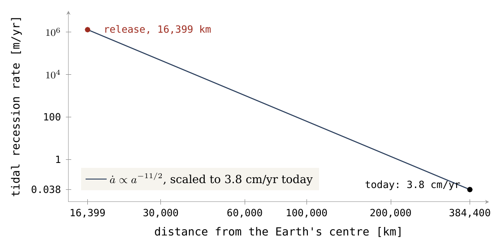
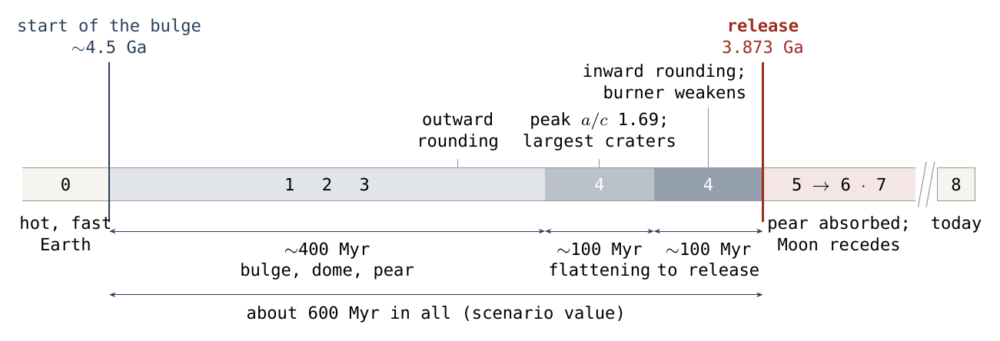
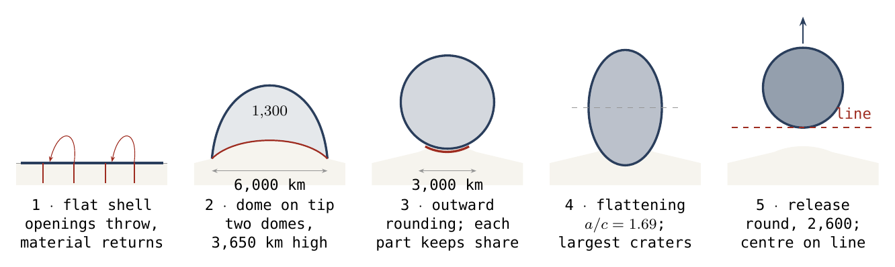
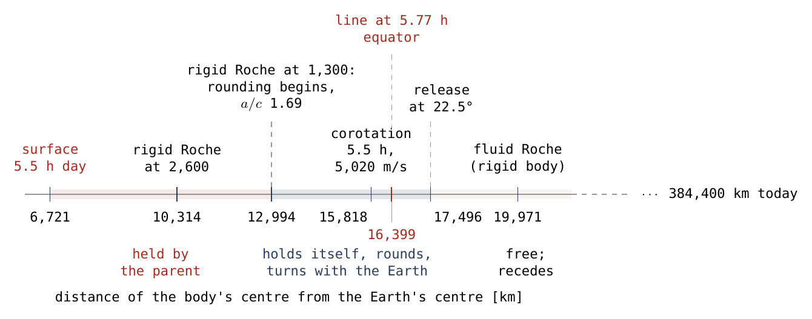
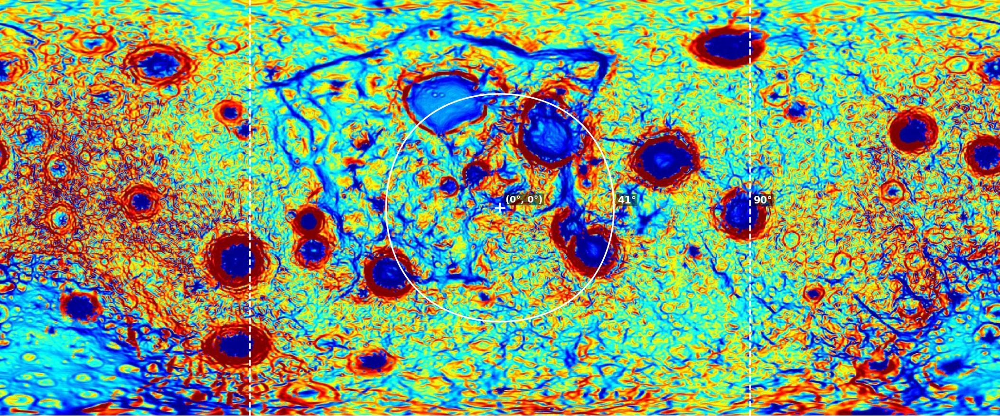

El modelo
La Luna se construyó a partir de la Tierra mientras estaba unida a ella, y se liberó donde la rotación de la Tierra ya le había dado velocidad orbital
Este artículo presenta el modelo LEF — Lunar Elevation and Fission (Elevación y Fisión Lunar) — como un único proceso: la Luna se formó a partir de la Tierra mientras estaba unida a ella, y fue liberada allí donde la rotación de la Tierra ya le había dado la velocidad de una órbita libre. El artículo no calcula nada nuevo. Narra todo el proceso como una sola historia continua, presenta cada uno de los diez artículos (2–11) que calculan sus pasos, y reúne en un solo lugar lo que la serie ha medido y lo que el modelo requiere.
El modelo es un modelo de proceso, no una simulación. Propone una secuencia de sucesos físicos; para cada suceso la serie muestra que la física estándar lo permite en las condiciones calculadas, da el número que lo fija y nombra la observación que lo pone a prueba.
La historia transcurre en las etapas 0–8. Una Tierra caliente y de rotación rápida, que gira una vez cada 5.5 horas con su hierro todavía descendiendo, mantiene una presión de 150 GPa en su fuente — suficiente para elevar un fundido espumado y rico en volátiles, más ligero que 3,864 kg/m³, hasta la línea de corrotación, la distancia a la que girar con la Tierra ya significa orbitarla. La presión levanta un abultamiento. En su punta se asienta un cuerpo alimentado desde dentro por el fundido profundo y cubierto desde fuera por la corteza externa de la Tierra, que asciende con él como la piel de un domo: un cuerpo aplastado sobre un contacto de 6,000 km, con su domo superior de unos 3,650 km de altura, que contiene la masa lunar a 1,300 kg/m³. El material lanzado desde aberturas alrededor de la región regresa a la velocidad con que salió, 5 km/s, y produce cráteres en esa corteza mientras todavía yace sobre la Tierra. El abultamiento se estira en una pera del propio material de la Tierra, de unas nueve a doce masas lunares según la anchura de su base (Artículo 3); es parte de la Tierra, retenida por la gravedad de la Tierra como cualquier parte de ella, y no es lanzada, porque su velocidad no es una velocidad de lanzamiento y se encuentra dentro de la línea de corrotación. Su base, de 9,000–11,000 km de ancho, se sitúa cerca de Kiritimati, en el Pacífico central, sobre la gran provincia de baja velocidad del Pacífico, y su punta se retrasa hacia el oeste. Mientras está unido, el cuerpo se redondea hacia fuera, se achata — su diámetro ecuatorial alcanza 1.69 veces su diámetro polar, con 12,994 km — y se redondea hacia dentro, apiñando los cráteres de sus polos (una razón limpia de 1.20 0.05, que crece con el tamaño del cráter hasta 1.53). Mientras el cuerpo está unido, su calor procede de la Tierra: entra por Imbrium y Serenitatis, atraviesa el cuerpo y levanta bajo la cara oculta el domo que se convierte en South Pole–Aitken. Serenitatis se desprende primero; Imbrium permanece conectado y es el último en separarse. Tras la liberación el calor es propio de la Luna, con radiación de la cercana Tierra que se desvanece a medida que la Luna se aleja, y la Luna se enfría lentamente, primero los mares y más tarde su centro. La pera que se alarga frena a la Tierra y el núcleo que se reúne la acelera: en la liberación el día dura 5.77 horas y la línea de corrotación se encuentra a 16,399 km. La Luna, redonda y rígida, a 2,600 kg/m³, comienza a separarse cuando su centro de masa alcanza esa línea y se desgaja un poco más allá, unos 210 km pasada la línea, hace 3.873 mil millones de años. El sistema contiene entonces 1.007 veces el momento angular actual, donde la fisión clásica necesitaba 2.74 veces. La Luna entra en una órbita inclinada según la latitud de la que partió, 22.5°, que decae hasta 5.145° a la distancia actual, el valor observado. La liberación no hace caer la pera: la diferenciación que actúa sobre ella en cualquier caso la reabsorbe en la Tierra a lo largo de decenas a cientos de millones de años. Su parte pesada se hunde hasta la base del manto bajo la base, su pared delantera se pliega en las franjas del Pacífico Norte, y su parte trasera se reúne en los arcos del Pacífico occidental.
La misma idea, seguida en Marte por otra vía, da sus dos pequeñas lunas. El artículo concluye con el semáforo de la serie de observaciones puestas a prueba, los dieciocho requisitos del Artículo 11 con sus pruebas, las dos observaciones clave del modelo con sus resultados (la geometría de las zonas de exposición y el origen del material del registro de cráteres), y la serie de doce artículos con el trabajo que queda abierto.
La Luna se formó a partir de la Tierra, mientras estaba unida a ella, y fue liberada allí donde la rotación de la Tierra ya le había dado la velocidad de una órbita libre. Ese es todo el modelo, y es un proceso: una Tierra caliente y de rotación rápida, con su hierro todavía descendiendo, concentra una presión bajo una región; la presión levanta un abultamiento, que se estira en una pera; en la punta de la pera se asienta un cuerpo que crece a la vez desde dentro y desde fuera; el cuerpo se redondea, se achata y vuelve a redondearse mientras está unido; y cuando su centro de masa alcanza la línea de corrotación comienza a separarse, y un poco más allá de ella, unos 210 km pasada la línea, se desgaja — redondo — hacia la órbita. La pera es luego reabsorbida en la Tierra y deja en ella sus pliegues.
Cinco números sostienen el modelo. Cada uno se calcula en la serie.
La liberación. La línea de corrotación en la liberación se encuentra a 16,399 km, con un día terrestre de 5.77 horas — unos 2.6 radios terrestres (Artículo 2).
El balance. El sistema en la liberación contiene 1.007 veces el momento angular actual; la vía clásica necesita 2.74 veces (Artículo 2).
El empuje. La presión en la fuente es de 150 GPa; elevar un fundido de 3,500 kg/m³ hasta la línea cuesta 139.78 GPa y deja 10.49 (Artículo 3).
La densidad. El cuerpo en la punta de la pera tiene 1,300 kg/m³, en la liberación 2,600, hoy 3,344 (Artículo 3).
La edad. La separación tuvo lugar hace 3.873 mil millones de años, la edad a la que se reiniciaron los relojes de norita de South Pole–Aitken (Artículo 8).
Lo que el modelo requiere. Un progenitor todavía casi uniforme en su interior cuando comienza la transferencia (coeficiente de momento de inercia ); un fundido profundo más ligero que 3,864 kg/m³, lo que es una espuma rica en volátiles y no lo es un fundido seco; una corteza lo bastante rígida para conservar sus cráteres ( Pa s); una pera, retenida como cualquier parte de la Tierra por la gravedad de la Tierra, que permanece dentro de la línea de corrotación y lleva el cuerpo hasta ella; una Luna redonda y rígida en la liberación (razón de ejes ). Cada requisito se enuncia con su prueba en el Artículo 11 y se reúne en la Parte E.
Los requisitos del modelo, y lo que lo pondría a prueba, están reunidos en el Artículo 11 (Los requisitos).
Introducción — una respuesta de otro tipo
El origen de la Luna suele presentarse como una cuestión resuelta: un cuerpo del tamaño de Marte golpeó a la joven Tierra, y la Luna se acrecionó a partir de los escombros. Ese modelo ha explicado mucho y está respaldado por un cálculo extenso. Pero cada una de las propiedades más distintivas de la Luna le ha exigido añadir algo. El material de la Luna es isotópicamente el de la Tierra, de modo que el impacto tuvo que mezclar los dos cuerpos por completo [2, 3]. La órbita de la Luna está inclinada cinco grados respecto al plano en el que la habría dejado un disco de escombros, de modo que una resonancia, un planetesimal de paso o una Tierra inclinada más de setenta grados tuvo que inclinarla después [4, 5]. La corteza de la cara oculta es más gruesa que la de la cara visible, de modo que una segunda luna tuvo que caer sobre ella [6]. No son fracasos. Son el coste de un modelo en el que la Luna se ensambla a partir de fragmentos en el espacio.
El modelo presentado aquí no paga ninguno de esos costes, porque en él la Luna no se ensambla a partir de fragmentos. Es elevada, como un único cuerpo conectado, fuera de la Tierra, y liberada. Su material tiene la composición de la Tierra porque procede de la Tierra. Su órbita está inclinada porque partió de una latitud, no de un disco ecuatorial. Su cara oculta es gruesa porque está construida con muchas capas de sial compactado, que las fuerzas del giro llevaron hasta la punta del abultamiento, y con material de retorno que llegó a ella una y otra vez; la cara visible era la base. Lo que el modelo debe pagar a cambio es la elevación, y ese precio está calculado: la presión, el momento angular, la conexión y la liberación.
Este es un modelo de proceso, y el término debe definirse antes de enunciar el modelo. Una simulación resuelve las ecuaciones de movimiento para un estado inicial elegido e informa de lo que sucede. Un modelo de proceso parte de una secuencia de sucesos propuesta. Para cada paso muestra que la física permite el suceso, da el número que lo fija, comprueba que los números concuerdan entre sí y nombra una observación concreta que lo pone a prueba. La hipótesis del gran impacto fue un modelo de proceso durante muchos años antes de que se ejecutaran las primeras simulaciones [7]. El presente modelo está en esa etapa, y la serie está escrita para que pueda ser puesto a prueba. Ningún paso pide al lector que lo acepte sin su número.
Cómo está construido este artículo. Narra primero la historia y presenta después los artículos. La Parte A enuncia lo que cualquier modelo del origen lunar tiene que explicar y por qué la vía de la elevación estuvo cerrada durante un siglo. La Parte B narra el proceso en las etapas 0–8 como un relato continuo, con el número central de cada etapa y el artículo que lo calcula. La Parte C presenta los diez artículos que calculan el modelo, uno tras otro: la tesis de cada uno y, después, cada una de sus partes en un párrafo. La Parte D reúne el semáforo de la serie — cada observación puesta a prueba, en verde, naranja o retirada. La Parte E reúne los requisitos y presenta las dos observaciones clave del modelo con sus resultados. La Parte F enumera los doce artículos y lo que queda abierto.
| Parte | Título | La pregunta que resuelve |
|---|---|---|
| A | Lo que hay que explicar | ¿Qué propiedades debe explicar cualquier modelo del origen, y por qué se pensó que la elevación era imposible? |
| B | El proceso, en las etapas 0–8 | ¿Qué sucedió, en qué orden y con qué número en cada etapa? |
| C | Los artículos, uno tras otro | ¿Qué sostiene cada uno de los Artículos 2–11, y qué establece cada una de sus partes? |
| D | El semáforo de la serie | ¿Qué se ha medido, y cuál fue el resultado de cada prueba? |
| E | Requisitos y observaciones clave | ¿Qué debe cumplirse si el modelo es correcto, y cuál fue el resultado de sus dos observaciones clave? |
| F | La serie | ¿Cómo se ordenan los doce artículos, y qué queda para el trabajo futuro? |
El proceso tuvo lugar en una Tierra que ya no existe, y el modelo se enuncia en ese entorno, no en el actual. Hace unos 4.5 mil millones de años la Tierra era más pesada en una Luna — su masa, kg, es la Tierra actual y la Luna actual en un solo cuerpo. Estaba caliente en todo su interior y dilatada por su calor, con un radio volumétrico de 6,517 km (unos 6,721 km en el ecuador, porque un cuerpo de rotación rápida se abulta allí). Giraba una vez cada 5.5 horas. Su hierro todavía descendía; la organización de su núcleo apenas había comenzado, como la primera etapa de un largo proceso continuo. Una atmósfera de vapor de cientos de bares cubría una superficie fundida, y sobre ella flotaba una piel siálica fría y rígida.
Cada número de los artículos que siguen se calcula en estas condiciones. Las condiciones de la Tierra actual — una corteza sólida, un día lento, océanos, una Luna que se aleja unos centímetros al año — no se le aplican, por lo general por órdenes de magnitud. La tabla siguiente expone el entorno dominio por dominio.
| Dominio | El entorno del proceso | Por qué importa al modelo |
|---|---|---|
| El Sol | Alrededor de un 30% más débil que hoy, pero mucho más activo en viento y ultravioleta [1] | Las superficies se enfrían más deprisa; los volátiles escapan al espacio por pérdida hidrodinámica; el cielo no es una fuente de calor |
| La masa de la Tierra | kg — la Tierra actual () y la Luna actual () juntas, en un solo cuerpo | El material de la Luna está dentro del progenitor; nada ha salido todavía |
| El tamaño | Radio volumétrico de 6,517 km, incluida una dilatación térmica de 120 km; en un esferoide achatado por su giro, radio ecuatorial de 6,721 km y polar de 6,128 km (Artículo 2) | La dilatación es un requisito: por debajo de 98 km de dilatación el balance no se cierra (Artículo 2) |
| El día | 5.5 horas al principio; 5.77 horas en la liberación, porque la pera que se alarga frena el giro y el hierro que se hunde hacia el centro lo acelera (Artículo 2). La velocidad ecuatorial al principio es de unos 2.1 km/s, y el cielo gira cuatro veces más deprisa que hoy | La línea de corrotación se encuentra a 15,818 km al principio (5,020 m/s) y a 16,399 km en la liberación — a solo unos 2.5–2.6 radios terrestres, donde hoy se encuentra a la distancia de los satélites geoestacionarios |
| La gravedad | Unos 8.25 m/s² en el ecuador y 9.5 a la latitud de 44°, en el progenitor achatado y en rotación | La gravedad no es un único número; cambia con la latitud, con la masa que sale y con el cuerpo que se eleva sobre la superficie |
| El interior | Caliente en todo su interior; el hierro descendiendo, el núcleo apenas comenzando a reunirse (); un océano de magma bajo una delgada piel enfriada | El momento angular se almacena como en un cuerpo casi uniforme; el interior puede fluir; se dispone de una presión de 150 GPa en la fuente (Artículo 3) |
| El agua | No hay agua líquida. Los océanos actuales son una atmósfera de vapor de cientos de bares sobre una superficie fundida; los volátiles están disueltos en el fundido y son mucho más abundantes que hoy | Los volátiles reducen la densidad del fundido ascendente a unos 1,300 kg/m³ en el cuerpo de la punta; no elevan la presión por encima del valor litostático; no hay océano que llene una cuenca |
| La corteza externa | Una piel siálica fría y rígida de 2,800 kg/m³ sobre una base móvil — lo único rígido del sistema, y lo único que puede conservar un cráter | Su sial, llevado hasta la punta de la pera y reunido allí en muchas capas, se convierte en la corteza de la cara oculta de la Luna y lleva su registro más antiguo; debe ser más rígido que Pa s para conservar sus cráteres (Artículo 3) |
| El lugar | La base de la pera cerca de Kiritimati (aprox. 1.9°N 157.5°W, Pacífico central), sobre la gran provincia de baja velocidad del Pacífico en el fondo del manto; la pera se inclinaba hacia atrás, hacia el oeste y el norte, sobre el Pacífico centro-norte (la lectura anterior de la fuente, aprox. 25°N 165°E) (Artículos 3, 9) | Cada posición se da en el marco actual (véase el recuadro sobre los ejes más abajo) |
| El tiempo | Inicio hace unos 4.5 mil millones de años; en la cronología aproximada de la serie, unos 600 Myr desde el inicio del abultamiento hasta la liberación a 3.873 Ga: unos 400 Myr para el abultamiento y la pera, unos 100 Myr de achatamiento, unos 100 Myr hasta la liberación (Artículos 2, 8, 11) | Un escenario de trabajo, no una duración medida; cuánto tiempo estuvo unida «la Luna» depende de lo que se llame Luna (Parte B) |
| Los ritmos | Los ritmos no son los actuales. El alejamiento de marea de la Luna disminuye unos siete órdenes de magnitud entre la liberación y hoy, cuando es de 3.8 cm al año; un cuerpo liberado justo dentro de la corrotación cae hacia dentro durante miles de millones de años y luego se desintegra en decenas de millones (Artículos 4, 10) | Procesos que hoy duran miles de millones de años duraban entonces miles; el orden de los sucesos lo fijan ritmos que disminuyeron a medida que la Luna se alejaba |
La imagen que da la tabla es la de un planeta que gira en cinco horas y media bajo una atmósfera de vapor, incandescente en la superficie, con una piel fría flotando sobre él, y sin Luna. La Figura 1 muestra lo relativo a los ritmos: un alejamiento de marea de unos pocos centímetros al año hoy era, cerca de la Tierra, un alejamiento de una naturaleza muy distinta. El proceso que sigue es cómo salió la Luna de ese planeta.

El sistema de ejes de la Tierra y la Luna, desde la liberación hasta hoy, no se resuelve en esta serie. Es un problema en sí mismo. Intervienen cuatro planos — el ecuador de la Tierra, la órbita de la Luna, el ecuador de la Luna y la eclíptica. Los ejes se mueven de dos maneras distintas, por el lento desplazamiento del cuerpo respecto a su eje de giro y por la precesión del eje de giro en el espacio, a ritmos que difieren en órdenes de magnitud. El abultamiento congelado de la Tierra guarda una memoria desconocida de giros anteriores, y las partes se retroalimentan entre sí.
Por ello la serie da cada posición en el marco actual: la base de la pera cerca de Kiritimati, las franjas del Pacífico Norte, las salidas bajo South Pole–Aitken. Donde importa una orientación pasada — los 22.5° de la liberación, el ecuador de las franjas inclinado al menos 10° respecto al actual — el artículo que la usa lo indica. Los ejes son trabajo futuro, no un artículo de la serie (Parte F); su solución puede cambiar partes del modelo, y el modelo se enuncia en una forma que lo permite.
Lo que hay que explicar
¿qué propiedades de la Luna debe explicar cualquier modelo de su origen, cuáles de ellas le costaron sus añadidos a la imagen del ensamblaje a partir de fragmentos, y por qué estuvo cerrada la vía de la elevación? El enfoque: enumerar las siete propiedades que el Artículo 11 convierte en requisitos, poner los añadidos del modelo de colisión junto a lo que una Luna elevada obtiene de su geometría, y reevaluar la objeción del momento angular en el lugar donde esta vía realmente libera la Luna.
La Parte A fija el objetivo. Antes de narrar el proceso en la Parte B, el lector debe saber qué tiene que producir: una lista de propiedades que tiene la Luna, cada una medida, cada una de las cuales debe producir un modelo del origen. La lista es breve, y cada elemento se examina de nuevo, con su prueba, en el Artículo 11.
A.1Las siete propiedades de la Luna
La Luna está hecha del material de la Tierra: sus isótopos de oxígeno, titanio, cromo y wolframio son indistinguibles de los de la Tierra con una diferencia de unas pocas partes por millón [2, 8]. Los isótopos son formas de un mismo elemento que difieren solo en la masa; sus proporciones difieren de un cuerpo del Sistema Solar a otro y son difíciles de cambiar una vez formado un cuerpo, de modo que actúan como una etiqueta de origen. Para el oxígeno la diferencia Tierra–Luna es de ppm (partes por millón). La Luna tiene un pequeño núcleo metálico: su radio sísmico es de unos 330 km, alrededor del 1.4% de la masa de la Luna [9], frente al 32% de la Tierra. Su corteza es más gruesa en la cara oculta que en la cara visible [10] — unos 10 km entre el centro de la cara visible y la cara oculta, y unos 8 km en medias hemisféricas. Mantiene una cara vuelta hacia la Tierra. La superficie de su cara oculta se cerró y se conservó antes de que se aquietara la cara visible alimentada, y la cara oculta es más antigua que los mares de la cara visible. Su fundido temprano llevaba agua: las inclusiones de fundido — diminutas gotas de magma selladas dentro de cristales al formarse — contienen 615–1,410 ppm [11]; los volátiles han escapado desde entonces al espacio, y el interior medido hoy está seco. Y su centro de masa se encuentra unos 2 km hacia la Tierra respecto al centro de su figura.
El Artículo 11 convierte estas siete propiedades en siete requisitos, R1–R7, cada uno con la magnitud que lo pone a prueba. La Tabla A.1 los enumera. A las siete se añade aquí una propiedad más, porque es la que un disco de escombros no puede dar sin ayuda: la órbita de la Luna está inclinada 5.145° respecto a la eclíptica.
| Propiedad | Lo que se mide | Lo que debe mostrar una Luna elevada | |
|---|---|---|---|
| R1 | El material de la Tierra | O ppm; isótopos de Ti, Cr y W coincidentes con los de la Tierra | Una composición alcanzable como mezcla de las dos fuentes terrestres, la alimentación profunda y la corteza ascendente |
| R2 | Un núcleo pequeño | Núcleo sísmico de unos 330 km de radio, alrededor del 1.4% de la masa | Poco metal llegó a la Luna: la alimentación fue principalmente silicatada con un poco de metal terrestre, alrededor del 1.47% del material profundo contando solo el metal que llegó al núcleo; la mayor parte del material del núcleo regresó pera abajo hacia la Tierra |
| R3 | Una cara oculta más gruesa | GRAIL: cara oculta más gruesa en unos 8–10 km | Muchas capas de sial compactado que migraron a la punta, y de material de retorno, en el hemisferio oculto |
| R4 | Una cara vuelta hacia la Tierra | Rotación sincrónica | La cara por la que la Luna estaba unida es la cara que mira a la Tierra |
| R5 | Un orden de conservación | Cara oculta más antigua que los mares de la cara visible | La cara oculta se cerró y conservó su registro antes de que se aquietara la cara alimentada |
| R6 | El agua | 615–1,410 ppm en inclusiones de fundido | Volátiles suficientes, en el estado adecuado, para espumar la alimentación |
| R7 | El centro de masa | Unos 2 km hacia la cara visible | Una corteza de la forma modelada da 1.24–3.11 km para contrastes de densidad de 300–750 kg/m³ |
| + | La inclinación de la órbita | 5.145° respecto a la eclíptica | Una órbita inclinada según la latitud de la que partió (Artículo 4) |
Cómo leer la tabla. Cada fila une una propiedad medida con un paso de la vía: R1 con la fuente, R2 con la alimentación, R3 y R7 con la construcción de la corteza de la cara oculta y la forma de la corteza, R4 con la conexión, R5 con el orden en que se conservaron las dos caras, R6 con las condiciones que necesitaba la alimentación. El Artículo 11 no las cuenta como siete pruebas: la cara oculta gruesa, el centro de masa desplazado y la ubicación de los mares son una sola distribución de material vista de varias maneras, y contarlas por separado contaría un mismo hecho varias veces. El Artículo 11 añade once requisitos más, R8–R18, que se derivan de la pera y de los artículos posteriores; la Parte E enumera los dieciocho.
A.2Lo que tuvo que añadir el modelo de colisión
La tabla siguiente pone el modelo de colisión y la Luna elevada uno junto al otro, propiedad por propiedad. La columna central es lo que la familia del gran impacto debe añadir para obtener cada propiedad; la columna derecha es lo que una Luna elevada desde la Tierra obtiene de la geometría de la vía.
| Propiedad | Lo que debe añadir la familia del gran impacto | Lo que obtiene una Luna elevada |
|---|---|---|
| Material idéntico al de la Tierra | Mezcla completa del impactor y la Tierra: una sinestia o una colisión muy energética [2, 3] | El material es el de la Tierra; no se requiere mezcla (Artículos 3, 11) |
| Órbita inclinada 5° | Una excitación posterior: una resonancia de evección, encuentros con planetesimales o una oblicuidad inicial elevada de la Tierra [4, 5] | La inclinación es la latitud de liberación, : 22.5° en la liberación, 5.145° a la distancia actual según la ley de decaimiento reducida, el valor observado (Artículo 4) |
| Corteza de la cara oculta más gruesa | Una segunda luna compañera que se acreciona sobre la cara oculta [6] | La cara oculta son muchas capas de sial compactado, llevado hasta la punta del abultamiento por las fuerzas del giro, y de material de retorno que llegó una y otra vez; la cara visible era la base (Artículo 3) |
| Núcleo pequeño | El núcleo del impactor se hunde en la Tierra, y se retiene una pequeña fracción | Todo el metal de la Luna es terrestre. Mucho hierro entró en la pera, menos hacia su punta, y la alimentación que llegó a la Luna fue principalmente silicatada con un poco de metal; en la separación el material pesado del núcleo se encontraba en el último tercio del cuerpo, no cruzó la línea de corrotación y regresó pera abajo hacia la Tierra (Artículos 3, 11) |
| Agua en el interior temprano | Aporte por el impactor o por acreción posterior, después de que el calor del impacto expulsara los volátiles | El fundido era rico en volátiles; los volátiles son lo que lo hizo lo bastante ligero para ascender (Artículo 3) |
| Momento angular | Fijado por la geometría del impacto y reducido después por una resonancia de evección [4] | 1.007 veces el actual en la liberación, para un progenitor que comenzó con 5.5 horas (Artículo 2) |
La tabla es un argumento de economía. En el modelo de colisión cada propiedad tiene su propia causa, añadida para ella: mezcla completa para los isótopos, una resonancia o un encuentro para la inclinación, una segunda luna para la cara oculta, una pérdida de volátiles seguida de un retorno de agua. En el modelo de elevación las mismas propiedades proceden de una sola causa — la vía por la que salió el material — y el modelo paga en cambio por la elevación. El resto de la serie calcula lo que la elevación requiere.
A.3Por qué se pensó que la elevación era imposible
La objeción. La fisión — la idea de que una Tierra de rotación rápida desprendió la Luna — fue propuesta por Darwin en 1879 y descartada en pocas décadas [12]. La razón era aritmética: una Luna lanzada desde la superficie de la Tierra requeriría que la Tierra girara tan deprisa que el sistema Tierra–Luna habría tenido que contener unas cuatro veces el momento angular que contiene hoy. El momento angular es la cantidad total de giro de un sistema — el giro de la Tierra sobre su eje más el movimiento de la Luna a su alrededor. Permanece fijo a menos que algo exterior al sistema lo tuerza, y como nada exterior ha añadido nada, el exceso no tenía adónde ir. La aritmética es correcta. El Artículo 2 muestra lo que supone: que el material sale de la superficie, a la velocidad de la superficie.
Por qué falla la superficie. En la superficie de un progenitor que gira una vez cada 5.5 horas, la rotación lleva el material a unos 2,133 m/s; una órbita libre a esa altura necesita unos 7,701 m/s. El material liberado allí queda unos 5.6 km/s por debajo de la velocidad orbital y vuelve a caer. La única manera de cerrar la diferencia en la superficie es hacer girar más deprisa a toda la Tierra, y un giro más rápido cuesta momento angular. En el punto clásico en que un cuerpo fluido en rotación se vuelve inestable — la bifurcación de Jacobi — el progenitor gira una vez cada 2.73 horas y contiene unos kg m² s, 2.74 veces lo que contiene hoy el sistema Tierra–Luna. El valor de unas cuatro veces (4.08) procede del cálculo de referencia original, hecho en un punto distinto de la misma secuencia de formas en rotación; es el origen de la afirmación conocida.
Por qué funciona la línea de corrotación. La vía LEF cierra la diferencia de otra manera: no haciendo girar más deprisa a la Tierra, sino llevando el material hacia fuera mientras todavía gira con la Tierra. Un cuerpo que gira con la Tierra da una vuelta en cada día terrestre, de modo que cuanto más lejos está, más deprisa se mueve; la velocidad que necesita una órbita circular libre disminuye con la distancia. Las dos velocidades se encuentran a una distancia, el radio de corrotación: Aquí es la velocidad de giro de la Tierra ( dividido por la duración del día), la constante gravitatoria y la masa de la Tierra. En palabras: el radio de corrotación es la única distancia a la que una órbita circular tarda exactamente lo mismo que una vuelta de la Tierra. Para un día de 5.5 horas se encuentra a 15,818 km, donde ambas velocidades son de 5,020 m/s; este valor toma para la masa de la Tierra sola, como para una partícula de prueba, mientras que con la masa completa del progenitor, kg, la misma fórmula da 15,883 km (Artículo 3, §A.9) — dos definiciones, ambas usadas en la serie. Los satélites geoestacionarios actuales se sitúan en la misma línea para el día actual; con un día de unas pocas horas la línea se encontraba a solo unos dos radios terrestres y medio. Una masa liberada allí ya está en órbita. Una imagen cotidiana: un niño que camina desde el centro de un tiovivo que gira hasta su borde se mueve más deprisa en el borde sin que nadie empuje el tiovivo con más fuerza. El cuerpo ascendió del mismo modo — ganando velocidad gradualmente a lo largo de la subida, no de un solo lanzamiento. Darwin calculó lo que se necesita para lanzar una luna desde la superficie; la vía LEF hace crecer una y la lleva hacia fuera.
El balance en la línea. El giro que la Tierra necesita para esto es el giro que habría tenido si se le devolviera todo el momento angular actual: unas 5.5 horas. Un progenitor uniforme de radio volumétrico 6,517 km, achatado por su giro hasta un radio ecuatorial de 6,721 km y que gira en 5.5 horas, contiene kg m² s. Durante la transferencia la pera que se alarga frena a la Tierra y el hierro que se hunde hacia el centro la acelera; en la liberación el día dura 5.77 horas y la línea de corrotación, incluida la masa propia de la Luna, se encuentra a 16,399 km. Allí la órbita de la Luna contiene (el 17% del balance; este es el momento angular orbital del par alrededor de su centro común, con la masa reducida — contando la masa lunar completa alrededor del centro de la Tierra se obtiene ) y el giro de la Tierra ; el sistema contiene 1.007 veces el momento angular actual ( frente a ), el mismo total que contenía al principio. El excedente, un 0.7% en la suma escalar y un 1.5–2.5% frente a la suma vectorial en los ángulos probados, tiene el signo requerido: desde la liberación, las mareas solares han extraído alrededor del 1% del momento angular del sistema. La Tabla A.3 pone las vías una junto a otra.
| Vía | Dónde se produce la igualación de velocidades | Día terrestre | Momento angular / actual |
|---|---|---|---|
| Fisión clásica, punto de referencia original | la superficie | — | unas 4 (4.08) |
| Fisión clásica, bifurcación de Jacobi | la superficie | 2.73 h | 2.74 |
| LEF, el balance conservado | línea de corrotación: 15,818 km al principio, 16,399 km en la liberación | 5.5 5.77 h | 1.007 |
Tabla A.3. El precio en momento angular del mismo producto — una Luna en órbita — según la vía. El rojo se atenúa a medida que baja el precio: la vía clásica evalúa la condición de velocidad en la superficie y paga de dos a cuatro veces el balance actual; la vía LEF la evalúa en la línea de corrotación y paga lo que contiene el sistema (Artículo 2, §A.6).
Cómo leer la tabla. Las filas van de la vía más cara a la más barata, y el color se atenúa con el precio. Las dos filas rojas piden a la superficie de la Tierra que alcance la velocidad orbital, lo que fuerza al progenitor hacia la ruptura. La última fila nunca usa esa condición: el material es llevado hacia fuera en corrotación y la igualación de velocidades se produce en la línea, donde un progenitor que gira una vez cada 5.5 horas ya proporciona la velocidad orbital. Durante la transferencia la pera y el núcleo cambian el día y desplazan la línea, pero solo trasladan momento angular entre el giro de la Tierra y la órbita de la Luna; el total es el mismo al principio y en la liberación, 1.007 veces el actual (una versión anterior daba 1.008 para el estado de liberación, a partir del total actual redondeado a ). La objeción que cerró la vía se evaluó en el lugar equivocado.
Lo que cuesta y lo que requiere. La transferencia no es gratuita: alrededor del 15.6% del balance inicial se entrega al material ascendente en el cálculo de base, alrededor del 16.5% en la solución acoplada; en la liberación, incluido el núcleo, la órbita de la Luna contiene alrededor del 17% del balance (17.0–17.1%; el 17.7% es la parte correspondiente a la pera sola, sin el núcleo). Son transferencias dentro del sistema, no pérdidas de él. La vía impone además una condición que el Artículo 2 enuncia como requisito: el progenitor debe ser todavía casi uniforme en su interior, con al comienzo de la transferencia, donde mide cómo se reparte la masa entre el centro y la superficie (0.4 para una esfera uniforme, unos 0.33 para la Tierra actual con su núcleo). Una Tierra cuyo hierro ya se hubiera reunido almacena menos giro con el mismo día, y el balance no se cerraría.
Lo que tenemos ahora: siete propiedades medidas, y una octava — la inclinación — que una Luna elevada debe producir a partir de su geometría; un modelo de colisión que obtiene cada una de ellas mediante un añadido; y una objeción a la elevación que desaparece cuando la condición de velocidad se evalúa en la línea de corrotación en lugar de en la superficie. La Parte B narra ahora cómo llegó allí la Luna.
El proceso, en las etapas 0–8
¿qué sucedió, en qué orden y con qué números? La respuesta: un proceso continuo en nueve etapas, numeradas de 0 a 8, desde una Tierra caliente y de rotación rápida hasta la Luna y la Tierra actuales. Cada etapa se calcula o se mide en uno de los artículos posteriores, y cada una lleva un número al que el lector puede atenerse. Las etapas transcurren en el entorno del proceso expuesto al comienzo de este artículo: una Tierra de kg — la Tierra y la Luna actuales juntas — dilatada por el calor hasta un radio volumétrico de 6,517 km, que gira una vez cada 5.5 horas, hace unos 4.5 mil millones de años.
Esta Parte narra el modelo como una sola historia, de principio a fin, sin detenerse a argumentar cada paso; los argumentos están en los artículos citados en cada etapa, y la Parte C los presenta artículo por artículo. La historia abarca unos 600 millones de años desde el inicio del abultamiento hasta la liberación de la Luna hace 3.873 mil millones de años (3.873 Ga). La división de ese intervalo es un valor aproximado de escenario, no una duración medida: aproximadamente 400 millones de años (Myr) para el abultamiento y la pera, unos 100 Myr de achatamiento, y unos 100 Myr desde el final del achatamiento hasta la liberación (Artículo 3, tabla del entorno; Artículos 4, 6, 7). El único punto fijo en el tiempo es el final: 3.873 Ga es la edad a la que se reiniciaron los relojes de las noritas de South Pole–Aitken, y en el modelo ese reinicio es la separación misma (Artículo 8). La Figura B.1 sitúa las etapas en este eje temporal.
Cuánto tiempo estuvo «unida» la Luna depende de lo que se llame Luna, y la respuesta debe enunciarse en lugar de suponerse. Si la Luna es su material, comenzó a reunirse cuando comenzó el abultamiento, unos 600 Myr antes de la liberación. Si es un cuerpo asentado en la punta de la pera, comienza en la etapa 2. Si es un cuerpo que se mantiene unido por su propia gravedad, comienza solo al inicio del redondeo hacia dentro, a unos 13,000 km del centro de la Tierra (etapa 4). Las tres son el mismo proceso visto desde puntos distintos; la serie usa la primera cuando habla de la ventana de construcción.

La figura se lee de izquierda a derecha. La banda pálida antes del inicio es la etapa 0, la Tierra caliente antes del abultamiento. El intervalo más largo, de unos 400 Myr, contiene las etapas 1–3: el abultamiento, el domo y la pera. Los dos intervalos más oscuros contienen la etapa 4: el cuerpo se achata con el giro y produce sus cráteres más grandes, y luego se redondea hacia dentro mientras el calor bajo su cara oculta se debilita. La línea roja es la liberación, etapa 5; a su derecha la pera es absorbida por la Tierra (etapa 6) y la Luna se aleja (etapa 7), hasta la Luna y la Tierra actuales (etapa 8).
Una palabra sobre la numeración. El Artículo 3 numera sus propias etapas desde el exterior del cuerpo: su etapa 1 es la corteza plana, su etapa 2 el cuerpo en la punta de la pera, su etapa 3 el redondeo hacia fuera. En esta Parte las etapas se numeran para todo el proceso, de 0 a 8, y la corteza plana pertenece a la etapa 1, el abultamiento.
B.0Antes del abultamiento — la Tierra caliente y rápida
El proceso parte de una Tierra que no es la Tierra actual. Contiene la masa de la Tierra y la Luna juntas, kg, ya que no se supone que nada escape: toda la Luna fue una vez parte de la Tierra. Está caliente en todo su interior, con su hierro todavía descendiendo hacia el centro para formar el núcleo, y el calor la ha dilatado unos 120 km hasta un radio volumétrico de 6,517 km — unos 6,721 km en el ecuador y 6,128 km en los polos, porque gira deprisa (Artículo 2). Gira una vez cada 5.5 horas. Su corteza externa es siálica — hecha de sial, la ligera capa superior rica en silicio y aluminio, que se encuentra sobre el más denso sima, rico en silicio y magnesio — y es fría y rígida (Artículo 3, §B.1). La rodea una atmósfera de vapor.
El momento angular. El momento angular es la cantidad de rotación — masa por velocidad lateral por distancia al eje — y se conserva cuando no actúa ninguna torsión exterior. Este progenitor contiene , algo más de lo que contienen hoy la Tierra y la Luna juntas: un 0.7% más en la suma escalar, un 1.5–2.5% frente a la suma vectorial en los ángulos probados (Artículo 2, §A.6). El signo importa: cuatro mil quinientos millones de años de mareas levantadas por el Sol extraen momento angular del sistema, de modo que el progenitor debió de tener algo más que hoy, no menos. El balance se cierra solo para un progenitor todavía casi uniforme en su interior: su factor de momento de inercia , la medida de cuán lejos del eje se encuentra su masa (0.4 para una esfera uniforme, menor cuando la masa se reúne en el centro), debe ser al menos de unos 0.397. La construcción debe por tanto comenzar pronto en la organización del núcleo, mientras poco del hierro se ha reunido todavía en el centro (Artículo 2, §D.3). Esa organización es un único proceso largo y continuo sin límites nítidos: un poco al principio, más mientras crece la pera, y una fase muy larga con el retorno de la pera que continúa hasta hoy.
El radio de corrotación. Un punto de la superficie de un cuerpo en rotación se mueve lateralmente a una velocidad que crece con su distancia al eje; la velocidad que necesita una órbita circular libre disminuye con la distancia. Las dos son iguales a una distancia, el radio de corrotación: allí un cuerpo que simplemente gira con la Tierra ya se mueve a la velocidad de una órbita libre. Para el progenitor de 5.5 horas se encuentra a (Artículo 2, §A.2.1). El número importa porque elimina la antigua dificultad de elevar una luna desde un planeta. En la superficie de este progenitor la rotación da unos 2,133 m/s mientras que una órbita circular necesita unos 7,701 m/s; a un cuerpo liberado allí le faltan unos 5,568 m/s y vuelve a caer. En el radio de corrotación no falta nada: la velocidad ya está ahí, proporcionada por el giro. Todo el modelo es la respuesta a una sola pregunta — cómo llegó el material de la Luna desde la superficie hasta esa línea mientras todavía giraba con la Tierra.
La asimetría y la presión de la fuente. El hierro que desciende no desciende de manera uniforme. Una asimetría del interior concentra el ascenso en una región, una región de alimentación preferente al norte del ecuador, que el Artículo 3 llama Lobe A (§A.4). En la fuente el progenitor mantiene una presión producida por el peso de todo lo que tiene encima: Un gigapascal (GPa) es unas diez mil veces la presión del aire al nivel del mar. El ascenso es una presión, no una fuerza: ábrase un camino desde el interior profundo y el material comprimido asciende por él, como la pasta de dientes sube cuando se aprieta el tubo. Elevar un fundido profundo de 3,500 kg/m³ hasta el radio de corrotación cuesta 139.78 GPa y deja 10.49 GPa de margen; la prueba se supera para cualquier fundido profundo más ligero que unos 3,864 kg/m³ y falla por encima de ese valor (Artículo 3, §A.9–A.10). Un fundido rico en agua y otros volátiles cumple ese requisito; uno seco no. Los volátiles son lo que hace posible la Luna.
Lo que tenemos ahora: una Tierra caliente, dilatada y de rotación rápida, todavía casi uniforme en su interior, con un radio de corrotación a 15,818 km y una presión de la fuente de 150 GPa capaz de elevar un fundido ligero y rico en volátiles hasta ese radio.
B.1El abultamiento — la presión desde dentro
La presión levanta una región de la superficie de la Tierra en un abultamiento (Artículo 3, §C.7). Antes de que el abultamiento se alce, el sial sobre la región todavía yace plano sobre una alimentación activa, y en esta etapa plana comienza el registro de la Luna. El material profundo llega a la corteza a través de aberturas y es lanzado por ellas a kilómetros por segundo. Parte de él vuelve a caer sobre la corteza (Artículo 3, §B.1; Artículo 6).
Ida y vuelta a la misma velocidad. Una pelota lanzada hacia arriba en vertical, sin aire que la frene, vuelve a la mano a la velocidad con que fue lanzada. El material lanzado hacia arriba desde el progenitor hace lo mismo: 5 km/s a la ida, 5 km/s a la vuelta. El giro añade una cosa. Lanzado en vertical, el material conserva la velocidad lateral que tenía en la superficie, pero al ascender esa velocidad lo hace recorrer un ángulo por segundo menor que el que gira la superficie — una niña que camina hacia fuera sobre un tiovivo que gira se queda atrás respecto a las tablas que tiene debajo. Cuando baja, el suelo se ha desplazado hacia el este, y cae al oeste de la abertura. Para un lanzamiento de 5 km/s el vuelo asciende 1,932 km, dura unos 28 minutos y cae unos 1,032 km al oeste — unos mil kilómetros (Artículo 6, §K.1).
Una caída a 5 km/s es un choque. Cuando dos trozos del mismo material se encuentran de frente a 5 km/s, la presión tras el frente de choque es la densidad por la velocidad del frente por la velocidad del material tras él: en basalto, 2,700 kg/m³ 6,750 m/s 2,500 m/s, lo que da (45.6 GPa; Artículo 6, §J.2), por encima de las presiones a las que los minerales del basalto comienzan a registrar el choque. A 2 km/s el mismo cálculo da todavía unos 13 GPa. El material de retorno produce por tanto cráteres del tipo que la literatura interpreta como la marca de un cuerpo venido del espacio. La gravedad no amortigua la caída; devuelve en la bajada exactamente la velocidad que quitó en la subida.
Los cráteres más antiguos de la Luna se producen ahora. Se producen en la Tierra, en una corteza que todavía es de la Tierra, antes de que la Luna exista como cuerpo. Casi todos los cráteres de la Luna, alrededor del 99%, son de material terrestre de retorno; el material ajeno, si llega a encontrarse, estará en cantidades muy pequeñas, aparte del polvo espacial (Artículo 6). Esto importa para todo lo que sigue: la superficie más antigua de la Luna no se formó en la Luna. Se formó aquí, y fue llevada hacia arriba.
La corteza se recoge. La corteza que se convertirá en la piel de la Luna se recoge desde una región del tamaño del Pacífico — unos m² sin sus mares marginales, m² con ellos, de 1.4 a 2.4 veces la superficie del domo superior que cubrirá — como un paño extendido sobre una mesa se recoge hacia dentro cuando se levanta su centro (Artículo 3, §B.1). La corteza no se desliza lejos: este recogimiento hacia dentro pertenece a la etapa plana, antes de que exista el domo.
Lo que tenemos ahora: un abultamiento que asciende bajo una rígida corteza de sial; aberturas en esa corteza que lanzan material de retorno a la velocidad con que salió, 5 km/s a la ida y a la vuelta, 28 minutos en el aire, unos mil kilómetros al oeste, cayendo a 46 GPa; y una corteza que ya lleva cráteres antes de que exista el cuerpo.
B.2El domo — un cuerpo sobre una punta ancha
El abultamiento crece hasta convertirse en un cuerpo asentado en la punta de la prolongación ascendente de la Tierra. La punta es ancha: el contacto entre el cuerpo y la punta tiene 6,000 km de diámetro. El cuerpo es una esfera aplastada sobre esa punta, en dos partes. Su domo inferior yace sobre la punta curva y la sigue — la punta, curvada con un radio de unos 4,000 km, penetra en el cuerpo unos 1,350 km bajo el centro del contacto, como una cabeza empuja hacia arriba un gorro calado sobre ella. Su domo superior se alza sobre el inferior y mide (Artículo 3, §B.2). Dos tercios de la superficie son el domo superior ( m², 67%), un tercio el domo inferior sobre la punta ( m², 33%).
La densidad se deriva de la forma. La masa es la masa de la Luna; la forma fija el volumen, m³, unas dos veces y media el volumen actual de la Luna; y las dos juntas fijan la densidad: 1,300 kg/m³. Cuanto más alto es el domo sobre el mismo contacto, menor es la densidad — un domo tan alto como un hemisferio da unos 2,000 kg/m³, y el domo más bajo posible, de 2,450 km, da los 3,344 actuales (Artículo 3, Figure 7). El domo alto adoptado no es una elección libre. 1,300 kg/m³ es el estado espumado que requiere la prueba de presión de la etapa 0 — un fundido lleno de burbujas de gas, más ligero que el material del que está hecho, como la masa que fermenta es más ligera que su harina y su agua — y es la densidad a la que comienza el achatamiento de la etapa 4 (Artículo 7). La versión anterior de este artículo dibujaba la etapa como un único hemisferio sobre una base de 6,000 km de diámetro, con una superficie de 56.5 millones de km² ( m²), tres veces el hemisferio oculto de la Luna (Artículo 2, E12; Artículo 11, §B.3). El Artículo 3 lo ha sustituido por los dos domos sobre una punta curva; la densidad, 1,300 kg/m³, y el orden de la superficie se mantienen, y en ambas imágenes ninguno de los dos números se elige: se derivan de la base.
| La misma masa lunar | En la punta (etapa 2) | Esfera en la liberación | La Luna hoy |
|---|---|---|---|
| Superficie total | m² | m² | m² |
| Volumen | m³ | m³ | m³ |
| Radio | — (dos domos) | 1,890 km | 1,737 km |
| Densidad | 1,300 kg/m³ | 2,600 kg/m³ | 3,344 kg/m³ |
Tabla B.1. Una masa en tres estados (Artículo 3, §B.2). Leída de izquierda a derecha: el cuerpo se hace más pequeño y más denso.
La tabla es la historia de la densidad de la Luna en tres columnas. La misma masa es grande y ligera en la punta, una esfera de 1,890 km en la liberación, y hoy una esfera de 1,737 km a 3,344 kg/m³. El sombreado se intensifica hacia abajo, hacia la densidad, la magnitud que impulsa toda la secuencia.
El cuerpo todavía está retenido. En esta etapa la gravedad propia del cuerpo — la atracción de su propia masa, que lo mantiene unido — es pequeña frente al estiramiento de marea de la Tierra, la diferencia entre la atracción de la Tierra sobre su lado cercano y su lado lejano. Su razón es de unos 0.11: la atracción propia del cuerpo es alrededor de una novena parte del estiramiento (Artículo 3, §B.2). El cuerpo está por tanto retenido por la Tierra; es un domo sobre una punta, todavía no un cuerpo propio.
La corteza asciende con él y se desliza hacia la punta. La rígida corteza de sial de la etapa 1 asciende con el cuerpo de la pera, como la piel de un globo asciende con el globo; al ascender se separa lentamente de lo que tiene debajo y se desliza pera arriba hasta su punta, hacia el cuerpo, donde se convierte en la superficie del domo superior y después en la corteza de la Luna (Artículo 3, §B.3). Por eso la punta se separa como un cuerpo propio. El requisito que la convierte en corteza es la rigidez: una viscosidad de unos Pa s o más — la viscosidad es la resistencia al flujo lento; la miel tiene más que el agua, y una corteza fría muchísimo más que ambas — lo que impide que un cráter de 100 km de ancho se hunda en diez millones de años con la gravedad del progenitor, 8.25 m/s² (Artículo 3, §B.6). Una corteza que conserva sus cráteres los transporta: un cráter producido en ella antes de que fuera cubierta o transportada va con ella, y conserva su tamaño. La gruesa corteza de la cara oculta está construida con muchas capas de este sial, que migró hasta la punta durante el abultamiento, impulsado por las fuerzas del giro, y se compactó allí, junto con material de retorno que llegó a ella una y otra vez (Artículos 3, 11). Hasta qué profundidad llega no se fija aquí; puede ser mucho más profunda de lo que se ha supuesto.
Lo que tenemos ahora: un cuerpo ligero de la masa de la Luna, 1,300 kg/m³, asentado como un domo superior sobre un domo inferior en una punta de 6,000 km de ancho, con el domo superior de 3,650 km de altura; todavía retenido por la Tierra; y vestido con la corteza de sial de la Tierra, con sus cráteres, como piel.
B.3 La pera — dónde se alzaba y cómo se inclinaba
Bajo el cuerpo, la Tierra misma se estira. La presión estira el único abultamiento en una pera del propio material de la Tierra: ancha en su base sobre la superficie de la Tierra, estrechándose hacia fuera, con el cuerpo en su punta (Artículo 3, §C.7). La pera no es un tubo por el que se bombea material; es un cuerpo de la Tierra, erguido.
Está retenida por la Tierra. Un paso estrecho no puede hacer este trabajo: el Artículo 3 muestra que un paso cilíndrico sin masa no supera el equilibrio de cargas, que solo se supera por encima de un radio de unos 1,000 km (1,017 km), donde el paso ya contiene alrededor de media masa lunar (§A.13). La conexión debe ser ancha, caliente y masiva, y soporta su carga lateral gracias a su forma. La pera lo cumple: es un único arco sin estrechamiento. Es parte de la Tierra, y está retenida por la gravedad de la Tierra como cualquier otra parte de la Tierra; no es lanzada, porque su velocidad no es una velocidad de lanzamiento y no ha cruzado la línea de corrotación. Su anchura está acotada superiormente por la energía necesaria para elevarla:
| Base de la pera | Masa de la pera | Trabajo para elevarla | |
|---|---|---|---|
| 9,000 km | 8.8 masas lunares | J | |
| 10,000 km | 10.4 masas lunares | J | |
| 11,000 km | 12.1 masas lunares | J | del orden de la energía de formación del núcleo |
Tabla B.2. La anchura, la masa y el trabajo de elevación de la pera en la liberación (Artículo 3, §C.7). El naranja se intensifica con el coste.
Una base más ancha contiene más masa, y elevar más masa cuesta más trabajo; a 11,000 km el trabajo alcanza el orden de la energía liberada por el descenso del hierro hacia el núcleo, del orden de J. La serie toma la base como 9,000–11,000 km. A partir de esa anchura de base el Artículo 3 deriva la masa de la pera: unas nueve a doce masas lunares — unas nueve, alrededor del 11% de la masa de la Tierra, para la base de 9,000 km (Artículo 3, §C.9; Artículo 11, R10); el Artículo 9 admite de siete a doce. Elevarla cuesta unos J, más de cinco veces (unas 5.4 veces) la elevación de la Luna misma (una versión anterior decía unas seis veces) (unos J). El hierro que desciende e impulsa el ascenso es la misma evolución que paga la pera. Mientras la pera estaba erguida, el núcleo de la Tierra fue atraído 270–370 km hacia ella (Artículo 3, §E.5).
Crece, y su punta se estrecha. Entre el inicio y la liberación la pera aproximadamente duplica su longitud, de unos 4,000 a unos 8,700 km sobre la superficie de la Tierra; su punta se estrecha a la mitad, de 6,000 a 3,000 km, a medida que el cuerpo que la ocupa se redondea hacia fuera (etapa 4). Toda la pera se encuentra dentro de la línea de corrotación. A lo largo de ella la gravedad efectiva apunta hacia la Tierra en todas partes, de modo que la pera está comprimida a lo largo de su longitud, no tiene estrechamiento que estrangular y — cuando la Luna se ha ido — nada de ella puede quedar en órbita (Artículo 3, §C.7).
Dónde se alzaba. La base de la pera se alzaba sobre la superficie de la Tierra cerca de Kiritimati, en las Islas de la Línea del Pacífico central, sobre la gran provincia de baja velocidad del Pacífico (LLVP) — una amplia región en el fondo del manto, vista en imágenes sísmicas, por la que las ondas de los terremotos viajan más despacio que en el manto circundante. El punto cerca de Kiritimati se encuentra dentro de la región lenta en los cinco modelos de agrupamiento probados y dentro del contorno de dos modelos tomográficos, SMEAN () y SMEAN2 (); el centro de la provincia se encuentra a 1,476–1,657 km al sur-suroeste de él (Artículo 3, §E.4).
Cómo se inclinaba. La pera no estaba erguida en vertical. Su parte exterior, alejada del eje, tenía que moverse más deprisa lateralmente para seguir el giro de la Tierra, y se retrasaba — como se retrasan los brazos de una patinadora cuando los extiende — de modo que toda la pera se inclinaba hacia atrás, hacia el oeste, con su punta y la Luna en ella quedándose atrás (Artículo 3, §C.8). Se inclinaba también hacia el norte, desde una base cerca del ecuador hasta una punta a unos 22.5°N, la latitud de liberación del Artículo 4; la rotación no da esa inclinación, puesto que su empuje lateral es siempre hacia el ecuador; la da la alimentación oblicua desde la fuente septentrional (Artículo 3, §B.1). La pera además frenaba a la Tierra: al llevar material hacia fuera, tomaba momento angular del giro de la Tierra (etapa 5).
La huella de la punta se ve hoy. Cuando la pera fue reabsorbida en la Tierra, la punta descendió al oeste de la base, y dejó su contorno en el fondo del Pacífico Norte: dos codos donde las franjas más externas abandonan sus paralelos y giran una hacia la otra, en 23.8°N 164.9°E y 5.3°S 173.2°E (Artículo 9, §C.1). Los dos codos están a unos 3,760 km al oeste de la base (3,762 km según las coordenadas; una versión anterior daba 3,770), en el lado trasero. La base y el borde meridional de la punta se encuentran en el ecuador del sistema de franjas; el centro de la punta se encuentra unos 15° al norte de él (Artículo 9, §C.2). Esta huella no corresponde a los 22.5° de la liberación: la latitud de liberación es la dirección del centro de la Luna vista desde el centro de la Tierra mientras la pera estaba erguida, mientras que la huella es donde descendió la punta cuando la pera fue reabsorbida, en el marco de las franjas — dos magnitudes distintas en marcos distintos. La anchura cae entre el contacto de 3,000 km en la liberación y el domo de 3,650 km: la región hacia la que giran las franjas es tan ancha como la punta. Dentro de ella, una imagen especular de la cara visible al tamaño de la Luna en la punta — mayor que la Luna actual por el factor 1.37, la raíz cúbica de 3,344 entre 1,300 — sitúa Serenitatis, Imbrium y el centro del contacto dentro de la huella (Artículo 9, §C.3). Todas estas posiciones se dan en el marco actual; cómo se ha movido desde entonces el eje de la Tierra no se resuelve en la serie y queda para el trabajo futuro.

La Figura B.2 es la historia de las etapas 1–5 en cinco imágenes. Siga la línea azul marino: yace plana en la primera, se convierte en la piel del domo superior en la segunda, y sigue siendo la piel del cuerpo a través del redondeo, el achatamiento y la liberación. Siga la línea roja: el contacto se estrecha desde el domo inferior de 6,000 km hasta el disco de 3,000 km y se suelta en la línea de corrotación.
Lo que tenemos ahora: una pera de nueve a doce masas lunares, con su base de 9,000–11,000 km de ancho cerca de Kiritimati sobre la LLVP del Pacífico, retenida por la gravedad de la Tierra como parte de la Tierra, dentro de la línea de corrotación, inclinada hacia atrás, hacia el oeste y el norte, con el cuerpo en su punta; y en el fondo del Pacífico, entre dos codos de las franjas, la huella de esa punta.
B.4El redondeo — hacia fuera, achatado, hacia dentro
Mientras todavía está unido y gira con la Tierra, el cuerpo cambia de forma tres veces: se redondea hacia fuera, se achata con el giro y se redondea hacia dentro. Cada cambio inscribe algo en la Luna que se lee hoy: el redondeo hacia fuera inscribe la cara visible y la cara oculta, el achatamiento los cráteres más grandes, el redondeo hacia dentro los polos apiñados (Artículos 3, 7).
El redondeo hacia fuera: cada parte conserva su proporción. A medida que crece la gravedad propia del cuerpo, el cuerpo aplastado en la punta se convierte en una esfera, a volumen constante. El contacto se estrecha de 6,000 a 3,000 km y permanece unido. El anillo del domo inferior entre ambos — el anillo periférico — se desprende de la punta, desde el borde hacia dentro, con el sial sobre el que descansaba: el sial se desliza pera arriba hacia la punta — la dirección de la diferenciación hacia fuera — y va con el cuerpo; el deslizamiento se facilita bajo cizalla por la capa «lubricada» entre el sial y el sima. La imagen cotidiana es una pelota medio desinflada apretada contra un soporte redondeado y luego inflada: su pared se despega del soporte desde el borde hacia dentro (Artículo 3, §C.4a). Unos 1,500 km de movimiento hacia dentro del borde del contacto, sobre una interfaz débil. El desprendimiento de 6,000 a 3,000 km, y el redondeo con él, llevó millones de años: lento al principio y más rápido hacia el final — cientos de millones de años en la parte temprana, decenas de millones en la parte tardía. Dónde termina cada parte de la superficie lo fija una sola regla: en el redondeo hacia fuera cada parte conserva su proporción de la superficie (Artículo 3, §B.4).
| Parte en la punta | Proporción | Desde el punto subterrestre | En la Luna |
|---|---|---|---|
| El contacto, 3,000 km | 7% | 0°–31° | un casquete de la cara visible de unos 1,900 km de diámetro, expuesto solo en la liberación |
| El anillo desprendido | 26% | 31°–70° | el cinturón, expuesto durante el redondeo hacia fuera |
| El domo superior | 67% | 70°–180° | la cara oculta, expuesta desde el principio, con sus cráteres llevados hacia arriba |
Tabla B.3. La regla de traslación (Artículo 3, §B.4). Rojo, naranja, azul: desde la parte que tocó la Tierra hasta el final, hasta la parte abierta al espacio desde el principio.
Una proporción de la superficie de una esfera medida desde un punto es un ángulo fijo desde ese punto: un casquete que contiene el 7% de la superficie llega a 31° de su centro, uno que contiene el 33% llega a 70°. El punto es el punto subterrestre, el punto del cuerpo que miraba directamente a la Tierra. La esfera tiene una superficie menor que el cuerpo aplastado — frente a m², un factor 0.68 en área y 0.83 en longitud — pero como cada parte conserva su proporción, el cambio es el mismo en todas partes y no desplaza ninguna zona ni ningún cráter respecto a otro, como una fotografía reducida de tamaño mantiene cada figura en su lugar. La regla fija el tamaño de las zonas; el mapa fija dónde se encuentran hoy. El contacto está centrado en la punta de la pera, a unos 22–24°N; las pruebas de la serie miden las tres zonas alrededor de 24.1°N 335.2°E, el centro del contacto tal como lo delineó el autor, a 34.0° del punto subterrestre actual (Artículo 11). Leídas en el mapa, las regiones se anidan: la base del abultamiento, de 6,000 km, centrada en 16.6°N 13.1°E, contiene el 99% del área del oscuro basalto de los mares de la cara visible; el último contacto, de 3,000 km, contiene dos tercios de esa área (66%) — proporciones de área, no recuentos de mares (Artículo 5); y Mare Imbrium, la abertura por la que entró la alimentación, se encuentra dentro del contacto (Artículo 3, §B.4). La versión anterior de este artículo situaba el borde del casquete del contacto a unos 41°; la regla de las proporciones lo sitúa a 31°.
El achatamiento. Un cuerpo blando que gira deprisa adopta la figura de Maclaurin, la forma de equilibrio exacta de un fluido uniforme en rotación: más ancha en el ecuador, más baja en los polos. El cuerpo ligero que gira con la Tierra una vez cada 5.5 horas a 1,300 kg/m³ se achata fuertemente, porque su propia gravedad es débil frente al giro: donde es el radio ecuatorial dividido por el radio polar, 1.00 para una esfera (Artículo 7, C.1). La distancia de 12,994 km es el límite de Roche rígido para un cuerpo de 1,300 kg/m³ — la distancia más allá de la cual la gravedad propia de un cuerpo puede mantenerlo unido frente al estiramiento de marea de la Tierra — de modo que el cuerpo comienza a sostenerse a sí mismo, y a redondearse hacia dentro, a la misma distancia a la que se vuelve capaz de sobrevivir (Artículo 7; «unos 13,000 km» en el Artículo 3). En el achatamiento se forma la mayoría de los cráteres, y los más grandes: la separación del material profundo ha avanzado, el material lanzado es ligero y rico en agua, y los polos, formados en el redondeo hacia fuera, reciben su parte (Artículo 3, §B.6). Los grandes derrames pertenecen al achatamiento, y la corteza de la cara oculta se construye en él capa sobre capa, a partir del sial y del material de retorno.
El redondeo hacia dentro. A medida que el cuerpo asciende a lo largo de la pera se densifica; su gravedad crece; el achatamiento se relaja y se redondea hacia dentro. La corteza, rígida, no se encoge con la superficie: los cráteres que hay en ella conservan su tamaño, y la superficie entre ellos se cierra, sobre todo en los polos — como los espacios entre botones cosidos en un paño se cierran cuando el paño se frunce, mientras los botones conservan su tamaño (Artículo 3, §B.6; Artículo 7).
| En la punta de la pera | Densidad | Día terrestre | Apiñamiento polar que deja | |
|---|---|---|---|---|
| Inicio del redondeo, 13,000 km | 1,300 | 5.50 h | 1.69 | 1.59 |
| En la pera, ascendiendo | 1,600 | 5.55 h | 1.44 | 1.38 |
| En la pera, densificándose | 2,000 | 5.62 h | 1.30 | — |
| La cara oculta alcanza la línea | 2,300 | 5.70 h | 1.24 | — |
| Etapa unida tardía | 2,600 | 5.77 h | 1.20 | 1.17 |
| Centro en la línea — liberación | 2,600 | 5.77 h | 1.04, redondo | 1.0 para cráteres posteriores |
| Hoy | 3,344 | — | 1.00 | — |
Tabla B.4. La figura del cuerpo a lo largo de la subida (Artículo 3, §C.7; Artículo 7). El azul marino se atenúa a medida que desaparece el achatamiento; la última columna es la razón de cráteres polo-ecuador que deja el redondeo desde esa figura (Artículo 7).
Lea la tabla hacia abajo: la densidad aumenta, el día de la Tierra se alarga ligeramente y la razón de ejes cae de 1.69 hacia 1. Un cráter producido en el máximo del achatamiento es llevado a través de todo el redondeo y termina 1.59 veces más denso en los casquetes polares que en el cinturón ecuatorial; uno producido tarde, sobre una figura de 1.20, termina 1.17 veces más denso; uno producido después de la liberación, sobre un cuerpo redondo, no termina más denso en absoluto. La predicción no es por tanto un número sino un intervalo que aumenta con la edad de los cráteres, y por tanto con su tamaño, puesto que la mayoría de los grandes cráteres se formó pronto. Se ha medido. En un recuento limpio — con los mares y South Pole–Aitken excluidos en ambos lados, de modo que se compare terreno antiguo con terreno antiguo, casquetes de 30° frente al cinturón dentro de 15° del ecuador — la razón polo-ecuador es — 1.09 para 20–30 km, 1.15 para 30–40, 1.26 para 40–60, 1.53 para 60–100, y 1.84 0.38 para los pocos de 100–300 km (Artículo 7, D.1–D.2). El orden y el intervalo son los que predice el modelo. Los cráteres no se encogieron con la superficie: el diámetro al que los cuencos simples dan paso a cráteres complejos con picos centrales se sitúa en 16.5–17.1 km en la cara oculta y 14.3–15.1 km en la visible, sin diferencia de escala entre ellas, y los cráteres polares son, en todo caso, los mayores (Artículo 3, §B.6; Artículo 7, §D.5).
El quemador. Mientras el cuerpo estaba unido, sus aberturas de la cara visible se alimentaban desde la Tierra a través del contacto, y frente a ellas, bajo la cara oculta, se acumulaba calor: el quemador del Artículo 8 — calor del interior de la Tierra que atravesaba el cuerpo unido a lo largo de la línea de las aberturas y calentaba la cara oculta desde abajo, como una llama calienta el fondo de una olla. Tenía dos salidas, nombradas por las aberturas de la cara visible a las que se oponen: Imbrium, la principal, y Serenitatis, la secundaria. El calor alcanzaba la superficie donde la corteza era delgada. Allí la región se elevó en un domo; su corteza reblandecida se deslizó hacia fuera, hacia los lados, donde se apiló en un anillo engrosado; el material volátil fue expulsado; las capas de material de retorno fueron cocidas y compactadas; y material rico en hierro del interior de la Tierra subió hasta la base de la región. Los cráteres que había en ella fueron borrados o relajados: dentro de 10° del centro de South Pole–Aitken, en terreno limpio de las llanuras de lava, de los mares y de un halo de 200 km alrededor de cada uno, la densidad de cráteres de 20 km o más es 0.51 de la que hay justo fuera del borde (Artículo 8). El fundido que se solidificó sobre el quemador está datado en las noritas de Chang'e-6: millones de años.
El domo de SPA se encuentra al sur de ambas salidas. La posición de la pera y las fuerzas de la rotación de la Tierra — el empuje horizontal dentro de la pera en rotación — llevaron el calor hacia fuera, al sur del punto opuesto a las salidas. En la figura achatada el centro del domo se encontraba a unos 17–21° de ellas (17.0° de Serenitatis, 21.2° de Imbrium; las salidas son los puntos opuestos a Imbrium, 37.6°N 340.0°E, y a Serenitatis, tomada aquí en 27.3°N 18.4°E); el paso de la figura achatada a la esfera lo abrió hasta los 24–29° actuales (24.1° y 29.2°) (Artículo 8, §C.3–C.4). El quemador se debilitó a medida que el desprendimiento estrechaba los pasos: Serenitatis se desprendió primero y quedó separada de la Tierra; Imbrium permaneció conectado y fue el último en separarse. Tras la liberación el calor fue el propio de la Luna, junto con la radiación de la cercana Tierra, que se desvaneció a medida que la Luna se alejaba; todo se enfrió entonces lentamente, los mares primero y el centro de la Luna más tarde, y el domo se enfrió, se contrajo y se hundió en la profunda cuenca que se ve hoy — como un suflé, levantado por el calor, se hunde por debajo de su borde al salir del horno.
La cara oculta se sella; la cara visible permanece abierta. La cara oculta, expuesta al frío del espacio, perdió su calor y selló pronto sus antiguas aberturas, antes de la liberación; la presión bajo ellas quedó atrapada (Artículo 5). La cara visible miraba a la Tierra caliente: la radiación de una Tierra de unos 2,000 K, con un factor de visión de 0.205, mantenía la superficie de la cara visible cerca de 1,345 K, por encima del solidus — la temperatura a la que el material comienza a fundirse — de modo que la cara visible no podía congelarse mientras estaba unida, y sus aberturas permanecían abiertas (Artículo 5, §H.4).
Lo que tenemos ahora: un cuerpo que se redondeó hacia fuera y así inscribió su cara visible, su cinturón y su cara oculta; que se acható hasta una razón de ejes de 1.69 y produjo sus cráteres más grandes; que se redondeó hacia dentro, apiñando sus polos hasta 1.20 0.05 y hasta 1.53 para los cráteres mayores; y, bajo su cara oculta, un quemador con dos salidas que levantó y luego hundió el domo de SPA, al sur de ambas salidas, y que se debilitó a medida que los pasos se estrechaban hacia la liberación.
B.5 La liberación — el centro de masa en la línea de corrotación
Dos procesos actúan sobre el giro de la Tierra mientras la pera está erguida, en sentidos opuestos (Artículo 2, §A.4). La pera que se alarga lleva material hacia fuera y frena a la Tierra, como una patinadora se frena cuando extiende los brazos: por sí sola, alargaría el día en 0.94 h, de 5.50 a 6.44 h, y desplazaría la línea de corrotación de 15,818 a 17,569 km. El hierro que se reúne en el núcleo acerca masa al eje y acelera a la Tierra, como la patinadora se acelera cuando recoge los brazos: con el núcleo organizado tal como lo calcula el Artículo 2 (concentración ), acorta el día en 0.67 h. En conjunto: (16,331 km para un cuerpo de masa despreciable; 16,399 km con la masa propia de la Luna en la órbita de dos cuerpos; Artículo 2, §B.1; Artículo 3, §C.8). 16,399 km son unos 2.6 radios terrestres. Fuera del ecuador un cuerpo gira en un círculo menor alrededor del eje y debe ser llevado un poco más lejos antes de que su velocidad iguale a la de una órbita: la línea se encuentra a , 888 km más lejos a 22.5° que en el ecuador. La versión anterior de este artículo situaba el estado final a 17,570 km con un día de 6.44 horas — la pera sola; teniendo en cuenta el núcleo, el estado de liberación de la serie es de 5.77 h y 16,399 km.
El cuerpo es redondo. En la liberación el cuerpo tiene la densidad de 2,600 kg/m³ y un radio de 1,890 km. Es redondo, con su corteza externa rígida: una corteza de rigidez de 10 GPa o más mantiene su razón de ejes en como máximo 1.04 (Artículo 2, §B.7). El achatamiento y el redondeo han terminado; ocurrieron mientras estaba unido. Su punto más cercano se encuentra a unos 14,509 km del centro de la Tierra y su cara oculta a unos 18,289 km; la Tierra misma, achatada por su giro, tiene 6,701 km de radio ecuatorial (algo menos que los 6,721 km del progenitor de 5.5 horas, puesto que ahora gira más despacio), de modo que unos 7,800 km separan la superficie de la Tierra de la Luna — la longitud que salva la pera (Artículo 2, §B.1).
Por qué el centro de masa y por qué la línea. Un cuerpo que se mueve como una sola pieza responde a la suma de las fuerzas que actúan sobre él, como si toda su masa estuviera en su centro de masa. Dentro de la línea la atracción de la Tierra es mayor de lo que necesita el movimiento circular, de modo que el cuerpo presiona sobre el contacto: el contacto está comprimido y se mantiene. La cara oculta alcanza la línea primero — a 2,300 kg/m³ y con un día de 5.70 horas (Tabla B.4) — pero mientras el centro esté dentro, el cuerpo todavía presiona hacia dentro. Cuando el centro cruza la línea la suma se invierte, y el cuerpo comienza a tirar del contacto (Artículo 3, §C.5).
El cuerpo es arrancado. El contacto es una capa caliente y viscosa, no una superficie que se rompe. Resiste, pero poco: el cuerpo comienza a despegarse de él cuando su centro de masa alcanza la línea de corrotación y se separa un poco más allá, unos 210 km pasada la línea. No es liberado suavemente; es arrancado hacia fuera con fuerza — lo que también levantó las crestas de espátula en el fondo bajo la punta (etapa 6). La presión interna bajo el cuerpo contribuye. A 22.5° la carga radial se anula en la línea y queda una carga lateral de N, hacia el ecuador; la soporta el ancho contacto, no un cuello (Artículo 3, §C.2).
Transportado, no lanzado. La pera eleva el cuerpo y lo lleva en su giro. En el ecuador, a 16,399 km, la velocidad lateral que la rotación le ha dado es de 4.96 km/s, y la velocidad de una órbita circular allí es la misma, 4.96 km/s: eso es lo que significa «en la línea» (Artículo 3, §C.8). Un cuerpo lanzado desde abajo en la Tierra tiene altura pero no la velocidad lateral de una órbita: lanzado a 7 km/s desde 8,991 km, la parte superior de un cuerpo situado bajo sobre una Tierra de 5.5 horas, asciende hasta 24,433 km y vuelve a 854 km del centro, en lo profundo de la Tierra. Solo el cuerpo transportado llega con la velocidad que necesita.
El balance se cierra. La pera transfiere a la Luna alrededor de una sexta parte del momento angular del sistema, tomado del giro de la Tierra. En la liberación el sistema contiene — un excedente del 0.7% en la suma escalar, con el signo que requiere la pérdida por mareas solares — mientras que la vía clásica de la fisión, que necesita que la Tierra gire hasta despedazarse, necesita 2.74 veces el actual (Artículo 2, §B.6, §A.6.5). La objeción que cerró la vía de la fisión — un balance unas cuatro veces demasiado grande — se calculó en la superficie de la Tierra, donde la liberación necesitaría velocidades tan grandes que despedazarían la Tierra. En esta vía la pera se eleva a sí misma hasta la región de corrotación y libera el material de su punta, aquí la Luna: la pera crece hasta que el material de su punta se separa, y luego la diferenciación hace volver la pera hacia dentro. La objeción clásica calculaba en la superficie de la Tierra; esta vía calcula en la punta de la pera.
El cuerpo sobrevive. El centro de la Luna se encuentra muy por fuera del límite de Roche rígido de un cuerpo de 2,600 kg/m³, 10,314 km — unos 7,200 km por fuera de él, a 17,496 km (Artículo 4). El límite fluido, el que se aplica a un cuerpo sin resistencia, se encuentra más lejos, a 19,971 km; el cuerpo rígido y redondo está sostenido por su corteza, y la serie requiere que su interior sea lo bastante rígido para superar los – años que pasa dentro de esa distancia (Artículo 2, §D.3).
Lo que la liberación hace a la Luna. El contacto de 3,000 km se despega de la punta. Sobre él el calor ya había fundido y eliminado el sial y alisado la superficie; el cuerpo parte con la corteza sobre su cara oculta, el sial desprendido sobre su cinturón, y sobre el contacto una superficie alisada por el calor y la gravedad (Artículo 3, §C.4a). Los mares de la cara visible eran, hasta ahora, pasos abiertos del interior de la pera: a través de ellos la presión de la Tierra pasaba de la Tierra, a través de la pera, a la Luna, y durante toda la unión permanecieron calientes, llevando magma desde la pera a la Luna. En la liberación ese paso se corta. Los mares no se congelan de inmediato: en la separación están calientes y son de baja viscosidad, por lo que sus fondos son lisos, como un lago helado; se congelan solo después de la separación, lentamente y desde fuera hacia dentro, a lo largo de cientos de millones de años hasta uno o dos mil millones, mantenidos calientes por el calor propio de la Luna — no por la presión de la Tierra — y al principio por la radiación de la cercana Tierra. Sus fondos se congelaron por tanto después de que casi todo el material de retorno ya hubiera caído — Mare Imbrium tiene 11 cráteres de 20 km o más por millón de km² frente a 205 en las tierras altas (Artículo 5). Los mares del contacto, que se congelaron los últimos, son los más limpios.
Cuándo. Las noritas de South Pole–Aitken cristalizaron sobre el quemador hace millones de años; un suceso posterior reinició sus relojes en — lo bastante intenso para reiniciar los relojes radiactivos, no para formar el material de nuevo. En el modelo ese suceso es la separación misma, el final de la etapa unida (Artículo 8, B14–B15). Cae al final de la ventana de construcción, como requiere el modelo.
Lo que tenemos ahora: una Luna redonda y rígida de 2,600 kg/m³ y radio de 1,890 km, arrancada después de que su centro cruzara la línea de corrotación — 16,399 km en el ecuador, 17,287 km a 22.5° — sobre una Tierra de 5.77 horas, con la velocidad de una órbita circular ya adquirida, el momento angular del sistema 1.007 veces el actual, los mares de la cara visible separados de la presión de la Tierra y todavía calientes, y la fecha de 3.873 Ga.

La Figura B.3 es la misma historia que la Figura B.1, contada en distancia en lugar de en tiempo. Mire primero las tres bandas: la banda roja, donde el cuerpo está retenido por la Tierra; la banda azul marino, que comienza a 12,994 km, donde un cuerpo de 1,300 kg/m³ puede sostenerse por primera vez y comienza el redondeo hacia dentro; y la banda pálida más allá de la liberación a 17,496 km, donde la Luna es libre. Mire luego las dos líneas cerca del centro: la línea de corrotación del progenitor de 5.5 horas, 15,818 km, y la línea de la Tierra de 5.77 horas en la liberación, 16,399 km. El límite de Roche fluido se encuentra más allá de la liberación; la Luna no lo obedece, porque en la liberación es rígida.
B.6 El destino de la pera — absorbida por la Tierra
La liberación de la Luna no hace que la pera se desplome ni regrese. La diferenciación actúa sobre la pera esté o no la Luna en ella, y después de la liberación reabsorbe la pera en la Tierra a lo largo de decenas a cientos de millones de años. La pera no abandona la Tierra: es reabsorbida en ella e integrada. Como toda ella se encontraba dentro de la línea de corrotación, nada de ella puede quedar en órbita; ningún resto de la conexión queda unido a la Luna ni girando alrededor de la Tierra (Artículo 3, §C.9; Artículo 11, R10). La masa pasa de estar alta fuera de la Tierra a estar en lo profundo de su interior, y la energía potencial que cede entra en la Tierra como calor. La absorción deja tres marcas, cada una en su lugar.
La parte pesada se hundió hasta la base del manto. La pera funcionó como una columna de sedimentación: a lo largo de ella la gravedad efectiva apuntaba hacia la Tierra, de modo que el material pesado y rico en hierro volvía a hundirse mientras el material ligero subía hacia la punta — por eso la Luna conservó solo un pequeño núcleo. Tras la liberación la parte pesada de la pera descendió hasta la base del manto bajo la base de la pera, donde hoy se encuentra la LLVP del Pacífico; la prueba de posición se supera en todos los modelos examinados (Artículo 3, Part E). Proponemos — con reserva, puesto que la naturaleza de las provincias profundas sigue abierta y la del Pacífico puede ser en parte material relacionado con el núcleo que no terminó de diferenciarse — que esta provincia es en gran medida la pera que regresó. El modelo predice que la provincia del Pacífico es más densa y más rica en hierro que la africana, más baja y más ancha. El núcleo de la Tierra, atraído 270–370 km hacia la pera mientras estaba erguida, regresó a medida que la pera era reabsorbida (Artículo 3, §E.5).
La pared delantera se plegó en las franjas. La Tierra gira de oeste a este, de modo que el lado oriental de la pera era su lado delantero, que empujaba en el sentido de la rotación, y fue estirado en esa única dirección mientras la pera estuvo erguida. Cuando la pera fue reabsorbida, esa pared se extendió a lo largo del fondo en la dirección de la rotación y se plegó — las largas, rectas y paralelas franjas del Pacífico Norte: Mendocino, Pioneer, Murray, Molokai, Clarion y Clipperton (Artículo 9). Son paralelos de un mismo ecuador, y la base de la pera se encuentra en ese ecuador, a 1.6° de él. Pasan bajo las dorsales volcánicas que las cruzan, sin romperse: se formaron por plegamiento desde los lados y desde abajo, no fueron cortadas desde arriba. Y son tan largas como alta era la pera: — desde el centro de la punta hasta el extremo oriental de Clipperton, un 4% más cortas que la pera, cuya longitud va desde la superficie de la Tierra hasta la línea de corrotación en la liberación (Artículo 9, §C.4). Una pared tendida a lo largo del fondo cubre un terreno aproximadamente tan largo como alta era, como un árbol talado yace a lo largo de una longitud igual a su altura.
La parte trasera se arrugó en los arcos. El lado occidental, la parte trasera de la pera, fue reabsorbido sin orden: los arcos arrugados del Pacífico occidental e Indonesia — el arco de Banda a 8,100 km de la base, Filipinas y Célebes a 9,040–9,070 km, Java a 10,300 km, de nuevo hasta donde alcanza la longitud de la pera (Artículo 9, §B.8). Al este de la base las marcas son paralelas y rectas; al oeste de la punta son curvas, apiñadas y orientadas en muchas direcciones. Cuando la punta misma fue arrancada, la capa viscosa entre ella y el fondo fue levantada en crestas, como las crestas que deja una espátula en una pared: en la región de la separación todas las montañas fueron levantadas desde arriba — estas son las crestas de espátula, las cadenas Marshall–Gilbert–Tuvalu al oeste y las Islas de la Línea al este (Artículo 9, Part D). Las montañas empujadas hacia arriba desde abajo han de buscarse en otro lugar, no en esa región.
El ecuador de las franjas. Ajustadas en conjunto, las franjas son paralelos de un ecuador inclinado respecto al ecuador actual al menos 10° (primer ajuste 11°, que cruza el ecuador actual a 159°W, cerca de la base; hasta unos 20° ajusta casi igual de bien) (Artículo 9, §E.2). Las franjas no se depositaron mientras la pera estaba erguida sino a medida que era reabsorbida, después de la liberación; registran el ecuador de aquel momento. Hasta entonces una masa de siete a doce masas lunares se había alzado sobre un lado de la Tierra; cuando fue reabsorbida en la Tierra, la distribución de masa de la Tierra cambió, y la Tierra pudo comenzar a girar hacia una nueva orientación. Cuánto giró, a qué ritmo y alrededor de qué línea, es el estudio de los ejes, que esta serie deja para el trabajo futuro.
La Tierra sigue lanzando. La liberación no puso fin a la actividad de la Tierra. Sus aberturas siguieron lanzando material; la mayor parte volvió a caer sobre la Tierra, y una parte alcanzó la Luna, entonces un cuerpo separado que se alejaba desde unos pocos radios terrestres. Para alcanzarla el material tenía que salir cada vez más deprisa. Todo él estaba muy caliente: los trozos grandes salieron primero, y a medida que se calmaba la tormenta de magma, trozos pequeños, todavía calientes, siguieron siendo eyectados (Artículo 3, §C.11; Artículo 6). La Luna conservó el registro. Solo en las tierras altas, con todos los mares excluidos en ambos lados para que la comparación sea homogénea, la cara visible — que siempre mira a la Tierra — tiene 1.19 veces más cráteres frescos de 1–2 km que la cara oculta (1.12–1.27), y los cráteres de los mares varían de grandes y fundidos a pequeños y nítidos (Artículo 6, Study 9; Artículos 3, 5). Un flujo de cuerpos procedentes del exterior no predice ningún exceso en la cara visible. La Tierra fue el último dispersor de los pequeños cráteres de la Luna.
Lo que tenemos ahora: una pera absorbida por la Tierra — su parte pesada en la LLVP del Pacífico bajo su base, su pared delantera en las franjas, 9,360 km frente a una pera de 9,680–9,800 km, su parte trasera en los arcos del Pacífico occidental e Indonesia — un ecuador de las franjas inclinado al menos 10° respecto al actual, y una Tierra que siguió lanzando material a la Luna después de la liberación.
B.7El alejamiento — la órbita y su inclinación
La inclinación es la latitud. La inclinación de una órbita es el ángulo entre el plano en el que gira el cuerpo y el ecuador de la Tierra. Un cuerpo liberado mientras gira con la Tierra a la latitud se mueve hacia el este a lo largo de su círculo de latitud; la órbita en la que entra debe pasar por el centro de la Tierra, porque es allí hacia donde atrae la gravedad; y un plano que pasa por el centro de la Tierra y por un punto a la latitud , que allí discurre hacia el este, está inclinado respecto al ecuador: — tres líneas de álgebra a partir de , sin masa, sin distancia y sin velocidad de giro en ellas, y sin nada que ajustar (Artículo 4, §A.2). Liberada a 22.5°, la Luna comienza con 22.5° de inclinación. Un disco no puede hacer esto: un disco de escombros se asienta sobre el ecuador y comienza casi sin inclinación, por lo que la inclinación lunar ha sido un problema abierto y por lo que cada remedio para ella en la imagen del impacto le añade algo.
La latitud. La latitud adoptada, 22.5°, es la del centro del área de contacto, de unos 3,000 km de diámetro, sobre la que se asentaba la Luna; el extremo superior de la latitud de las aberturas, 25°, es un caso de sensibilidad (Artículo 4). La serie no sostiene que el cuerpo se moviera en latitud sobre su contacto antes de la liberación. La base de la pera se alzaba aproximadamente en el ecuador de aquel momento; si ese ecuador es el actual es una cuestión para el estudio de los ejes, que queda para el trabajo futuro.
Casi circular, y hacia fuera desde el principio. La línea de corrotación corregida por latitud se encuentra a 17,287 km; la Luna comienza a separarse cuando su centro de masa la alcanza y es liberada unos 210 km más allá, a 17,496 km, cuando algo más de la mitad del cuerpo ha cruzado la línea. Allí se mueve algo más deprisa de lo que necesita una órbita circular: el punto de liberación es el perigeo de una órbita casi circular (, apogeo 18,830 km). Si hubiera sido liberada en la línea ecuatorial a esa latitud se habría movido demasiado despacio para un círculo: su órbita sería excéntrica (), liberada en su punto más lejano, y la marea de la Tierra al principio la atraería hacia dentro. Más allá de la línea la Tierra gira más deprisa de lo que la Luna orbita, el abultamiento de marea que la Luna levanta en la Tierra es llevado por delante de ella, y su atracción arrastra a la Luna hacia delante a lo largo de su órbita, de modo que la órbita crece: la marea empuja hacia fuera desde el primer momento. La Luna se aleja desde su primera órbita (Artículo 4, §B.2). Tras la liberación su propio giro sigue a su órbita: unas 6.2 horas en la liberación, 14 horas a 30,000 km, 41 horas a 60,000 km; el pequeño abultamiento que el giro y la marea levantan en el cuerpo rígido, una razón de ejes de 1.03 a 30,000 km, se desvanece hasta 1.00 a 60,000 km (Artículo 7, tabla del entorno, según el Artículo 4).
La inclinación decae. Llevada hacia fuera por la marea, la inclinación disminuye. La ley reducida del Artículo 4, , lleva los 22.5° de la liberación a (Artículo 4, §D.1). Desde 25° la misma ley da 5.788°; la latitud que devuelve el ángulo observado es precisamente 22.5°. La ley es reducida: no integra la trayectoria a través de la transición del plano de Laplace — la distancia a la que el lento giro de la órbita pasa de estar fijado por el abultamiento de la Tierra a estar fijado por el Sol — ni el estado de Cassini, y estos figuran en el Artículo 4 como requisitos.
El ritmo. El ritmo de alejamiento disminuye muy bruscamente con la distancia, como , porque el abultamiento de marea se debilita rápidamente a medida que la Luna se aleja; casi todo el tiempo del viaje transcurre en su parte lenta y tardía. Hoy la Luna se aleja unos 3.8 cm al año, a 384,400 km. Una única disipación constante no puede dar a la vez el ritmo actual y la edad del sistema: el valor que reproduce 3.8 cm/año alcanza la distancia actual en unos 1.6 Gyr; el valor que llena los 3.87 Gyr transcurridos desde la liberación () da un ritmo actual de unos 1.5 cm/año, dos veces y media demasiado pequeño, y el valor que llena 4.5 Gyr () uno tres veces demasiado pequeño. La disipación de la Tierra tuvo que variar, que es lo que encuentran los modelos detallados de las mareas (Artículo 4, §D.3).
Lo que tenemos ahora: una órbita inclinada en la liberación según la latitud de la que partió la Luna, 22.5°, casi circular, que se aleja desde el principio, y llevada por la ley reducida a 5.145° a la distancia actual, el valor observado.
B.8 Hoy — lo que se ve en la Luna y en la Tierra
El proceso deja una Luna y una Tierra con un aspecto determinado, y lo tienen (Artículo 11).
En la Luna.
El material de la Tierra. Los isótopos de oxígeno de la Luna coinciden con los de la Tierra hasta ppm (partes por millón): su manto es el manto de la Tierra, elevado por la presión y llevado a lo largo de la pera (Artículo 11, R1; Artículo 3, §C.10).
Un núcleo pequeño. El núcleo sísmico alcanza un radio de unos 330 km, alrededor del 1.4% de la masa lunar: la alimentación llevaba silicato con poco metal, porque el hierro todavía descendía y la pera devolvía hacia abajo la mayor parte del que subía por ella (Artículo 11, R2).
Una cara oculta gruesa. La corteza de la cara oculta es más gruesa que la de la cara visible en unos 8–10 km — unos 10 km entre el centro de la cara visible y la cara oculta, unos 8 km en medias hemisféricas. La cara oculta es el domo superior, construido capa sobre capa a partir de la corteza de la Tierra y del material de retorno; la cara visible es la base, que solo llevaba el sial sobre el que descansaba y, sobre el contacto, perdió incluso ese por el calor. Para una corteza de la cara oculta de 55 km, el hemisferio oculto contiene kg de corteza frente a kg de corteza externa sobre el domo: ambos concuerdan en torno al 10%, sin ningún parámetro ajustado entre ellos (Artículo 11, §B.3, corregido el 15.10.2026). La corteza de la cara oculta debería enriquecerse en hierro con la profundidad, puesto que sus capas más profundas se formaron antes y menos diferenciadas (Artículo 3, §B.7).
El centro de masa. El centro de masa de la Luna se encuentra unos 2 km hacia la Tierra respecto al centro de su forma; una corteza ligera más gruesa en la cara oculta lo desplaza hacia la cara visible, y en el ejemplo del Artículo 11 el desplazamiento es de 1.24–3.11 km para los contrastes de densidad probados (Artículo 11, R7).
Una cara vuelta hacia la Tierra, la cara que era la base del cuerpo en la punta (Artículo 11, R4).
Los mares. Un mar es una abertura sobre un domo de alimentación. De los 34 mares del catálogo del Artículo 5 (Appendix A), 33 se asientan sobre un domo del campo de gravedad — un resultado que ninguna colocación aleatoria de 34 puntos alcanzó en 20,000 ensayos — y de 73 de estos domos, 44 se encuentran bajo tierras altas brillantes, 36 de ellos en la cara oculta: aberturas enterradas, que funcionaron y fueron cubiertas después, con los cráteres de su tiempo, por las capas que construyeron el terreno a su alrededor (Artículo 5, Part D). El casquete de la cara visible que fue el contacto contiene los grandes mares; las aberturas por las que pasó la alimentación son las cuencas densas de gravedad alta, y el Artículo 5 examina cuáles lanzaron material y cuáles solo lo llevaron bajo cubierta. La prueba de la corteza del Artículo 5 usó las 36 aberturas marcadas primero por el autor, de las que el catálogo conserva 34 (con los puntos 35, Copernicus H, y 36, Sinus Aestuum); los dos recuentos se mantienen separados allí.
Los polos apiñados. 1.20 0.05 en un recuento limpio, que crece con el tamaño del cráter hasta 1.53: el registro escrito del redondeo hacia dentro (Artículo 7).
South Pole–Aitken. El centro pobre en cráteres — 0.51 de la densidad justo fuera del borde — el manto reducido bajo él, el anillo engrosado de corteza que se deslizó desde el domo, y el centro del domo 24–29° al sur de las dos salidas, Imbrium y Serenitatis (Artículo 8).
Los cráteres. Casi todos, alrededor del 99%, de material terrestre de retorno; los más antiguos producidos en la Tierra antes de que la Luna fuera un cuerpo; los últimos pequeños lanzados por la Tierra después de la liberación, 1.19 veces más en la cara visible (Artículo 6).
En la Tierra.
La LLVP del Pacífico bajo la base de la pera cerca de Kiritimati, lenta en los cinco modelos probados (Artículo 3, §E.4).
Las franjas del Pacífico Norte, la pared delantera de la pera, plegada: 9,360 km frente a una pera de 9,680–9,800 km, con su ecuador inclinado al menos 10° respecto al actual (Artículo 9).
La huella de la punta entre dos codos de las franjas, de 3,360 km de ancho, centrada en 9.3°N 169.3°E, unos 3,760 km al oeste de la base; las dos cadenas de crestas de espátula a cada lado (Artículo 9).
Los arcos del Pacífico occidental e Indonesia, la parte trasera de la pera, a 8,100–10,300 km de la base (Artículo 9).
En el cielo. Una órbita a 384,400 km, inclinada 5.145° respecto a la eclíptica, que se aleja unos 3.8 cm al año (Artículo 4, estado objetivo).
Cada uno de estos es un requisito del Artículo 11 o una medición de los Artículos 5–9, y cada uno se reúne con su estado en la Parte D y con los requisitos en la Parte E.
B.9Las etapas en una tabla
La tabla reúne la Parte B en un solo lugar: para cada etapa, lo que sucede, el número que la sostiene y el artículo que lo calcula o lo mide. El color se intensifica desde la Tierra caliente hasta la liberación, a medida que el cuerpo se reúne, se densifica y se redondea, y pasa al rojo después de la liberación, cuando la historia vuelve a la Tierra y a la Luna libre.
| Etapa | Lo que sucede | El número | Artículo |
|---|---|---|---|
| 0 Antes del abultamiento | Una Tierra caliente y dilatada, todavía casi uniforme en su interior, con su hierro descendiendo; una región de alimentación bajo una región de la superficie | 5.5 h; km, 5,020 m/s; 150 GPa en la fuente; fundido kg/m³ | 2, 3 |
| 1 El abultamiento | Un abultamiento levantado por la presión; aberturas en la corteza plana lanzan material de retorno que produce cráteres en la corteza de la Tierra | 5 km/s ida y vuelta; 28 min; 1,000 km al oeste; 46 GPa | 3, 6 |
| 2 El domo | Un cuerpo sobre una punta ancha, domo superior sobre domo inferior; la rígida corteza de sial asciende con él como su piel, llevando cráteres | contacto 6,000 km; domo 3,650 km; 1,300 kg/m³; autogravedad/marea 0.11 | 3, 11 |
| 3 La pera | Una pera retenida por la gravedad de la Tierra como parte de la Tierra, con base cerca de Kiritimati sobre la LLVP del Pacífico; se inclina hacia atrás, al oeste y al norte; huella de la punta entre los codos de las franjas | base 9,000–11,000 km; 9–12 masas lunares; punta 6,000 3,000 km; huella 3,360 km, unos 3,760 km al oeste | 3, 9 |
| 4 El redondeo | Redondeo hacia fuera según la regla de las proporciones; achatamiento y los cráteres más grandes; redondeo hacia dentro que apiña los polos; el quemador bajo la cara oculta, con salidas Imbrium y Serenitatis, que se debilita a medida que se estrechan los pasos | 0–31°, 31–70°, 70–180°; 1.69 a 12,994 km; polos 1.20 0.05, hasta 1.53; domo de SPA 17–21° 24–29° | 3, 7, 8 |
| 5 La liberación | El centro de masa alcanza la línea y el cuerpo es liberado unos 210 km más allá; la Luna redonda y rígida parte en una órbita casi circular; el contacto de 3,000 km se despega; los mares de la cara visible quedan separados de la presión de la Tierra y se congelan lentamente después | 5.77 h; 16,399 km (17,287 a 22.5°; liberación a 17,496); 2,600 kg/m³, 1,890 km; 1.007 el momento angular actual; 3.873 Ga | 2, 3, 4, 5, 8 |
| 6 El destino de la pera | Absorbida por la Tierra: la parte pesada a la LLVP, la pared delantera a las franjas, la parte trasera a los arcos; la Tierra sigue lanzando material | franjas 9,360 km frente a pera 9,680–9,800 km; ecuador de las franjas 10°; cráteres frescos de la cara visible 1.19 | 3, 6, 9 |
| 7 El alejamiento | Inclinación igual a la latitud de liberación; órbita casi circular; la marea empuja hacia fuera desde el principio; la inclinación decae | 5.145° (= observado); | 4 |
| 8 Hoy | La Luna: material de la Tierra, núcleo pequeño, cara oculta gruesa, 34 mares, polos apiñados, SPA. La Tierra: LLVP, franjas, arcos | ppm; núcleo 330 km; cara oculta +8–10 km; centro de masa 2 km; 3,344 kg/m³ | 5–9, 11 |
Tabla B.5. El proceso en las etapas 0–8. El azul marino se intensifica a lo largo de la construcción a medida que el cuerpo se reúne, se densifica y se redondea; el rojo marca lo que sigue a la liberación.
Lea la tabla hacia abajo y el modelo se cuenta de nuevo en nueve líneas. La mitad izquierda es la historia; la mitad derecha es lo que la convierte en un modelo y no en una historia: un número para cada etapa, calculado o medido, y el artículo en el que el lector puede comprobarlo. La Parte C presenta ahora esos artículos uno por uno.
Los artículos, uno por uno
La Parte B narró el proceso como una sola historia. Esta Parte presenta los diez artículos en los que se apoya esa historia, en el orden de la serie. Cada artículo se presenta de la misma manera: primero su tesis, en un recuadro de dos o tres frases; luego cada una de sus partes — cada Parte y cada apéndice — en un párrafo, encabezado por el título propio de la parte y con sus números clave. El lector que solo quiera la forma de la serie puede leer las tesis y detenerse ahí; el lector que quiera saber qué calcula realmente un artículo, y dónde buscarlo en él, sigue leyendo sus partes. Los números son los de los propios artículos, y cada párrafo nombra la sección en la que se encuentran.
C.2Artículo 2 — Mecanismo LEF en principio
El material de la Luna abandonó la Tierra mientras todavía giraba con ella, y fue liberado allí donde la velocidad que ya tenía era la velocidad que requiere una órbita libre: el radio de corrotación, 15,818 km para un progenitor de 5.5 horas y unos 16,400 km con el día de 5.77 horas de la liberación. Evaluado allí y no en la superficie de la Tierra, el balance de momento angular se cierra en 1.007 veces el valor actual (una versión anterior daba 1.008), mientras que la vía clásica de la fisión necesita 2.74 veces; la objeción que cerró la puerta a un origen terrestre desde Darwin no se aplica a esta vía.
Preliminares — el entorno, la idea y la introducción. Antes de cualquier cálculo el artículo fija el estado al que pertenece cada número, de modo que ningún valor se traslade de un momento a otro. El progenitor es la Tierra y la Luna actuales juntas, kg, de los que los kg de la Luna se cuentan una sola vez — dentro del progenitor antes de la transferencia, en la Luna después de ella — lo que deja a la Tierra kg. Está caliente y dilatado (radio volumétrico de 6,517 km, una dilatación adoptada de 120 km), esencialmente uniforme porque la organización de su núcleo apenas ha comenzado, y gira una vez cada 5.5 horas; como esferoide de Maclaurin, la forma de equilibrio achatada de un fluido uniforme en rotación, su radio ecuatorial es de unos 6,721 km. La introducción separa dos cuestiones que estuvieron unidas durante siglo y medio: la velocidad que necesita el material en el momento de la liberación, y el balance de momento angular necesario para alcanzar ese estado. El día de 5.5 horas no se elige; es el momento angular actual, kg m s, devuelto al giro de una Tierra caliente y no diferenciada (5.54 h), más el aproximadamente 1% que las mareas solares han extraído desde entonces.
Parte A — Los problemas planteados. La Parte A enuncia, uno por uno, las condiciones que debe cumplir un cuerpo construido con el propio material de la Tierra para alcanzar la órbita entero. La primera es la diferencia de velocidad que puso fin a la fisión clásica: en el ecuador de un progenitor de 5.5 horas el suelo se mueve a 2,133 m/s, una órbita libre allí necesita 7,701 m/s, y el material soltado desde la superficie sigue una elipse de semieje mayor de 3,495 km que vuelve a entrar en el progenitor (§A.1). La diferencia se cierra con la distancia, porque la velocidad que aporta la rotación crece hacia fuera mientras la velocidad orbital disminuye, y las dos son iguales en el radio de corrotación, — la relación de la órbita síncrona de la mecánica estándar, la misma que sitúa los satélites geoestacionarios, evaluada aquí en un lugar nuevo (§A.2, A.5). La pera une la Tierra con esa línea: una colina con una base de unos 9,000 km de ancho y un contacto de 3,000 km en la Luna, que salva unos 7,800 km desde la superficie de la Tierra hasta la Luna en la línea ecuatorial (unos 8,700 km para la liberación a 22.5, Artículo 3), situada enteramente dentro de la línea (§A.3). Dos procesos fijan el día en la liberación: la pera que se alarga lleva rotación hacia fuera y por sí sola alargaría el día de 5.50 a 6.44 h y empujaría la línea hasta 17,569 km, mientras que el hierro que se hunde en el núcleo acelera a la Tierra, como una patinadora que recoge los brazos; con un núcleo dos veces más denso que el manto () resta 0.67 h (§A.4). A continuación se construye el balance: un progenitor uniforme contiene kg m s, un 0.7% por encima de la suma del giro y la órbita actuales (1.5–2.5% con suma vectorial en los ángulos probados; una versión anterior daba 1.5–2.6%), y la transferencia entrega alrededor de una sexta parte de él al material, el 15.6% en el cálculo de base (§A.6). El excedente requiere un progenitor esencialmente uniforme al principio, , frente a unos 0.33 para la Tierra actual con su núcleo. En la bifurcación clásica de Jacobi el progenitor necesitaría un día de 2.73 horas y 2.74 veces el momento angular actual; las conocidas «cuatro veces» (4.08) pertenecen a otro punto de la misma secuencia (§A.6.5). La Parte A concluye con los límites de Roche para un cuerpo de 2,600 kg/m — 19,971 km para un cuerpo fluido, 10,314 km para uno que conserva su forma (§A.7; una versión anterior daba 10,313 km, lo mismo salvo redondeo) — y la divisoria de marea: fuera de la línea de corrotación un satélite es empujado hacia fuera, dentro de ella es atraído hacia dentro, como muestran hoy Deimos y Fobos en Marte (§A.8).
Parte B — Cómo se resuelven los problemas. Un único cálculo responde a todos los problemas de la Parte A con un solo conjunto de números (§B.1). Desde el inicio de 5.5 horas, la pera y el núcleo que se concentra dan juntos un día terrestre en la liberación de 5.77 h; la línea de corrotación se encuentra entonces a 16,331 km para una partícula de prueba y a 16,399 km, unos 16,400 km, cuando se incluye la masa propia de la Luna — unas 2.6 veces el radio terrestre actual. La Luna comienza a separarse cuando su centro de masa alcanza esa línea y se desgaja un poco más allá, unos 210 km pasada la línea; con un radio de 1,890 km su cara visible está a 14,509 km y el ecuador de la Tierra, achatado hasta 6,701 km con el giro más lento, se encuentra unos 7,800 km por debajo. Allí la rotación da a la Luna exactamente la velocidad orbital, unos 4,960 m/s, de modo que no queda diferencia y no se necesita ningún empuje (§B.2). En la liberación la órbita de la Luna contiene (17%) — el momento angular orbital del par alrededor de su centro común, con la masa reducida; con la masa lunar completa alrededor del centro de la Tierra — y el giro de la Tierra ; el sistema contiene 1.007 veces el momento angular actual, y el coeficiente de momento de inercia implícito de la Tierra, , concuerda con el 0.360 de una Tierra de dos capas con y (§B.6). No se necesita ningún gran impacto ni ninguna extracción posterior de momento angular. La Luna en la liberación se encuentra muy por fuera del límite de Roche rígido (9,484–12,994 km para 1,300–3,344 kg/m) y dentro del fluido; está sostenida por su rígida corteza externa, que para una rigidez de 10 GPa o más mantiene su razón de ejes en como máximo 1.04 — el cuerpo es redondo, habiéndose completado su achatamiento y su redondeo mientras estaba unido (§B.7; Artículo 7). La separación lleva su centro un poco más allá de la línea, donde la marea levantada en la Tierra, que gira más deprisa, se adelanta a ella y la arrastra hacia fuera desde el principio (§B.8).
Parte C — Resumen. Una única tabla empareja cada problema de la Parte A con su respuesta en la Parte B: la velocidad procede de la rotación y no queda diferencia en la línea; la pera llega hasta la línea y la Luna parte entera; el día de 5.77 h procede de ambos procesos juntos; el centro de masa es liberado a unos 16,400 km; el momento angular se cierra en 1.007 veces el actual y concuerda con la estructura del núcleo; el cuerpo es rígido y está muy por fuera del límite de Roche rígido; y se aleja desde la liberación.
Parte D — Tesis, pruebas y novedad. El artículo reúne sus requisitos y tesis en un solo lugar. Tres requisitos encabezan la lista: un núcleo que se concentra durante la transferencia (); un cuerpo rígido en la liberación ( GPa); y una pera continua desde la Tierra hasta un contacto de 3,000 km, sin ningún resto de cuello arrastrado por la Luna. Siguen cinco tesis centrales, cada una con su estado y su prueba — la corrotación (una aplicación de física estándar), el cierre del balance (una prueba de coherencia), la sensibilidad a la estructura (un resultado calculado), la corrección no ecuatorial (una corrección geométrica) y la supervivencia (un requisito abierto entregado a los artículos siguientes). Los valores adoptados llevan sus ventanas: un día de 5.5 horas dentro de 4.90–5.54 h con 120 km de dilatación; una dilatación de 98–520 km, un radio volumétrico de al menos 6,495 km; un progenitor con al comienzo de la transferencia, frente a unos 0.33 para la Tierra actual; y una liberación más allá de la línea, puesto que un cuerpo liberado dentro de ella cae en espiral. La novedad se enuncia con claridad: las leyes son antiguas; lo nuevo es el lugar donde se evalúa la condición de velocidad y el cálculo conjunto de masa, forma y giro en una única transferencia conectada.
Parte E — Conclusiones. Un cuerpo del tamaño de la Luna puede alcanzar la órbita a partir del propio material de la Tierra sin una colisión desde el exterior. Expresado como una sola cadena: la rotación de la Tierra lleva el material hacia fuera; la línea donde la velocidad transportada iguala a la velocidad orbital fija dónde parte la Luna; el equilibrio entre la pera y el núcleo fija dónde está esa línea; y el momento angular con el que comenzó la Tierra es suficiente, con alrededor de un 1% de margen para que el Sol lo extraiga después. Las conclusiones anteriores se mantienen con sus valores de referencia: 15,818 km es la línea antes de la transferencia y unos 16,400 km la línea después de que la pera y el núcleo hayan actuado; el material gana el 15.6% del balance en el cálculo de base y el 16.5% en la solución acoplada; alrededor del 17.7% es la parte orbital final del estado acoplado con la pera sola (), mientras que en la liberación con la órbita de la Luna contiene alrededor del 17.0% (una versión anterior daba el 17.7% como la parte al final). El trabajo futuro nombra seis cálculos para otros grupos: una solución de Maclaurin estratificada del núcleo que se concentra, la disipación de la Tierra primitiva a partir del día de 5.77 horas, un valor de ecuación de estado para la dilatación térmica, una integración de marea del inicio del alejamiento, un cálculo viscoelástico de supervivencia para los – años pasados dentro del límite de Roche fluido, y un cálculo moderno de la secuencia clásica de Jacobi.
Apéndice A — Derivación de la corrotación, definiciones y constantes. El apéndice fija las definiciones en las que se apoya cada número. Mantiene separadas la masa inicial total y la masa final de la Tierra, y un radio medido desde el centro de la Tierra de uno medido desde el centro de masa del par; en el caso de dos cuerpos el parámetro gravitatorio es . El valor de 15,818 km pertenece a una definición enunciada (la masa final de la Tierra, la aproximación de partícula de prueba); una definición distinta da un número distinto, no uno reetiquetado.
Apéndice B — La geometría en rotación y el balance acoplado de momento angular. El apéndice deriva el progenitor paso a paso: la masa, kg; el tamaño, un radio de densidad fría de unos 6,397 km dilatado 120 km hasta 6,517 km con unos 5,214 kg/m; la forma, a partir de la ecuación de Maclaurin, , km, km; y el balance, kg m y . Su barrido de dilatación muestra de dónde procede el intervalo admisible: sin dilatación el balance queda un 3.3% por debajo del actual, con 98 km lo iguala, con 120 km lo supera en un 0.7%, y con 520 km en un 15%, el límite adoptado de lo que el Sol puede extraer después.
Apéndice C — El cálculo de la diferenciación y las pruebas de sensibilidad. El cálculo de dos capas tras el desplazamiento compara estados finales, no una trayectoria en el tiempo: una capa interna y una externa que giran juntas, cada frontera una superficie de igual potencial efectivo, el momento de inercia calculado a partir de la densidad y la forma. Para el día final cae de 6.438 a 5.274 h y la línea se desplaza hacia dentro de 17,569 a 15,382 km a medida que sube de 1 a 3; da 5.77 h y 16,331 km, y con el núcleo compensa casi exactamente el frenado debido a la pera. Liberar las formas de las fronteras cambia el radio como máximo en unos 2.5 km; los resultados son fiables al kilómetro.
Apéndice D — La corrección vectorial del balance y el traspaso al Artículo 4. Fuera del ecuador el momento angular orbital de la Luna y el giro de la Tierra ya no apuntan a lo largo de un mismo eje, y se suman como flechas: . En la prueba de sensibilidad de 25 la liberación corregida se encuentra a unos 17,177 km (partícula de prueba) o 17,240 km (dos masas), con el eje de la Tierra a 3.85 o 3.84 del total; los anteriores 4.48 se descartaron porque mezclaban vectores expresados en marcos distintos. La latitud adoptada, 22.5, se recalcula en el Artículo 4.
Apéndice E — Cálculos de Roche y supuestos de supervivencia. El apéndice da el trasfondo de los dos límites de Roche y una primera medida de la carga de marea. A 15,818 km el estiramiento de marea a través de un cuerpo de 1,890 km es de unos 0.381 m/s frente a una gravedad superficial de 1.373 m/s, una razón de 0.277: la autogravedad se impone. Convertida en un esfuerzo, Pa, y en un tiempo, la carga cambiaría la forma de un cuerpo de viscosidad Pa s a la mitad en unos 85 años; esto se mantiene como una dependencia paramétrica, no como un tiempo de disrupción, y la deformación del cuerpo unido y liberado es un requisito de supervivencia enunciado.
Apéndice F — Trabajos previos, novedad y registro de pruebas. Componente por componente, el apéndice separa la física estándar (velocidad circular y corrotación, figuras de Maclaurin y Jacobi, el signo de la transferencia de marea, los límites de Roche) de la aplicación propia del artículo, la combinación de masa, forma y balance en el escenario conectado. Nombra las comprobaciones bibliográficas aún pendientes antes del envío y deja constancia de que la ausencia de una solución de supervivencia se marca como abierta, no se cuenta como superada.
Apéndice G — La tabla del entorno físico vinculante para los cálculos. El entorno completo, filas E01–E70, registra magnitud por magnitud lo que es adoptado, calculado, reproducido, abierto o una restricción actual, en cada uno de tres estados: antes de la división de la masa, durante la construcción y cerca de la liberación. Dos actualizaciones posteriores del autor añaden los volátiles — un inventario antiguo mayor que el actual, disuelto, en burbujas o en vapor según la presión y la temperatura — y el ciclo de enfriamiento, en el que el material rico en volátiles asciende, se enfría y regresa, como una olla de sopa sobre el fuego. Una cronología vinculante pone las etapas en orden sin inventar fechas: a medida que el cuerpo se desprende, los pasos que llevan la presión de la Tierra a su interior se estrechan; en la separación esa presión deja de llegar a la Luna, y las eyecciones hacia fuera cesan con ella; el redondeo está completo antes de la liberación.
C.3Artículo 3 — Mecanismo LEF en la práctica
La Luna fue alimentada desde dentro y ascendió desde fuera — un solo cuerpo, construido de dos maneras a la vez. Desde dentro, la presión propia del progenitor, 150.26 GPa en su fuente, eleva un fundido espumado hasta la línea de corrotación con 10.49 GPa de margen; desde fuera, la corteza externa de la Tierra ascendió con el cuerpo como la piel de su domo superior y se convirtió en su corteza. Bajo él la Tierra se estiró en una pera, parte de la Tierra y retenida por la gravedad de la Tierra, y el cuerpo en su punta fue liberado, redondo, poco después de que su centro de masa alcanzara la línea de corrotación, unos 210 km más allá de ella; la diferenciación reabsorbió después la pera en la Tierra.
Preliminares — el entorno, la idea y la introducción. El artículo trata toda la construcción como un solo proceso en un solo cuerpo, en el entorno del Artículo 2: el progenitor de kg y 6,517 km, un día de 5.5 horas al principio y de 5.77 h en la liberación, la línea a 16,399 km en el ecuador y a 17,287 km a 22.5. La ventana del escenario es de unos 600 Myr desde el inicio del abultamiento hasta la liberación a 3.873 Ga — aproximadamente 400 Myr para el abultamiento y la pera, unos 100 Myr de achatamiento y unos 100 Myr hasta la liberación — con 100 Myr mantenidos como caso de sensibilidad. La imagen es un globo llenado desde un tubo situado debajo mientras su piel es la superficie estirada del suelo sobre el que yacía: el relleno es la alimentación de material profundo y caliente; la piel es la corteza siálica de la Tierra — siendo el sial la ligera capa superior rica en silicio y aluminio, que yace sobre el más denso sima, rico en magnesio. Ninguno de los dos aportes por sí solo forma la Luna. La corrotación vincula el giro con la velocidad orbital pero ni eleva el material ni fija el momento de la separación; el artículo se pregunta por tanto qué presión, qué balance de masa y energía, qué estructura de flujo y qué conexión requiere la construcción.
Parte A — Desde dentro: el problema del transporte y el balance de material. El primer paso es una contabilidad en la que cada kilogramo tiene un solo lugar: la masa del progenitor se divide en cada momento entre la Tierra, el cuerpo en crecimiento, el material en tránsito y lo que ha escapado, y el material eyectado que vuelve a caer se resta y se suma de nuevo (§A.1). La rotación sola no puede realizar la elevación: para un cuerpo de la masa lunar que toca al progenitor, a 8,991 km de su centro, la atracción de la Tierra es de 4.93 m/s y el empuje hacia fuera del giro de 5.5 horas solo de 0.905 m/s; cada kilogramo todavía pesa unas dos quintas partes de su peso en la Tierra actual (§A.2). El mecanismo examinado es por tanto la alimentación continua bajo presión, y la Parte A escribe el balance que debe cumplir: a lo largo del camino la presión debe pagar el peso de la columna en el campo combinado de la gravedad y el giro — su carga hidrostática, proporcional a la densidad del material — y la fricción de su flujo (§A.3).
Parte A (continuación) — Una fuente profunda, un cuerpo en desarrollo y fronteras térmicas distintas. Una alimentación que se desplazara formaría muchos montones, no una Luna; la fuente es una región preferente del interior en reorganización, Lobe A, al norte del ecuador, que alimenta el mismo lugar durante mucho tiempo, como una olla calentada fuera del centro sigue hirviendo en un punto (§A.4). El paso se mantiene abierto por el calor de la alimentación y de los cuerpos calientes a ambos lados; el calor lo mantiene fluido pero no sostiene sus paredes, que deben sostenerse por su forma (§A.5). Los volátiles, contenidos en un inventario mayor que el actual, están disueltos en profundidad y salen con la descompresión, espumando el fundido; su papel es hacer ligero el material ascendente, no elevar la presión de la fuente por encima del peso del material suprayacente (§A.6). Sobre el cuerpo caliente se forma rápidamente una piel sólida — un metro en unos 1.9 días con una superficie enfriada intensamente, 50 km en unos 13.2 Myr (158 Myr con una templada) — de modo que el exterior puede rigidizarse mientras el interior y la alimentación permanecen móviles (§A.7). El orden está fijado: la alimentación, el ascenso del domo y las eyecciones se solapan. A medida que avanza el desprendimiento, los pasos que llevan la presión de la Tierra a través de la pera hasta el cuerpo se estrechan: Serenitatis se desprende primero y queda separada de esa presión, y después solo está débilmente activa, a través de Imbrium, que permanece conectado. En la separación la presión de la Tierra deja de llegar a la Luna, y con ella la presión interna de la Luna y las eyecciones; la era de los cráteres termina por tanto solo después de la liberación (§A.8). Tras la liberación, gotas pequeñas y medianas lanzadas por la Tierra son atraídas hacia la cercana Luna y producen cráteres pequeños; el cierre del casquete externo no desempeña ningún papel, y los mares de la cara oculta cesan cuando el enfriamiento pone fin a la presión interna.
Parte A (continuación) — ¿Son suficientes la presión, el ritmo y la energía? Se pone precio al empuje. En el centro del progenitor el peso del material suprayacente, ligeramente aliviado por el giro, da una presión de la fuente de 150.26 GPa (§A.9). Una columna de fundido desde el centro hasta el punto de corrotación del progenitor completo, 15,882.9 km, cuesta 139.78 GPa para un fundido profundo de 3,500 kg/m espumado hasta 1,500 kg/m por encima de la superficie, lo que deja 10.49 GPa; con 4,000 kg/m falla por 3.92 GPa, y el umbral es un fundido profundo más ligero que unos 3,864 kg/m — una condición que cumple un fundido rico en volátiles y no uno seco (§A.10). Entregar toda la masa lunar requiere kg/s a lo largo de 100 Myr o kg/s a lo largo de 600 Myr, y el flujo a través de un paso crece con la cuarta potencia de su radio (§A.11). Elevar la Luna desde la superficie de la Tierra hasta 16,400 km cuesta unos J, menos del uno por ciento de la energía de ligadura del progenitor; lo paga la misma evolución que impulsa el ascenso, el descenso del hierro (§A.12). La prueba conjunta de presión, flujo y carga en un solo estado — 22.5, 5.77 h, la cara oculta del cuerpo en la línea — da el nítido resultado negativo del artículo: un tubo delgado sin masa no puede construir la Luna. El equilibrio radial se supera solo a partir de un radio del paso de unos 1,017 km, donde el propio paso ya contiene 0.46 masas lunares, y queda una carga lateral del orden de N que un fluido en reposo no puede soportar. La conexión debe ser ancha, caliente y masiva (§A.13).
Parte B — Desde fuera: el cuerpo en la punta de la pera. La Parte B sigue la piel externa de la Tierra a través de cuatro etapas y sitúa cada trozo de ella en la Luna actual. En la etapa plana el sial yace sobre una alimentación activa y ya lleva cráteres de material eyectado por sus aberturas que regresó y cayó; la cuenca del Pacífico, de 1.4 a 2.4 veces la superficie del posterior domo superior, marca la región de la que se recogió la corteza (§B.1). La base de la pera se alzaba cerca de Kiritimati (1.9N, 157.5W); la región en 25N, 165E, interpretada antes como la fuente, es su parte trasera, que se inclinaba hacia el oeste cuando la rotación hacía que la parte exterior se retrasara, y hacia el norte, siguiendo una alimentación que ascendía oblicuamente desde una fuente al norte del ecuador. En la etapa intermedia el cuerpo se asienta en la ancha punta de la pera como una esfera aplastada sobre un soporte redondeado: un contacto de 6,000 km, un domo inferior ceñido a la punta ( m, 33%) y un domo superior que se alza unos 3,650 km sobre el borde ( m, 67%) — la altura a la que la masa lunar completa tiene la densidad espumada de 1,300 kg/m que requiere la Parte A: el cuerpo encierra entonces m, el doble de los m de la esfera en la liberación, y su domo superior es unas tres veces el hemisferio oculto de esa esfera (§B.2). La corteza sí se desplaza: asciende con el cuerpo de la pera, y lentamente se separa de él y se desliza hasta la punta, hacia la Luna — por eso la punta se separa como un cuerpo propio; el sial se desliza hacia arriba, en la dirección de la diferenciación hacia fuera, facilitado bajo cizalla por la capa lubricada entre el sial y el sima. El anillo expuesto de la cara inferior del cuerpo se contrae, unos 1,500 km hacia dentro a lo largo de millones de años, sobre una interfaz débil bajo una corteza rígida de Pa s o más, la viscosidad que impide que un cráter de 100 km se relaje en años (§B.3). Se sigue la regla de traslación: en el redondeo hacia fuera cada parte conserva su proporción de la superficie, de modo que el contacto de 3,000 km (7%) se convierte en un casquete de la cara visible de unos 31, el anillo desprendido (26%) en un cinturón de 31 a 70, y el domo superior en la cara oculta (§B.4). La colina y el contacto pueden dibujarse sobre la cara visible actual: la colina contiene el 99% del área del basalto oscuro de la cara visible, el contacto el 66% (proporciones de área, Artículo 5), y Mare Imbrium, la abertura por la que la alimentación entró en el cuerpo, se encuentra dentro del contacto. Las aberturas son de dos tipos — respiraderos en la cima y el flanco que lanzaban material, y conductos cubiertos bajo el domo inferior que solo lo transportaban (§B.5). Los cráteres producidos en la corteza expuesta viajaron con ella y conservaron su tamaño; la mayoría y los más grandes se formaron en el achatamiento, y en el redondeo hacia dentro los polos los reunieron (§B.6). La corteza de la cara oculta son muchas capas de sial compactado, que migró hasta la punta bajo las fuerzas del giro, y de material de retorno que llegó una y otra vez, con su contenido de hierro creciendo con la profundidad; tomada con 55 km y 2,550 kg/m sobre el hemisferio oculto, es de unos kg, el 3.5% de la masa lunar, y con la corteza de la cara visible, unos kg, suma kg, alrededor del 5.6% — dentro del 4–6% que da GRAIL para toda la corteza; el 94–96% restante es el material profundo de la Parte A (§B.7). La cara oculta es más gruesa, en unos 8–10 km, porque las dos caras se construyeron de manera distinta; la cara visible es más delgada bajo los mares porque estos son aberturas.
Parte C — La conexión y la liberación. La presión profunda de la fuente no presiona sobre el casquete del cuerpo: se gasta en la columna, y el propio peso del cuerpo da solo unos 3.37 GPa en su centro (§C.1). En la línea de corrotación, a 22.5 y 17,287 km, el requisito radial sobre la conexión se anula, pero queda una carga lateral de 0.559 m/s, N — 5.74 GPa de cizalla sobre un disco de 1,500 km de radio — que un cuello estrecho y caliente no puede soportar (§C.2). La línea de corrotación es donde la atracción radial se invierte: más allá de ella la rotación tira del cuerpo hacia fuera (§C.3). Sobre el anillo entre el borde de 6,000 km y el disco de 3,000 km el cuerpo se desprende lentamente con el sial sobre el que descansaba, como una pelota que se infla se despega de un soporte redondeado; sobre el disco central el calor fundió el sial y alisó la superficie (§C.4, C.4a). La capa caliente sobre el disco resiste la separación, pero solo un poco: el cuerpo comienza a desprenderse cuando su centro de masa alcanza la línea de corrotación y se separa un poco más allá, unos 210 km pasada la línea, arrancado hacia fuera con fuerza en lugar de soltado suavemente — el tirón desde arriba que levantó las crestas de espátula (§C.5). La base de la pera se alzaba aproximadamente en el ecuador de aquel momento; si ese ecuador es el actual es una cuestión para los ejes, trabajo futuro, y la latitud de liberación es la de 22.5 del Artículo 4. El estado de liberación entregado al Artículo 4 es la línea de corrotación a 16,399 km en el ecuador o a 17,287 km a 22.5, con la liberación unos 210 km más allá, con un día de 5.77 horas (§C.6); una liberación anterior a 20,595 km seguía solo a la pera que se alarga, y con el núcleo que se concentra la línea se encuentra a unos 16,400 km. La distancia de liberación la fija la búsqueda del §C.5a, donde dos pruebas reducidas — la inclinación actual y la excentricidad actual de una Luna joven y caliente — coinciden cerca de 210 km más allá de la línea, cuando algo más de la mitad de la Luna la ha cruzado. Bajo el contacto se encuentra un abultamiento estirado en una pera — ancha en la base, estrechándose en un único arco sin estrechamiento hasta el contacto, enteramente dentro de la línea de corrotación. La pera es parte de la Tierra y está retenida por la gravedad de la Tierra como cualquier parte de ella; no es lanzada, porque su velocidad no es una velocidad de lanzamiento y no ha cruzado la línea de corrotación. En la liberación tiene unos 8,700 km de longitud y su base 9,000–11,000 km de ancho; a partir de la anchura de la base el artículo deriva 8.8–12.1 masas lunares, elevadas con un coste de a J, el orden de la energía liberada por la formación del núcleo de la Tierra (§C.7, C.9). A lo largo de la subida el cuerpo en su punta se achata hasta una razón de ejes de 1.69 cerca de 13,000 km y se redondea hacia dentro hasta 1.20 al final de la etapa unida; en la liberación es redondo. La pera eleva la Luna radialmente y, porque la Luna está unida, le da la velocidad lateral de una órbita, 4.96 km/s en el ecuador; un cuerpo lanzado desde abajo en la Tierra, incluso a 7 km/s, vuelve a caer, porque un empuje añade altura pero no velocidad lateral (§C.8). La pera diferenció lo que transportaba: el sial drenó hacia la punta y se convirtió en la corteza, el manto de la Tierra se convirtió en el manto de la Luna, y el hierro volvió a hundirse pera abajo, por lo que el núcleo de la Luna es del uno al dos por ciento de su masa (§C.10). Tras la liberación la Tierra siguió lanzando material a la Luna — todo él muy caliente: los trozos grandes primero, y, a medida que se calmaba la tormenta de magma, trozos pequeños, todavía calientes — y las tierras altas de la cara visible, con todos los mares excluidos en ambos lados, tienen 1.19 veces más cráteres frescos de 1–2 km que la cara oculta: la Tierra fue el último dispersor de pequeños cráteres en la Luna (§C.11).
Parte D — Predicciones, pruebas y conclusiones. Los requisitos se reúnen en trece filas que una sola Tierra, una sola alimentación y un solo cuerpo deben cumplir a la vez, no contadas como votos independientes: alimentación bajo presión, ritmo de construcción, energía, un cuerpo unido estable, un exterior que se rigidiza sobre una base móvil, una conexión que soporta la carga y luego cede, y el orden de las etapas; después la regla de las proporciones (zonas a unos 31 y 70), el registro transportado (los cráteres más antiguos más densos en la cara oculta, menos en el cinturón, menos aún en el casquete, sin diferencia de escala), la corteza estratificada de la cara oculta (hierro creciente con la profundidad, puesto a prueba por los picos centrales), la liberación en la línea, la inclinación de la pera hacia el norte, y su reabsorción completa en la Tierra, sin residuo en órbita (§D.1). El artículo termina con un resultado negativo — un paso cilíndrico sin masa que transmite solo presión no puede construir la Luna — y un resultado geométrico que le responde: la conexión ancha, caliente y masiva que exige el resultado negativo es la ancha punta de la pera (§D.3–D.4).
Parte E — Lo que la pera dejó en la Tierra. La pera no siguió a la Luna. La liberación no la hizo caer: la diferenciación, que actúa sobre la pera esté o no la Luna en ella, la reabsorbió en la Tierra a lo largo de decenas a cientos de millones de años. Su parte pesada, portadora de hierro, se hundió hasta la base del manto bajo la base de la pera, su lado delantero se plegó en las franjas del Pacífico Norte, y su parte trasera se reunió en los arcos del Pacífico occidental (§E.1–E.2). El modelo interpreta las dos grandes provincias de baja velocidad en la base del manto como dos cosas distintas: bajo el Pacífico, en gran medida la pera que regresó — parte del material diferenciado que volvió a la Tierra — sobre un lóbulo drenado; bajo África, un lóbulo nunca perturbado — donde la interpretación de un modelo de impacto ve restos del cuerpo que colisionó y no requiere ninguna relación con la fuente de la Luna (§E.3). La prueba de posición se ha realizado y se supera: la base cerca de Kiritimati se encuentra dentro de la provincia del Pacífico en todos los modelos probados — cinco de cinco votos lentos, dentro del contorno de SMEAN () y SMEAN2 () a 2,800 km, a 1,229–1,584 km del borde — unos 1,500 km al norte del centro de la provincia. La composición, la forma y los isótopos son las pruebas siguientes (§E.4). Mientras la pera estaba erguida, su gravedad atrajo el núcleo de la Tierra unos pocos cientos de kilómetros hacia ella — 270–370 km para bases de 9,000–11,000 km — y después de que la pera fuera reabsorbida el núcleo regresó; la asimetría este–oeste del núcleo interno es el primer registro que comparar (§E.5). El trabajo futuro enumera nueve cálculos, desde el movimiento del cuerpo sobre la capa de contacto hasta una simulación tridimensional del cuerpo conectado y la ecuación de estado del fundido profundo.
Apéndice A — Fuentes, supuestos y novedad. Los componentes del artículo se clasifican según su estatus: física estándar (gravedad, equilibrio de presión y de cantidad de movimiento; flujo de Poiseuille en un paso; ley de Stefan para la separación de dos superficies unidas por una capa viscosa), observaciones previas usadas como restricciones (agua en inclusiones de fundido lunares, la corteza de GRAIL, el núcleo lunar), cálculos realizados aquí (la prueba conjunta de presión, flujo, carga y masa del paso; el cuerpo en la punta y la regla de las proporciones) y elementos del modelo propuestos para ser puestos a prueba (la alimentación conectada y Lobe A). No se reivindica ninguna prioridad más allá de lo que respaldaría una revisión específica.
Apéndice B — Constantes y límites de reproducción. El apéndice enuncia las constantes y los datos de entrada que son valores de prueba y no mediciones — viscosidad, densidades de los segmentos, anchura del paso, duración de la alimentación, los datos térmicos de la estimación del enfriamiento. El día de 5.77 horas y la distancia de liberación se toman del Artículo 2; todo lo que el artículo calcula a partir de ellos puede comprobarse con sus propias ecuaciones. Un valor como 10.49 GPa se imprime con cuatro cifras para que el lector pueda repetir el cálculo exactamente, no porque el margen se conozca con esa precisión.
C.4 Artículo 4 — La órbita
La inclinación de la órbita de la Luna es la latitud de la que partió: un cuerpo liberado mientras gira hacia el este con la Tierra a la latitud entra en una órbita inclinada exactamente respecto al ecuador de la Tierra, sin ningún parámetro que ajustar. Liberada a 22.5, unos 210 km más allá de la línea de corrotación corregida por latitud (17,287 km), a 17,496 km, la Luna entra en una órbita casi circular y se aleja desde el principio; la ley de marea reducida lleva sus 22.5 a 5.145 a la distancia actual, el valor observado.
Preliminares — el entorno, la idea y lo que propone el artículo. El artículo toma el relevo en el momento en que la Luna es soltada. Su entorno es el de los Artículos 2 y 3: masas de y kg después de la división, un parámetro gravitatorio del par m s, un día terrestre de 5.77 h en la liberación, un cuerpo liberado de 2,600 kg/m y 1,890 km, y un ancho contacto viscoso de 3,000 km de diámetro. La latitud de liberación es la latitud del centro de ese contacto, 22.5: un cuerpo tiene una sola velocidad, y la anchura de su base no dispersa su inclinación. Se mantienen separados tres lugares: la base de la pera cerca de Kiritimati, su parte trasera en 25N, 165E, y la latitud de liberación del centro de la Luna. La abertura desde la que ascendió el cuerpo se identifica entre unos 10 y 25N. La base de la pera se alzaba aproximadamente en el ecuador de aquel momento; si ese ecuador es el actual queda para los ejes, trabajo futuro. 25 se mantiene como el caso de sensibilidad exigente. El destino es la órbita actual: 384,400 km, excentricidad 0.0549, 5.145 respecto a la eclíptica, alejamiento de unos 3.8 cm/año.
Parte A — ¿Qué inclinación resulta en el momento de la liberación? La inclinación es el ángulo entre el plano de la órbita y un plano de referencia, aquí el ecuador de la Tierra en la liberación. Un cuerpo llevado en un círculo de latitud se mueve paralelo al ecuador; una vez soltado, debe moverse en el único plano que contiene a la vez su velocidad y el centro de la Tierra, y ese plano está inclinado según la latitud — como una piedra soltada desde un anillo elevado de un tiovivo parte en un plano que desciende pasando por el centro. En tres líneas, da , ; la masa, la distancia y la velocidad de giro se cancelan (§A.2). Un disco que se asienta sobre el ecuador comienza casi sin inclinación y debe recibirla después; aquí la inclinación se deriva del lugar de la Tierra en rotación al que estaba unido el cuerpo (§A.1). Una velocidad radial cambia la forma de la órbita pero no su inclinación; una componente hacia el norte o hacia el sur solo haría la órbita más inclinada. En la liberación el giro de la Tierra contiene y la órbita de la Luna kg m s; los 22.5 entre ambos se dividen en 3.78 entre el eje de la Tierra y el total y 18.72 entre la órbita y el total. Ninguno de ellos es la inclinación respecto a la eclíptica ni la oblicuidad actual de 23.44; cómo evolucionaron juntos los ejes de la Tierra y la Luna después de la liberación es trabajo futuro, no resuelto en la serie (§A.3).
Parte B — ¿Entra el cuerpo en una órbita que sobrevive y se aleja? Un cuerpo a la latitud gira alrededor del eje de giro a , no a , y por tanto se mueve más despacio que un cuerpo ecuatorial a la misma distancia. En la línea ecuatorial, 16,399 km con el día de 5.77 horas, es demasiado lento: su órbita tiene excentricidad , es liberado en el apogeo, su perigeo cae a 12,209 km, y la marea levantada en la Tierra lo atrae hacia dentro. Llevado un poco más lejos, hasta km (), la línea de corrotación para su latitud, tiene exactamente la velocidad circular (§B.1). La Luna comienza a separarse cuando su centro de masa alcanza esta línea y es liberada unos 210 km más allá, a km (). Allí se mueve algo más deprisa de lo que necesita un círculo: el punto de liberación es el perigeo de una órbita casi circular (, apogeo 18,830 km), y la marea empuja hacia fuera desde el primer momento y sigue empujando a medida que la Luna se aleja (§B.2). El cuerpo se encuentra unos 7,200 km por fuera del límite de Roche rígido de 10,314 km; se aplica el límite rígido porque la Luna en la liberación es redonda, con su corteza externa rígida y su razón de ejes como máximo 1.04 (Artículo 2, §B.7). La órbita inicial es por tanto km, con el perigeo en el punto de liberación, respecto al ecuador de aquel momento (§B.3). Una versión anterior situaba la liberación más lejos, a 20,595 km; con el núcleo que se concentra durante la transferencia el día en la liberación es de 5.77 h, y la liberación justo más allá de la línea corregida por latitud la sustituye.
Parte C — ¿Cómo cambia el plano orbital en el camino hacia fuera? Los 22.5 se miden desde el ecuador de la Tierra; los 5.145 actuales desde la eclíptica, el plano de la órbita de la Tierra alrededor del Sol. Cerca de la Tierra el abultamiento ecuatorial hace que la órbita precese alrededor del ecuador; lejos, el Sol hace que precese alrededor de la eclíptica; la superficie de Laplace se curva de uno a otro (§C.1). Una escala de orden de magnitud para la transición, con el abultamiento escalado al día de 5.77 horas, es de unos 17.07 radios terrestres; la liberación se encuentra a alrededor del 16.1% de ella, muy dentro de la región donde el ecuador gobierna el plano. Que la órbita siga suavemente al plano que gira depende de la inclinación del eje de la Tierra, la línea de los nodos, la excentricidad y el ritmo de alejamiento, y requiere una integración del sistema de ejes (§C.2). La figura fósil de la Luna y su estado de Cassini son restricciones adicionales, no etapas fijadas por la latitud de liberación; un modelo térmico-orbital publicado encuentra la figura congelada antes de unos 16 radios terrestres (§C.3).
Parte D — ¿Cuánto de la inclinación sobrevive, y en qué tiempo? La ley más simple de amortiguamiento de marea, , se integra exactamente como : una ley en , no en , lo que importa con un ángulo inicial de 22.5. Desde km hasta 384,400 km la distancia crece unas 21 veces y disminuye unas 4.6 veces: 22.5 se convierten en 5.145, el valor actual, de modo que la latitud que devuelve el ángulo observado es precisamente 22.5; una liberación un 8% más allá de la línea da 5.282, y un inicio a 25 da 5.788. El ángulo final lo gobierna la latitud de liberación, no la distancia inicial (§D.1). Como el mismo ritmo multiplica tanto el alejamiento como el amortiguamiento, el factor de calidad de marea de la Tierra se cancela en esta ley — pero no en la historia térmica, que decide con qué intensidad disipa la propia Luna a cada distancia (§D.2). La prueba del reloj aporta el tiempo: con un constante el ritmo de alejamiento actual resulta de unos 3.70 cm/año pero la distancia actual se alcanza en unos 1.60 mil millones de años; un de 33.8 llena 4.5 mil millones de años pero da un ritmo actual unas tres veces demasiado pequeño. El tiempo disponible tras la liberación a 3.873 Ga es de unos 3.9 mil millones de años, no 4.5; frente a 3.87 mil millones de años el reloj ajusta con , donde el ritmo actual cae a unos 1.5 cm/año, y la conclusión es la misma. Ningún constante ajusta ambos; la disipación de la Tierra tuvo que variar con el tiempo, como encuentran los modelos de resonancia oceánica (§D.3).
Parte E — ¿Qué se ha demostrado y qué se pondrá a prueba? Se exponen siete tesis según su estado, desde lo que está fijado hasta lo que aún debe calcularse: el origen de la inclinación, una identidad geométrica que se cumple para una liberación sin velocidad norte–sur ni par de torsión en la separación; la elipse inicial, mecánica de dos cuerpos; el alejamiento inicial y la supervivencia, calculados, con la comprobación de la deformación abierta; y la inclinación actual, la distancia con su reloj, y el vínculo geográfico de la latitud de liberación con un lugar de la Tierra, cada uno de los cuales requiere una integración o una reconstrucción independiente. La identidad se sostiene con independencia del vínculo geográfico, que concierne solo al lugar de la fuente. La contribución se enuncia: la identidad es mecánica estándar; lo que añade el modelo es que la órbita inicial está fijada por la construcción de los Artículos 2 y 3, no elegida para ajustar. El trabajo futuro comienza con una integración térmico-orbital acoplada desde el estado de liberación a través de la transición del plano de Laplace y el estado de Cassini con una disipación dependiente del tiempo, y continúa con la historia de disipación de la Tierra a partir del día de 5.77 horas, el canal de oblicuidad abierto por la inclinación de 3.8 en la liberación, la solidificación de un océano de magma bajo una tapa unilateral, y la figura fósil.
Apéndice A — Fórmulas para reproducir la prueba de marea. En el marco del retardo temporal constante la marea levantada en la Tierra empuja a la Luna hacia fuera cuando supera un factor que depende solo de la excentricidad y vale 1 para un círculo: la Tierra debe girar, en el plano de la órbita, más deprisa de lo que la Luna orbita. La prueba da en la línea ecuatorial (contracción), igualdad en la línea de corrotación, en la liberación adoptada unos 210 km más allá (expansión), y a (expansión); el signo se comprobó también integrando las fuerzas de marea a lo largo de una órbita. Un código breve reproduce las elipses, el signo de marea y los ángulos 5.145 y 5.282.
Apéndice B — Alcance de la verificación y disponibilidad. El apéndice enuncia lo que se comprobó y lo que no. Una integración newtoniana independiente de la órbita de referencia volvió a su punto de partida con una diferencia de unos de su distancia, confirmando la aritmética orbital de la aproximación monopolar; no pone a prueba la conexión ni la reología. La integración térmico-orbital acoplada completa no se incluye y no se presenta como si se hubiera realizado.
C.5 Artículo 5 — Los mares
Un mar es una abertura en la corteza de la Luna sobre un domo de alimentación: un cuerpo empujado hacia arriba desde un foco bajo la superficie, a través del cual el material ascendió, fue lanzado y regresó como el material de retorno que produjo los cráteres. La oscura llanura de basalto es solo la última capa que se congeló en la abertura. Contados de este modo, los mares no están donde está el basalto: 33 de los 34 mares se asientan sobre un domo del campo de gravedad, y 44 de sus 73 domos se encuentran bajo tierras altas brillantes, 36 de ellos en la cara oculta.
El Artículo 5 se pregunta qué es un mar, si no una cuenca excavada por un cuerpo venido de fuera e inundada mucho después por lava. Responde con una definición y luego pone a prueba esa definición en cinco registros independientes: la gravedad de los domos, la altura de los fondos, los cráteres sobre los fondos y a su alrededor, el hierro y el titanio del terreno, y el torio. El artículo tiene quince Partes y un apéndice.
Parte A — Términos y definiciones. La literatura usa una sola palabra, mar, para una superficie oscura, para el hueco que hay debajo y para la historia de cómo se llenó el hueco. La Parte A da a cada uno su propio nombre. El domo de alimentación es el cuerpo denso de debajo; no es una intrusión que llegó al reposo sino la forma que construyó el flujo al pasar hacia arriba, como un manantial potente levanta un montículo sobre su salida mientras mana. La abertura es donde la alimentación alcanzó la superficie; no es un tubo con paredes sino una región de fundido fluido dentro de material más rígido, a través de la cual pasa la presión. Una salida lanzaba material hacia fuera; una boca dejaba pasar material mientras todavía estaba cubierta y fue expuesta después, de modo que una misma estructura puede comenzar como boca y terminar como salida. El mar es la abertura con su última superficie, y la cuenca es el margen que construyó con su propio material de retorno. Una segunda regla separa el lugar del que procedía el material de un cráter y el lugar en el que cayó: los cráteres que se ven en una superficie son el fondo, más los producidos por una abertura cercana, menos los que la abertura fundió o cubrió mientras estaba activa. Un recuento de cráteres es por tanto una suma de tres procesos, no un simple reloj.
Parte B — Lo que la serie ha fijado. Se toman dos datos de entrada y no se derivan de nuevo. Del Artículo 3 procede el cuerpo en la punta de la pera: la punta de 6,000 km de diámetro cuando comenzó el redondeo y de 3,000 km en la liberación; la colina, la región de 6,000 km que descansaba sobre la punta, centrada hoy en 16.6°N 13.1°E y que contiene el 99% del área del basalto oscuro de la cara visible; el contacto, los últimos 3,000 km que todavía tocaban la Tierra en la liberación, centrado en 24.1°N 335.2°E y que contiene el 66% de ella, con Imbrium en su interior (a 14.8° de su centro); las zonas de exposición, un casquete de 31° y un cinturón hasta 70°, llevadas a la Luna actual por la regla de la proporción conservada; y el cuerpo ligero y espumado de 1,300 kg/m³. Del Artículo 6 procede el origen de los cráteres: alrededor del 99% son de material terrestre de retorno. La cara visible tiene una corteza delgada porque sus aberturas y el calor bajo ellas eliminaron su capa superior ligera, y no al revés.
Parte C — Qué es un mar, cuántos hay, y el mar como fuente. La literatura cuenta basalto oscuro: 646 unidades cartografiadas bajo 97 nombres, 189 de 1,000 km² o más, 20 cuencas de 500 km o más. El modelo cuenta aberturas sobre domos de alimentación. El autor identificó 34 mares en los gradientes del campo de gravedad de GRAIL (14 en la cara visible, 20 en la cara oculta); por separado, una búsqueda automática tomó cada máximo redondo de 100 km o más que se alzara 50 mGal o más sobre su anillo como domo de alimentación, y encontró 73. Los dos catálogos se hicieron de forma independiente, y 33 de los 34 mares se asientan sobre un domo (Study 1). En 20,000 conjuntos aleatorios de 34 puntos ninguno alcanzó 33; los puntos caen sobre un domo unas 8 veces de 34 por azar. La única excepción, Ingenii, se encuentra sobre South Pole–Aitken, cuyo calor coció y eliminó su domo. Las llanuras oscuras sin un domo debajo — Procellarum, Tranquillitatis, Nubium, Frigoris y otras — no son mares sino llanuras: corteza fundida in situ por el calor de la Tierra, sin canal hacia la profundidad. La segunda mitad de la Parte lee el terreno. Alrededor de seis mares y tres llanuras, se eligieron 11,574 cráteres de 5–60 km y se fijaron antes de leer ninguna química, con 5,922 controles a más de 600 km de cualquier basalto (Study 2). Alrededor de los mares el terreno tiene un 5.96 wt% de FeO dentro de 50 km y todavía 3.40 a 300–600 km, frente a 2.30 en los controles; alrededor de las llanuras cae a 2.60, cerca de los controles. Un mar lanzaba su material lejos; una llanura solo se derramaba por su borde. Cada cráter es algo más pobre que su terreno ( wt% dentro de 50 km, en los controles): apartó la delgada película rica en hierro que el mar había depositado y abrió la base más pobre de debajo, como muestra Dionysius junto a Tranquillitatis.
Parte D — Las aberturas, visibles y enterradas. Si el mar es la abertura y no el basalto, deben existir aberturas donde no se ve basalto. La gravedad las ve a través de su cubierta. Una abertura se distingue de un cráter por la corteza que tiene debajo: un domo empujado desde abajo adelgaza la corteza sobre su centro, un cráter producido desde arriba no. De las 36 aberturas marcadas, 26 muestran este salto de corteza de 8 km o más (Moscoviense km, Orientale ), frente a 4 de 169 cráteres ordinarios (Study 3); las seis que no lo muestran, Tsiolkovskiy entre ellas, son cráteres que cayeron sobre un área de lava. Clasificados por su cubierta, 36 de los 40 domos de la cara oculta están enterrados y 22 de los 33 domos de la cara visible se encuentran bajo un mar; contando por domos, la cara oculta tiene más aberturas que la cara visible, 40 frente a 33. Sobre un domo enterrado el hierro y el torio igualan a los del terreno circundante ( wt% de FeO, ppm), la corteza es más gruesa en 8–13 km, y no se reúne sobre él ninguna aglomeración de cráteres (Study 4): es una abertura con una manta encima, enterrada junto con los cráteres de su tiempo. Dos de los domos enterrados de la cara visible, Balmer–Kapteyn y Schiller–Schickard, coinciden con criptomares ya conocidos. Procellarum es el propio disco de contacto, que contiene varios domos. Las generaciones de aberturas, y la interpretación de cada una como salida o boca, se registran dos veces, por aspecto y por posición, y se mantienen ambas interpretaciones.
Parte E — El domo de alimentación. Cuando cesó la alimentación, el material que quedó en el domo se congeló en un cuerpo más rico en hierro y titanio, y más denso, que la corteza que lo rodea; su intensidad es el exceso de gravedad en su centro respecto a su anillo. Entre los mares abiertos Orientale alcanza 740 mGal, Moscoviense 689, Nectaris 538; los domos enterrados de la cara oculta son igual de intensos (Freundlich–Sharonov 519), de modo que un mar enterrado no es una abertura fallida. El fondo sobre un domo debería ser más bajo sobre su centro, tanto más cuanto más intenso es el domo. Las causas candidatas son el peso del domo, la succión desde abajo, y la dilatación y contracción térmicas con el calor y el frío — en el modelo la más significativa — que actúa con más fuerza cuanto mayor es la masa en diámetro y profundidad; cuál de ellas actúa es una prueba aún por realizar. En los mares abiertos el centro se encuentra por debajo del margen en 10 de 12 (mediana m), y la correlación de rangos entre la intensidad del domo y la altura del centro es (Study 5). Las dos excepciones son Serenitatis e Imbrium, los grandes mares del contacto, cuyos centros se alzan ligeramente por encima de sus márgenes ( y m). Durante la unión estuvieron calientes, llevando magma desde la pera a la Luna. Serenitatis se congeló primero, muy cerca de la Tierra, y la gravedad de la Tierra la atrajo más hacia fuera; Imbrium se congeló después, tras la separación, a medida que la Luna se alejaba, y la atracción actuó menos sobre él — de ahí frente a m, siendo Imbrium el más bajo de los dos. La literatura espera un hundimiento similar por la carga de un mascon; el modelo coincide en la forma y nombra el cuerpo denso de otra manera — el domo de alimentación congelado, encontrado también bajo las 44 aberturas sin basalto.
Parte F — El fondo, los fondos y el último dispersor. Un líquido en reposo no puede mantener una pendiente, de modo que un fondo que se congeló como un solo cuerpo de fundido muestra un solo nivel. Los 16 grandes fondos muestran un solo nivel, y 188 de las 189 unidades menores; los 16 se encuentran por debajo de su borde, en unos 3 km (mediana 3.4 km), y por debajo de su terreno (mediana 1.6 km), lo que por azar ocurriría una vez de cada 65,000 (Study 6). Las dorsales de arrugas se encuentran a 0.71–0.77 del radio y las fosas tectónicas a 0.76–1.22: el margen fue estirado y el interior comprimido a medida que el centro se hundía. En el contacto, Imbrium, Copernicus H y Sinus Aestuum se sitúan al nivel de las llanuras contiguas (, y km), sin escalón en el borde; Serenitatis se encuentra 0.84 km más baja, siendo sus márgenes las capas de cráteres que salieron de ella. Más allá del contacto, 9 de los 13 fondos con una llanura medible se encuentran por debajo de ella (mediana km): las seis grandes cuencas — Nectaris, Crisium, Humboldtianum, Smythii, Orientale y Moscoviense, esta última a partir de solo 21 píxeles de llanura — se encuentran uno o dos kilómetros por debajo (1.0–2.2 km), Humorum y Apollo alrededor de medio kilómetro, Grimaldi ( km), Poincaré, Crüger–Sirsalis y Schiller–Zucchius dentro de 0.2 km, e Ingenii, sobre South Pole–Aitken, se alza 2.1 km por encima; la profundidad por debajo de la llanura corresponde a las grandes cuencas, no a los mares pequeños (una versión anterior decía que todo mar más allá del contacto se encuentra uno o dos kilómetros por debajo de su llanura). Alrededor de los mares lejanos el terreno se eleva en un collar construido con su propio material de retorno, m alrededor de los mares enterrados frente a m en el control (Study 16). Todo fondo es mucho más limpio que su terreno: de cráteres de 2–5 km un fondo tiene una duodécima parte de la densidad de su terreno (Study 7). Los pocos cráteres que tienen los fondos los ordenan según cuándo se congelaron, el contacto el último: más allá del contacto los fondos tienen 83 veces la densidad de cráteres de 10 km o más que tienen los fondos del contacto, y los fondos de la colina 33 veces, dejando fuera las entradas de catálogo de las propias cuencas (Study 12; una versión anterior, que las contaba, daba 58 y 24). La fuente de estos últimos cráteres es el último dispersor, la Tierra, que después de la liberación siguió lanzando material desde todos los lados.
Parte G — Tamaño y estado: los mares y los cráteres en el tiempo. Esta Parte es compartida con el Artículo 6 (su Parte E), y su estudio principal se numera conjuntamente: Study 8 aquí, Study 5 allí. Dentro de Imbrium tres cráteres muestran tres estados — Sinus Iridum fundido a medias, Plato difuminado, Kirch nítido. Cada cráter de 3 km o más sobre el basalto de la cara visible (3,478 en total) se midió frente a cráteres de las tierras altas de su mismo tamaño. Dentro del contacto los fondos tienen un tercio de los pequeños cráteres de las llanuras contiguas (263 frente a 836 por millón de km² a 2–5 km): el resto desapareció en los mares activos. En los fondos la proporción de nítidos cae del 71% a 3–5 km a ninguno a 20–40 km, y la proporción de fundidos sube del 17% al 85%. Dos relojes corren juntos: los mares se enfriaban (una tapa congelada se engrosa como la raíz cuadrada del tiempo, de modo que un mar diez veces más profundo permanece líquido cien veces más), y el material que llegaba desde la Tierra se hacía más pequeño, aunque todavía caliente, puesto que alcanzar la Luna requería 8.8 km/s a 17,000 km y 10.6 km/s a 60,000 km. Un cráter grande es por tanto un cráter temprano sobre un fondo blando. En las llanuras del contacto, calentadas desde la Tierra por debajo, los bordes de los grandes cráteres se perdieron por el lado de la llanura ( de las direcciones) y sus crestas supervivientes se embotaron, mientras que en las llanuras de más allá solo fueron inundados (Study 15).
Parte H — El motor. Una abertura vive mientras su fundido está alimentado y puede fluir. La fuerza la transporta el líquido: un sólido tendría que soportar 13–16 GPa frente a una resistencia de unos 0.2 GPa, como el líquido de un circuito de frenos transmite el empuje de un pedal sin oponerle resistencia. En aquella época había enormes cantidades de volátiles en el material y a su alrededor: aligeraban y dilataban el fundido y expulsaban el material que construyó los márgenes. Desde entonces han escapado al espacio, y el interior seco medido hoy es la Luna después de que se fueran. El flujo a través de una abertura se divide en lo que se quedó en el cuerpo y lo que fue lanzado, y solo la parte lanzada produjo cráteres. Una abertura se sella cuando su flujo cae por debajo del flujo crítico, en el que el calor que aporta ya no compensa su enfriamiento, como un grifo que se deja correr impide que se congele una tubería; calcular ese flujo es un requisito enunciado. Mientras estaba unida, la cara visible miraba a una Tierra de unos 2,000 K que llenaba una quinta parte de su cielo (factor de visión 0.205), lo que mantenía su superficie cerca de 1,345 K, por encima del solidus: durante toda la unión las aberturas de la cara visible permanecieron calientes y abiertas, llevando magma desde la pera a la Luna, mientras la cara oculta, que miraba al espacio, se congelaba. En la liberación los mares de la cara visible todavía estaban calientes y eran de baja viscosidad, por lo que sus fondos son lisos como un lago helado; se congelaron solo después, lentamente y desde fuera hacia dentro, a lo largo de cientos de millones de años y hasta uno o dos mil millones.
Parte I — La geometría de la exposición, y las generaciones. A medida que la punta se estrechaba de 6,000 a 3,000 km, el borde del contacto se desplazaba hacia dentro sobre la corteza como un frente, y la distancia de una abertura al centro del contacto indica cuándo fue expuesta — como una pelota desinflada que se infla sobre el suelo despega sus caras una a una, el centro la última. Una abertura cubierta era una boca y se convertía en salida cuando pasaba el frente, siempre que siguiera activa; la condición figura en un recuadro en el artículo como . Se siguen tres generaciones: I en la cara oculta, abierta desde el principio; II en el cinturón, primero bocas y después salidas; III en el contacto, las últimas bocas, expuestas hacia la liberación. Los mares lanzaron más durante el achatamiento; la cara oculta se selló en el redondeo hacia dentro; la cara visible todavía estaba caliente en la liberación y se congeló solo después, por lo que Imbrium tiene 11 cráteres de 20 km o más por millón de km² frente a 205 en las tierras altas. Algunas aberturas de los limbos y de la cara oculta permanecieron activas un poco más. El tamaño de una abertura es una memoria de su alimentación: los seis domos de alimentación más grandes, de 450–909 km de diámetro, se encuentran todos en la cara visible, y el diámetro mediano es de 375 km allí frente a 227 km en la cara oculta, donde el mayor es Orientale, de 435 km (una versión anterior decía que las aberturas de 200–1,200 km se encuentran casi todas en la cara visible).
Parte J — Química. El hierro y el titanio disminuyen en anillos alrededor de cada mar: agrupando seis mares, de 6.9 wt% de FeO a 0–25 km a 3.1 a 100–150 km, manteniéndose en 3.3–3.4 hasta 600 km, frente a 2.3 en los controles; alrededor de Procellarum caen hasta los controles (Study 9). La disminución registra también el sellado: el material ligero y rico en volátiles voló lejos pronto, y el material pesado y rico en hierro cayó cerca tarde. El torio, que permanece en el último líquido de un fundido que se enfría, lo retiene el contacto: el disco de contacto, el 17.5% de la superficie, contiene el 95% del torio por encima de 3 ppm. Un casquete del mismo tamaño desplazado sobre 16,200 centros sitúa el centro del contacto, fijado antes de leer el torio, en tercer lugar, a 47 km del mejor (Study 10). Dentro del contacto las llanuras y las tierras altas tienen casi el mismo torio (5.62 y 5.48 ppm) y los mares el que menos (3.99): el último líquido portador de torio volvió a hundirse por sus canales. Todo mar del contacto es más pobre que su anillo (Study 13). Interpretados como cuencas de cuerpos impactores externos, los mares requieren unos kg de masa ajena, y sin embargo los fundidos de Imbrium no coinciden con ningún grupo de condritas y las cuencas tardías añadieron poco (Study 11).
Parte K — Datación. Una abertura lleva cinco relojes: cuándo se formó, cuándo fue expuesta, cuándo comenzó a lanzar, cuándo se selló, y la edad de su superficie hoy — como un pozo se excava, se descubre, mana, se tapa y deja un último charco en su boca. Las edades radiométricas (Apollo 3.1–3.9 Gyr, Chang'e-5 unos 2.0 Gyr, Chang'e-6 unos 2.8 Gyr) datan cuándo la muestra se enfrió lo suficiente para retener sus átomos hijos, no cuándo se formó la abertura. Los recuentos de cráteres se usan solo para ordenar superficies, nunca se convierten en años, porque el ritmo constante de llegada que supone esa conversión es lo que sustituye el Artículo 6. El orden de sellado leído en los fondos es: primero las aberturas enterradas de la cara oculta, después los mares abiertos del cinturón, y por último los mares del contacto.
Parte L — Estadística. Toda comparación del terreno es homogénea: los mares se excluyen en ambos lados, y la comparación lo indica. Las áreas se calculan sobre la esfera, los cráteres se asignan por sus centros, y cada domo se comprueba con dos filtrados del campo de gravedad. Una tabla reúne cada resultado medido con su muestra y su incertidumbre, entre ellos la prueba de signos de 16 de 16 (), el collar de m frente a m (Mann–Whitney ) y los cráteres nítidos de los fondos del contacto, 82% frente a 56% (Fisher ).
Parte M — Predicciones y pruebas. Cuatro ideas sostenidas durante el trabajo fueron modificadas por la medición: un pico de cráteres en cada borde (encontrado solo como propiedad de los mares ricos en volátiles), un foso a lo largo de las paredes (el punto más bajo se encuentra a 0.57 del radio), una colada de lava que construía los márgenes lejanos (el basalto cubre el 0–7% del anillo), y el área del mar como medida de la eyección. De los quince estudios, trece están en verde y dos en ámbar: en el Study 13 la parte del torio se sostuvo y la parte del titanio no separó las zonas; en el Study 16 el collar no se separa del control alrededor de los mares lejanos abiertos por sí solos. Los estudios se numeran del 1 al 16; el Study 14 fue cancelado y se mantuvieron los demás números. Siguen doce predicciones, cada una con su prueba — entre ellas una abertura sobre cada domo de alimentación en alguna etapa, un cuerpo denso bajo cada fondo hundido, un terreno cercano a un mar más rico en su firma que un terreno lejano, y fundidos de cuenca que no lleven en sus isótopos ninguna masa meteorítica de un cuerpo del tamaño que supone la literatura.
Parte N — Discusión. Los cinco registros cuentan una sola secuencia. Las aberturas fueron expuestas en el orden que fijó el contacto al estrecharse; cada una lanzó material sobre el terreno circundante mientras estuvo abierta; cuando cesó su alimentación, su fondo se congeló en un solo nivel y se hundió sobre su domo; las aberturas lejanas fueron enterradas por las capas que construyeron, las cercanas permanecieron calientes y abiertas mientras el cuerpo estaba unido y se congelaron lentamente después de la liberación; y el contacto retiene el torio. Las interpretaciones de la literatura explican partes de esto — las cuencas redondas, el torio de Procellarum, el basalto en los lugares bajos — pero no los 44 domos sin cuencas, el torio compartido por el basalto y las tierras altas dentro del contacto, ni los fondos hundidos solo sobre domos intensos. Las pruebas que deciden son los domos enterrados, los fondos sobre ellos, los anillos de hierro y la masa ajena.
Parte O — Conclusiones. Ocho conclusiones, en orden: un mar es una abertura sobre un domo de alimentación; contados así, 73 domos, 44 enterrados, 33 de 34 mares sobre un domo; los domos enterrados llevan la cubierta del terreno y 8–13 km de corteza adicional; cada fondo es un solo nivel por debajo de su borde y se hundió sobre su domo; los mares son la fuente del hierro que los rodea; los fondos son limpios, el contacto el más limpio; el contacto retiene el torio; y las cuencas interpretadas como cuerpos externos requieren una masa ajena que sus fundidos no llevan. El trabajo futuro nombra el flujo crítico, el anillo del borde frente a los volátiles medidos, el último dispersor según la distancia, los isótopos de rutenio y osmio de cada cuenca, el torio a 26 km, y el basalto más joven frente a un centro fijado de antemano.
Apéndice A — El catálogo de aberturas. El apéndice enumera los 34 mares con su posición, distancia al punto subterrestre, zona y generación, el domo de alimentación bajo cada uno, y su cubierta: 4 en el contacto (generación III), 11 en la colina (II) y 19 más allá (I); tres de ellos — Ingenii, Apollo y Bailly — sobre South Pole–Aitken. El autor marcó primero 36 aberturas a simple vista, numeradas del 1 al 36, siendo el punto 35 Copernicus H y el punto 36 Sinus Aestuum; estas 36 marcas son la muestra de la prueba de la corteza. Seis marcas no se sostuvieron como mares y se añadieron cuatro después (37–40), de modo que el catálogo contiene 34 y conserva los números originales. Donde el Artículo 1 habla de los 34 mares se refiere a este catálogo; donde habla de la prueba de la corteza, a las 36 marcas.
C.6 Artículo 6 — Los cráteres
Los cráteres más antiguos de la Luna se produjeron en ella mientras todavía estaba sobre la Tierra: el material lanzado desde las aberturas regresaba a la corteza a la velocidad con que había salido — 5 km/s a la ida, 5 km/s a la vuelta, 46 GPa sobre basalto — y los cráteres ascendieron con la corteza. Alrededor del 99% de los cráteres de la Luna son de material terrestre de retorno, lanzado por los mares. El giro del cuerpo unido clasificó las caídas: la mitad trasera recogió más cráteres, la mitad delantera los más violentos.
El Artículo 6 plantea dos preguntas: ¿puede el material de retorno caer lo bastante deprisa como para producir un cráter y dejar las marcas del choque, y se leen los cráteres de la Luna actual como el registro que dejarían tales caídas? Responde a la primera con la física del vuelo y a la segunda con mediciones sobre toda la Luna. El artículo tiene diecisiete Partes y un apéndice; sus estudios se numeran conjuntamente con el Artículo 5.
Parte A — Términos y definiciones. Las palabras cráter, impacto y profundidad llevan consigo la interpretación de la literatura, de modo que se fijan primero. El material de retorno es material lanzado desde una abertura que volvió a la superficie; una caída es su llegada, reservándose la palabra impacto para los cuerpos externos; un cráter es el lugar donde cayó el material de retorno. La palabra profundidad oculta tres alturas, cada una con su propia referencia: el borde sobre el terreno, el fondo bajo el terreno, y del borde al fondo, que es su suma — como un cuenco encajado en una mesa tiene un labio sobre el tablero y un fondo por debajo de él. Dos cráteres pueden compartir la tercera y repartirla de forma distinta entre las dos primeras, y ese reparto es lo que registran las longitudes. Los bordes no se conservan por igual: el 43% de los cráteres a 90°W cae en la mitad mejor conservada frente al 57% a 180°, de modo que los bordes y los fondos se comparan en la mitad más profunda y mejor conservada de cada intervalo de tamaño.
Parte B — Lo que la serie ha fijado. Los cráteres se produjeron en las tres etapas del Artículo 3. En el redondeo hacia fuera los cráteres de la corteza cambiaron con ella, por igual en todas partes; en el achatamiento se formó la mayoría de los cráteres, y los más grandes, a partir de material ligero y rico en agua; en el redondeo hacia dentro conservaron su tamaño y los polos los reunieron (Artículo 7). Un cráter producido en la corteza viajó con ella y no debe recalcularse como si se hubiera formado con la gravedad lunar actual. Los cráteres de 5 km o menos, que mezclan caídas primarias, bloques de eyecta y salpicaduras, no se comparan.
Parte C — Los cráteres, cuántos hay, y el cráter como registro del material de retorno. La fuente son los mares del Artículo 5 junto con los domos de alimentación enterrados; sobre el progenitor su material caía a las velocidades del vuelo, y después, desde el propio cuerpo, a la velocidad de escape del cuerpo o menos, unos 2.0 km/s con 1,300 kg/m³ y 2.3 km/s en la liberación. La mayor parte de lo que lanza un mar vuelve a caer en él, como la mayoría de las gotas de una olla que rebosa al hervir vuelven a la olla; las gotas que caen fuera producen los cráteres. Los cráteres de 20 km o más se contaron en cuatro casquetes iguales, con los mares y South Pole–Aitken excluidos: 249 por millón de km² a 90°E, la mitad trasera, frente a 139 a 90°W, la mitad delantera; la razón de 1.79 (1.56–2.05) se mantiene lejos de uno, y el exceso se encuentra por debajo de unos 70 km (Study 1). La literatura espera lo contrario, un exceso en la mitad delantera. La prueba de la fuente (Study 2) encuentra el hierro del mar en el terreno y en los cráteres, disminuyendo con la distancia, como en el Artículo 5, con el torio siguiendo desde 2.16 ppm cerca del borde hasta 1.02 en los controles. Una última sección se pregunta cuán pesado tenía que ser un cuerpo que regresa: sobre el progenitor, con 8.25 m/s² y 5 km/s, el mismo cráter necesita de unas 7 a 23 veces la masa de un cuerpo a 15 km/s sobre la Luna actual, una sensibilidad de la ley de escala que una calibración del blanco debe convertir en una masa.
Parte D — Los cráteres, visibles y enterrados. Los cráteres se perdieron de dos maneras, y el artículo reserva dos palabras para ellas. Enterrado se usa solo en la cara oculta: una fuente que funcionó pronto fue cubierta con sus cráteres por las capas de la cara oculta. Sobre los 44 domos enterrados la densidad de cráteres es 0.48–0.95 de la del anillo que los rodea, nunca superior, y los cráteres grandes son más densos lejos de los mares visibles (1,040 por millón de km² más allá de 1,000 km frente a 467 dentro de 150 km): proceden por igual de los domos enterrados y de los mares visibles (Study 3). Fundido se usa para los fondos de los mares: un cráter que cayó sobre un fondo activo se hundió en él y se cerró. De 79 cráteres de 10 km o más en los fondos, 49 están fundidos (62%); un solo cráter de 20 km o más en todos los 1.2 millones de km² de fondo es nítido, 0.8 por millón de km² frente a 207 en las tierras altas (205 en el Artículo 5, sobre un área de tierras altas ligeramente distinta); en los 703,000 km² de los fondos del contacto no queda ninguno de 20 km o más (Study 4). Bajo los cráteres fundidos la base de la corteza se sitúa km por encima de su propio fondo en 13 de 16, sin borde nítido en la gravedad: el material se hundió en el mar líquido y se extendió, y no dejó ningún cuerpo con la forma del cráter (Study 14).
Parte E — Tamaño y estado: los mares y los cráteres en el tiempo. Esta es la Parte compartida de los Artículos 5 y 6, el mismo texto que la Parte G del Artículo 5 (más arriba): su estudio principal es el Study 5 aquí y el Study 8 allí, y su estudio de las llanuras del contacto es el Study 15 en ambos. Muestra la proporción de fundidos de los cráteres de los fondos creciendo con el tamaño y los pequeños cráteres del contacto nítidos, y lee ambos a través de dos relojes: el enfriamiento de los mares, y el material de la Tierra que llega más pequeño, aunque todavía caliente, después de la liberación.
Parte F — El borde. Los bordes de 1,457 cráteres de 20–100 km se trazaron a lo largo de 72 acimutes en cuatro casquetes, con los mares y South Pole–Aitken excluidos. El borde registra las fuerzas en el momento de la caída. Los signos de una caída violenta apuntan a la mitad delantera: en los cráteres de 20–30 km sus bordes son una cuarta parte más irregulares que los de la mitad trasera (9.2 frente a 7.4 milésimas del diámetro), saltan más entre acimutes vecinos (3.9 frente a 3.5) y son más a menudo alargados (17% frente a 12%). El borde sobre el terreno es más alto en la cara oculta, de una quinta a dos quintas partes por encima de la mitad trasera por encima de 30 km, y más bajo en la mitad delantera entre los cráteres de 20–30 km. El modelo lee cuatro fuerzas: en la cara oculta el empuje hacia fuera de la rotación compartida levantaba el material proyectado, en la mitad delantera el terreno chocaba contra él, en la mitad trasera la caída era ordinaria, y en la cara visible, que miraba a la Tierra, el mismo empuje lo presionaba hacia abajo. Entre las dos mitades lo que difiere es el borde, no el fondo.
Parte G — El fondo del cráter bajo el terreno. El fondo registra el terreno sobre el que cayó el material. En los cráteres de 20–30 km el fondo se encuentra 54 milésimas del diámetro por debajo del terreno en la cara oculta frente a 27 en la cara visible: hondo en las capas trituradas y fundidas de la cara oculta, cerca de la superficie en la cara visible, rellenado desde abajo por los mares. Sobre el basalto de la cara visible los fondos de los grandes cráteres fundidos y difuminados se sitúan a su nivel, no a la profundidad de un cráter, y un tercio de ellos se sitúa por encima del basalto exterior — una elevación congelada antes de que pudiera asentarse, algo que un fondo rellenado desde fuera no podría hacer (Study 10). Los fondos altos son más pobres en hierro y titanio que los bajos (13.3 frente a 14.4 wt% de FeO, 1.5 frente a 2.5 wt% de TiO): se congelaron con el material ligero y rico en volátiles, mientras los bajos se asentaron con el pesado (Study 11).
Parte H — El suelo del cráter. La superficie del suelo registra lo que la sacudió y lo que la rellenó. En los cráteres mejor conservados de 20–30 km los suelos de la mitad delantera son 1.5 veces más rugosos que los de la mitad trasera, y cráter a cráter un suelo rugoso va con un borde dentado, con más fuerza a 90°W (correlación 0.40) y menos a 0° (0.02): el choque de la caída. La cara visible tiene la mayor proporción de suelo plano en cada intervalo de tamaño: los mares los rellenaron desde abajo. Una tercera interpretación, que la mitad delantera recibió más polvo espacial, predice un exceso mayor en los cráteres menos profundos y no está respaldada.
Parte I — El pico central. El pico registra la energía de la caída. Por debajo de 50 km la mitad delantera tiene más picos, con mayor claridad cerca del tamaño umbral (60% de los cráteres de 20–30 km frente a 49% en la mitad trasera); a 50–100 km casi todo cráter tiene uno; la altura de los picos sigue a los bordes, máxima en la cara oculta y mínima en la cara visible, la marca de la rotación que la corteza compartía con el progenitor. Borde, suelo, rugosidad y pico forman juntos un solo estudio (Study 6): la mitad delantera lleva las marcas de una caída violenta, la cara oculta los bordes más altos y los fondos más bajos, la cara visible los bordes más bajos y los fondos más altos.
Parte J — El motor. Para ser lanzado a la velocidad cada kilogramo necesita en la abertura: 2, 4.5, 12.5 y 32 MJ/kg a 2, 3, 5 y 8 km/s. La presión que elevó el material profundo (el coste de elevación de 139.78 GPa del Artículo 3) se gastó en la elevación, como el empuje de una bomba se gasta en subir agua a un depósito en el tejado; la energía de eyección debe proceder de los volátiles que se expanden en la abertura. Una caída de material sobre material igual a 5 km/s impulsa el material tras el frente de choque a 2.5 km/s; sobre basalto (velocidad del frente 3.5 km/s más 1.3 veces esa velocidad, densidad 2,700 kg/m³) la presión de contacto es la densidad por la velocidad del frente por la velocidad del material, 45.56 GPa, y 12.96 GPa a 2 km/s — por encima de los umbrales a los que los minerales del basalto registran el choque. En el camino de vuelta un cuerpo de un kilómetro de diámetro que cruza una columna de vapor de 100 bar conserva alrededor de la mitad de su velocidad. Un bloque y una nube de la misma masa no producen el mismo choque, y la superficie receptora debe ser lo bastante rígida, hasta una profundidad comparable a la del cráter, para conservarlo. Todo lanzamiento por debajo de unos 10.748 km/s permanece ligado al progenitor y regresa.
Parte K — La geometría. El material lanzado en vertical desde el progenitor en rotación conserva su energía y su movimiento de giro; cuando vuelve al mismo radio la gravedad le ha devuelto la velocidad que le quitó, y el suelo de debajo gira al mismo ritmo, de modo que cae exactamente a su velocidad de eyección. Más arriba gira más despacio que el suelo, como una patinadora gira más despacio con los brazos extendidos, y cae al oeste: a 5 km/s asciende 1,932 km, vuela 28 minutos y cae 1,032 km al oeste. Sobre un blanco más alto la velocidad de caída disminuye con la altura hasta el radio de corrotación, unos 15,883 km aquí, y aumenta más allá de él, de modo que una tendencia del choque en el tiempo pertenece a una trayectoria y no es una propiedad del mecanismo. Versiones anteriores de la serie daban techos de choque de 113 y 97 GPa y una tendencia de 102 a 86 GPa; leer los vuelos trayectoria por trayectoria mostró que estos valían solo para una familia de trayectorias, y ya no se sostienen. La última sección se ocupa de los eyecta propios del cuerpo: lanzados desde la mitad trasera, vuelven a caer mientras el suelo se aleja y caen suavemente; desde la mitad delantera el suelo avanza hacia ellos y la caída es violenta, como un corredor recibe la lluvia en la cara y no en la espalda; desde la cara oculta vuelven a caer hacia 170°E a 100°E. La mitad trasera contiene por tanto más cráteres, y la mitad delantera los más violentos.
Parte L — La química. Alrededor de cada mar su hierro y su titanio son máximos junto a él y disminuyen hacia fuera, con un exceso hasta 600 km, diez veces o más el alcance de la mezcla lateral por cráteres posteriores (Study 2, completo aquí). El cráter es más pobre que su terreno porque apartó la película. El torio forma también halos alrededor de los mares, pero su mapa es demasiado grosero para cráteres individuales. Dentro del cráter, del centro al borde, hay un solo material en cada longitud, el mismo en las mitades de caída violenta y suave (Study 7): el cráter está relleno del material de retorno que lo produjo. Interpretados como cuerpos externos, los cráteres visibles requieren – kg de masa ajena, dos tercios de ella solo para South Pole–Aitken; con la retención que supone la literatura eso deja un 2–6% de los 5 km superiores de la corteza (una versión anterior daba 2–5%), que contiene como máximo un 0.9–2% — hasta 6.7 veces menos de lo requerido; todo el bombardeo de la literatura requiere kg frente a – en la corteza y el manto juntos, de catorce a dieciocho veces más, y los isótopos de rutenio de los fundidos de los cráteres, donde se han medido, son los de la Tierra (Study 8). Los eyecta de los cráteres sobre el basalto son más pobres en hierro que el basalto, como requiere el material más ligero que la Tierra podía lanzar después de la liberación (Study 12). Los pequeños cráteres frescos de 1–2 km son 1.19 veces más numerosos en la cara visible que en la cara oculta, mientras que los cráteres más antiguos de 10–20 km son allí solo la mitad: la Tierra, siempre en el cielo de la cara visible, fue el último dispersor (Study 9).
Parte M — Datación. El artículo ordena las poblaciones de cráteres sin convertir recuentos en años: primero los cráteres enterrados con las fuentes de la cara oculta; después los cráteres producidos mientras el cuerpo estaba unido, que ascendieron con la corteza; después los cráteres que cayeron sobre los fondos activos de los mares y se fundieron; por último los cráteres nítidos de los fondos congelados y los pequeños cráteres frescos del terreno. La última población es el material capturado después de la liberación: con la liberación la presión de la Tierra dejó de llegar a la Luna y cesaron las eyecciones propias de la Luna, mientras la Tierra seguía lanzando gotas pequeñas y medianas, algunas de las cuales la Luna atrajo hacia sí. El material de la Tierra llegaba a unos pocos km/s más la velocidad de escape propia de la Luna, 2.4 km/s con el radio actual (2.3 km/s en la liberación), no a los 15–20 km/s de un asteroide, y está hecho del material de la Tierra. De ahí las predicciones para los mares: cráteres pequeños para la masa que los produjo, choque por debajo del intervalo asteroidal, y ningún contraste de composición entre el cuerpo que regresa y el terreno sobre el que cayó.
Parte N — Estadística. Las formas se midieron en 1,457 cráteres de 20–100 km sobre el modelo de elevación SLDEM2015 a unos 60 m, comparadas solo dentro del mismo intervalo de tamaño y del mismo casquete. Los picos y las crestas se leen mediante reglas fijas establecidas antes de la comparación y aplicadas por igual a cada región. Los intervalos son intervalos bootstrap; los recuentos de los Studies 1 y 9 también se remuestrearon por celdas completas de 5° por 5°, de modo que los cráteres agrupados alrededor de una fuente no se cuenten como independientes, y se mantuvieron lejos de uno. La química se lee frente a la dispersión de calibración de los mapas, 0.81 wt% de FeO y 0.43 wt% de TiO.
Parte O — Predicciones y pruebas. Se exponen catorce pruebas específicas, cada una con su tesis y su medición: entre ellas la eyección y el vuelo, la tendencia en una serie de sucesos, la fuente terrestre, los mares como fuente, el anillo de salpicadura activa, los domos de alimentación enterrados, las longitudes, la masa ajena ausente, y el registro transportado en la corteza. Se enumeran catorce estudios, once en verde y tres en ámbar. En el Study 6 algunos intervalos de los bordes de los cráteres mayores incluyen el cero; en el Study 11 la diferencia de hierro, leída frente al basalto justo fuera de cada fondo, no supera el azar; en el Study 12 los cráteres que permanecieron dentro del basalto todavía no separan la interpretación del modelo de la de la literatura. La numeración es conjunta con el Artículo 5: el Study 5 aquí es el Study 8 allí, el Study 15 es el mismo estudio en ambos, y el Study 13 de este artículo (como el Study 14 del Artículo 5) fue cancelado, manteniéndose los demás números.
Parte P — Discusión. Los registros del artículo cuentan un solo proceso en tres registros: dónde cayó el material, fijado por el giro del cuerpo unido; con qué violencia cayó, escrito en el centro y en el borde; y sobre qué terreno cayó, escrito en el fondo. La mitad trasera tiene de 1.4 a 1.8 veces los cráteres grandes de la mitad delantera; un flujo desde el exterior daría un exceso en la mitad delantera de algunas decenas por ciento y ninguna razón para los cráteres más suaves de la mitad trasera, mientras que los eyecta propios del cuerpo dan ambas cosas. La distribución de tamaños de los cráteres sigue siendo una restricción que debe cumplirse llevando los tamaños y las velocidades del material lanzado a través de la fragmentación, la caída, la saturación y el enterramiento. Lo nuevo es la diferencia entre la velocidad de regreso y lo que la fuente puede lanzar, la velocidad relativa a una superficie en rotación, y la gravedad y el vapor del progenitor como parte de las condiciones del cráter.
Parte Q — Conclusiones. Nueve conclusiones, cinco sobre la física y cuatro sobre el registro: un cuerpo que regresa cae tan deprisa como fue lanzado; a 2–5 km/s la caída produce 13–46 GPa; la fuente debe lanzar deprisa, el material debe cruzar el vapor y llegar entero; una tendencia o un techo de choque pertenece a una trayectoria, no a la fuente; un cráter producido sobre el progenitor debe calcularse con la gravedad del progenitor, unos 8.25 m/s², cinco veces la de la Luna actual; los cráteres no llevan masa ajena; los mares son la fuente, y los cráteres se perdieron por enterramiento en la cara oculta y por fusión en los fondos de los mares; y las dos mitades registran la eyección propia del cuerpo. Las pruebas de la Parte O deciden la atribución medición por medición.
Apéndice — Reproducción y mapa de novedad. La tabla de vuelos se recalcula paso a paso como un segmento de una elipse de Kepler desde un radio de eyección de 6,721 km: semieje mayor, excentricidad y movimiento medio, el ángulo de salida, el tiempo de vuelo, y la caída hacia el oeste como la diferencia entre el ángulo que gira la superficie y el ángulo que barre el material. No existe un techo general de vuelo de 44 horas; cerca de la energía de escape el vuelo se alarga sin límite. El mapa de novedad separa el estado de la técnica (cráteres secundarios, transferencia de material de la Tierra a la Luna, choque y escalado de cráteres) de la hipótesis del modelo (eyección interna sobre la corteza del cuerpo unido a la pera) y de los cálculos propios del artículo, y sitúa la atribución de los cráteres observados junto con las pruebas de la Parte O.
C.7 Artículo 7 — Los polos
Los polos de la Luna tienen más cráteres por unidad de área que su ecuador porque la joven Luna estaba achatada por su rápido giro mientras se alzaba sobre la pera, recibió sus cráteres de manera uniforme sobre esa figura achatada, y luego se redondeó a volumen constante mientras todavía estaba unida, de modo que su superficie polar se cerró y los cráteres que había en ella se reunieron hacia los dos extremos del eje de giro. El apiñamiento esperado no es un número sino un intervalo que crece con la edad de los cráteres — unos 1.6 para los formados en el máximo del achatamiento, unos 1.2 para los formados al final de la etapa unida, 1.0 para los formados después de la liberación — y el recuento limpio, con los mares y South Pole–Aitken excluidos en ambos lados, da 1.20 0.05, que crece con el tamaño del cráter de 1.09 a 1.53.
Parte A — La observación. La Parte A mide, antes de cualquier explicación, dónde se encuentran los cráteres. Los recuentos usan el catálogo de Robbins (2019), cráteres de 20 km o más (6,973) y de 40 km o más (2,329); una densidad es siempre un número de cráteres dividido por un área, de modo que pueden compararse regiones de tamaño muy distinto. En el recuento bruto, los casquetes de 30° alrededor de los dos polos contienen 219 cráteres por millón de km² frente a 166 en la banda ecuatorial , una razón de 1.32, y de 1.51 para los cráteres de 40 km o más; la banda contigua al polo norte alcanza 300 (1.80 veces el ecuador). Cortada por longitud, la Luna es aún más desigual (de 84 a 251, un factor de 2.97), pero se trata de un patrón este–oeste distinto: una banda de latitud contiene todas las longitudes, de modo que los dos perfiles deben mantenerse separados, y al eliminar las cuencas y los mares el intervalo longitudinal se estrecha a 1.68 mientras la densidad polar se mantiene. La máscara son las 20 cuencas de 500 km o más y los polígonos de mares de LROC, cuya área se elimina del denominador además de sus cráteres del recuento — como se cuentan los árboles por hectárea en tierra firme, no en el estanque. Después de ella, las dos bandas contiguas a los polos quedan en 305 (sur) y 300 (norte). Los casquetes de radio decreciente muestran cómo se distribuye el exceso: alrededor del polo norte, donde ninguna cuenca ni mar llega a menos de 20°, la densidad sube de 189 en el casquete de 60° a 300 en el casquete de 15° y se mantiene en 298 en el casquete de 10°; el sur parece plano en el recuento bruto solo porque South Pole–Aitken lo ocupa, y una vez eliminada la cuenca también sube hacia su polo (305 a 15°, 348 a 10° sobre 36 cráteres). El exceso es mayor para los cráteres más grandes en ambos umbrales. Contados en casquetes iguales de 30° alrededor de los seis extremos de los tres ejes de la Luna, tras la máscara, el punto subterrestre es el más escaso (148), el punto delantero le sigue (174), los polos y la cara oculta por encima de ellos (221–246) y el punto trasero el más alto (252): el orden de un cuerpo achatado por su giro y estirado a lo largo de la línea Tierra por la marea. El exceso trasero (1.45 en los casquetes, unas cinco desviaciones estándar de recuento, pero solo alrededor de una en las bandas de polo a polo) se sitúa hacia 90°E, en el lado que lleva más mares propios; el modelo lo lee como material de retorno procedente de las aberturas que cae a su alrededor, , y el vínculo entre el área de mares y los cráteres es un requisito. Dentro de South Pole–Aitken, el anillo situado a menos de 10° de su centro contiene 132 cráteres por millón de km², 0.59 del terreno justo fuera de su borde; el hallazgo se mide aquí y se transfiere al Artículo 8. La comparación sobre la que descansa el artículo es de igual a igual: los mares (22% del cinturón, 1% de los casquetes) rebajan el ecuador e inflan la razón, South Pole–Aitken (24% de los casquetes) rebaja los polos; eliminados en ambos lados, la razón pasa de 1.32 a 1.11 0.04 (mares eliminados) y a 1.20 0.05 (mares y South Pole–Aitken eliminados). La cifra que sigue a es una desviación estándar de recuento; con un 95% de confianza la razón limpia se sitúa entre 1.10 y 1.30 (una versión anterior leía el como el intervalo del 95%).
Parte B — Lo que probamos antes de la respuesta. Se examinaron y se descartaron seis lecturas, cada una sometida a cuatro preguntas en orden — signo, magnitud, forma sobre el eje, supervivencia a la máscara — y cada una dejó algo a la explicación. La conservación en las tierras altas antiguas es real y ordena la Luna a gran escala (219, 164 y 99 cráteres por millón de km² en la cara oculta, el cinturón del limbo y el disco de contacto), pero el exceso sobrevive a la máscara, la corona de la cara oculta (221) queda por debajo de los polos, y el polo norte tiene un centro. El achatamiento rotacional de una superficie ya craterizada tiene el signo equivocado: da , 0.83 y 0.59 para las figuras de la etapa adherida; entre bastidores, aquí es donde cambió el método, de buscar lo que produce un achatamiento a buscar lo que lo deshace. El estiramiento de marea hacia la figura de Roche () también adelgaza los polos y concentra el punto subterrestre, lo contrario de los recuentos; la figura se conserva como la forma que ha de deshacerse. Una gravedad más fuerte en el polo no desplaza nada lateralmente: en el cuerpo en rotación el polo es una cima del potencial efectivo, de unos J/kg o 120 km por encima del ecuador, y se convierte en el motor solo cuando el cuerpo que se densifica ya no puede sostener su achatamiento. Un sumidero en el polo pide un pico en un punto, pero la densidad septentrional se estabiliza dentro de 15° y toda fuerza de un cuerpo en rotación es simétrica respecto del eje, lo que produce un anillo, no un punto. Un cambio uniforme de tamaño deja toda razón en 1.00. Lo que queda es un único cambio de forma: un cuerpo achatado que vuelve a la esfera, que supera las cuatro preguntas y es el único que hace depender el exceso del tamaño del cráter.
Parte C — El mecanismo. Un cuerpo blando en rotación adopta la figura de Maclaurin, cuyo achatamiento depende solo del giro y de la densidad: la relación entre y la excentricidad sube hasta un máximo de 0.4493 (), y a 5.5 horas ningún cuerpo fluido más ligero que 1,070 kg/m³ puede mantenerse unido. Cuando el cuerpo se sostuvo por primera vez a sí mismo, en el límite de Roche rígido para 1,300 kg/m³ (12,994 km; 10,314 km a 2,600), giraba con la Tierra una vez cada 5.5 horas y su razón de ejes era 1.69; a medida que se densificaba sobre la pera, el mismo giro podía sostener menos (1.44, 1.30, y alrededor de 1.20 al final de la etapa adherida, con el 71% del achatamiento perdido), y en la liberación era redondo, con su corteza rígida (razón de ejes de 1.04 como máximo, Artículo 2 §B.7) — un requisito del modelo, no calculado en este artículo. La figura de marea libre a 2,600 kg/m³ ( a 20,595 km, justo más allá del límite de Roche fluido de unos 20,000 km para esa densidad) se usa solo para ilustrar la parte de la marea; en la liberación, a 16,400 km, no existe figura fluida y el cuerpo se sostiene por su corteza rígida. Cuando una figura achatada se redondea a volumen constante, la superficie polar se contrae en y la superficie ecuatorial se abre en , de modo que cráteres formados de manera uniforme acaban concentrados en el punto polar frente al ecuador exactamente en ; promediados sobre casquetes de 30° frente al cinturón, los factores son 1.59, 1.38, 1.26 y 1.17 para figuras de 1.69, 1.44, 1.30 y 1.20. Los polos son los puntos fijos porque el eje de giro pasa por ellos: todo meridiano vuelve a ellos a medida que el achatamiento se relaja, como los radios se juntan en el cubo, y todo el anillo a 90° del punto subterrestre queda concentrado, los polos más que nada. La compactación de 1,300 a 3,344 kg/m³ contrae todo elemento por igual (0.53) y no cambia ninguna razón. El motor es la propia gravedad del cuerpo, que crece a medida que se compacta — cae de 0.37 a 0.17 con casi el mismo giro — y el redondeo libera – J, el 2.4% de la energía de ligadura, suficiente para calentar el interior en 30–40 K. La corteza rígida, deformada en un diez a veinte por ciento, soportaría 2–12 GPa frente a una resistencia de unos 0.1 GPa; la presión escapa por los conductos existentes de los mares, el material expulsado regresa y cae como cráteres, con fuerza mientras la figura es más achatada y débilmente después: cráteres grandes al principio, pequeños al final, de modo que el tamaño del cráter es un reloj. A lo largo de la línea temporal, la medida de marea cae de 2.01 en el hemisferio y 0.67 al comienzo del redondeo a 0.17 en la liberación, nunca por debajo del umbral fluido de 0.09; la base, que se estrechó de 6,000 a 3,000 km, sostenía lo que la gravedad del cuerpo no podía sostener, y al comienzo del redondeo la gravedad efectiva en los dos extremos del eje de marea era negativa. El cuerpo no se deslizó suavemente de su base: fue arrancado con fuerza poco después de que su centro de masa alcanzara la línea de corrotación, unos 210 km más allá de ella, donde el mes nace igual al día (5.77 horas). En la línea temporal aproximada de la serie, unos 600 Myr separan el comienzo del abultamiento de la liberación a 3.873 Ga — unos 400 Myr para el abultamiento y la pera, unos 100 Myr de achatamiento, unos 100 Myr de redondeo hacia dentro — de modo que el redondeo lo marcó la densificación, no la relajación; la figura quedó fijada mucho antes de 16 radios terrestres (Artículo 4 §C.3), y el achatamiento fósil de hoy, , es cuatrocientas veces menor que el 0.4 del máximo. Las exigencias de material de dos capas confluyen en un único requisito: un interior de – Pa s que sigue su figura en – años, bajo una corteza de Pa s o más (la corteza que el Artículo 3 requiere para conservar los cráteres formados en la Tierra) sobre la que los cráteres viajan enteros, como baldosas sobre un suelo empujadas unas contra otras en las juntas, acortándose hacia los polos y fracturándose hacia el ecuador.
Parte D — Pruebas. Se fijaron cinco pruebas con sus umbrales de superación antes de los recuentos, cada razón dada con su intervalo del 95% (binomial exacto para recuentos, un bootstrap de 20,000 remuestreos para medianas). La razón de densidad: predicha 1.1–1.6, medida 1.20 0.05 en el recuento limpio (intervalo del 95% 1.10–1.30); por debajo de 20 km no se hace ninguna comparación, ya que allí dominan los secundarios, la proyección y la saturación. El reloj de tamaño: la razón sube con el diámetro — 1.09 (20–30 km), 1.15 (30–40), 1.26 (40–60), 1.53 (60–100), 1.84 0.38 (100–300) — y leídos hacia atrás a través de la geometría de la Parte C estos valores apuntan a figuras de 1.10, 1.17, 1.31, 1.63 y 2.00; los cráteres de 60–100 km recuperan el máximo de 1.69 calculado solo a partir del giro y la densidad. Como la ley de tamaños tiene , cráteres que se hubieran contraído con la superficie ocultarían la concentración en cualquier umbral fijo; el exceso medido es en sí la marca de que conservaron su tamaño, y en el mismo umbral la mediana polar es la mayor, 1.06 (1.01–1.12). Entre bastidores, una lectura anterior hacía contraerse los cráteres polares un 9% y comparaba medianas en un umbral rebajado; esa comparación medía el umbral, y el artículo sigue en cambio la corteza rígida. Los cráteres jóvenes, formados sobre el cuerpo redondo, no deben mostrar exceso: 0.92 en los cráteres copernicanos de la base de datos del LPI y 1.12–1.16 en la muestra con datación física de Mazrouei et al. (2019), compatible con 1.0 pero demasiado escasa para excluir 1.2 (probabilidades 0.22–0.52); separar ambos requiere unos 150 cráteres jóvenes datados en los casquetes y 300 en la banda. La población joven es también uniforme en longitud (3.11 frente a 2.84 por millón de km², cara oculta frente a cara visible), de modo que lo que concentró los cráteres antiguos se había detenido antes de que se formaran los jóvenes. Norte y sur: tras la máscara, la razón sur-norte es 1.02 (0.78–1.32) a 15° y 1.02 (0.94–1.10) a 60°, igualdad dentro de cada intervalo. Cinco pruebas de tamaño preguntan si los cráteres polares se contrajeron en el factor de 0.79 que daría la deformación: los cráteres más grandes por área igual son mayores en los polos, 1.16 (1.04–1.29); la joroba de la distribución de tamaños se mantiene en 80–113 km, con un factor de escala de al menos 1.09; los cráteres antiguos frente a los frescos dan una razón doble de 1.02 (0.89–1.16); la elipticidad en latitudes medias supera la de casquetes y cinturón en unos 0.01, una décima parte de lo que dejaría la deformación; y la transición de simple a complejo da 16.4 o 14.0 km en los casquetes frente a 16.8–16.9 en el cinturón, donde la contracción predice unos 13. Cuatro encuentran el tamaño conservado; ninguna encuentra la contracción.
Parte E — Lo que queda. Un solo proceso explica seis observaciones, cada una con un número calculado antes del recuento: el exceso polar y su aumento con el tamaño, la mayor mediana polar, la igualdad de los dos polos, el orden de los seis ejes, la ausencia de exceso entre los cráteres jóvenes, y la recuperación de la figura más achatada a partir de los cráteres más grandes. Cinco observaciones se miden pero no se derivan, y se declaran como tales: el exceso del lado trasero (1.96 bruto, 1.45 tras la máscara), cuyo vínculo con las aberturas hacia 90°E espera el cálculo de expulsión y retorno; la corona de la cara oculta, densa (221) donde la geometría pide menos, planteada como el requisito de que la corona del domo no se contrajo como un extremo libre; cráteres polares de 20–100 km menos profundos que los ecuatoriales (profundidad-diámetro de unos 0.062 frente a 0.074 a 20–30 km); una alineación meridional de los cráteres más alargados a 30°–60° (45–51% frente a 20–25%), con la iluminación de las imágenes como primera sospechosa; y el centro pobre en cráteres de South Pole–Aitken, transferido al Artículo 8. El trabajo futuro convierte requisitos en cálculos: la figura de un cuerpo con resistencia; una lista verificada y más amplia de cráteres jóvenes (la tabla publicada de Mazrouei et al. y los 1,615 cráteres radiados de Werner & Medvedev); la relajación de dos capas resuelta a lo largo de la etapa adherida; la presión atrapada en la separación; la parte de la marea en la concentración sobre un cuerpo sostenido por su base; el espaciado de los cráteres polares como medida directa de la contracción; las estructuras de acortamiento y de extensión que la corteza debería haber dejado; el rendimiento de cráteres desde las aberturas hacia 90°E y 90°W; y los casquetes más internos con el próximo catálogo por debajo de 20 km.
C.8Artículo 8 — South Pole–Aitken
El centro pobre en cráteres de South Pole–Aitken registra una fuente de calor bajo la cara oculta — el quemador — opuesta a las aberturas de la cara visible, con dos salidas, Imbrium la principal y Serenitatis la secundaria. Mientras el cuerpo estaba adherido, el calor procedía de la Tierra, entrando por Imbrium y Serenitatis; tras la liberación fue el propio de la Luna, con la radiación de la Tierra cercana debilitándose a medida que la Luna se alejaba, y todo se enfrió lentamente. Su calor alcanzó la superficie donde la corteza era delgada: la región se elevó en un domo cuya corteza reblandecida se deslizó hacia fuera, el material volátil e incluso el refractario fue expulsado, las capas de material retornado se cocieron y compactaron, material rico en hierro del interior de la Tierra llegó a la base, y cuando el calor se calmó el domo se enfrió y colapsó en la cuenca que se ve hoy. El domo se sitúa al sur de ambas salidas, una dirección fijada por la pera y la rotación, y el cambio de la figura achatada a la esfera amplió la distancia de 17–21° a los 24–29° actuales.
Parte A — Introducción: la cuenca y su enigma. South Pole–Aitken (SPA) es la mayor cuenca de la Luna, de unos 2,400 por 2,050 km, con su fondo 6–8 km por debajo de las tierras altas circundantes, el terreno más profundo de la Luna, y la cuenca grande más antigua que aún puede reconocerse (unos 4.25 Ga según sus muestras). Chang’e-4 aterrizó en su fondo y Chang’e-6 trajo de él las primeras muestras de la cara oculta. Los cráteres son el reloj de la Luna, y una superficie tan antigua debería estar llena de ellos; su centro no lo está. Contados en anillos hacia fuera desde el medio, sobre terreno limpio de llanuras de lava y mares, el centro contiene aproximadamente la mitad de los cráteres del terreno justo fuera del borde, el lugar donde son menos numerosos — el mínimo — se sitúa unos 270 km al nor-noreste del centro, y los cráteres que quedan son poco profundos bajo bordes altos. La cuenca se distingue también en otros registros: corteza delgada rodeada de corteza engrosada, un fondo rico en hierro y torio con poca lava visible, una masa densa a gran profundidad bajo ella, un manto seco y pobre en oxígeno, fundidos ascendiendo durante unos dos mil millones de años, y un fuerte magnetismo cortical en sus márgenes. La lectura aceptada es un impacto oblicuo gigante hace unos 4.25 Ga — desde el norte en la mayoría de las lecturas, hacia el sur en Andrews-Hanna et al. (2025) — con cada rasgo provisto de su propia explicación; seis cosas quedan sin explicar o forzadas: un déficit concentrado en el centro que se agudiza al eliminar la lava, su posición descentrada y su pérdida de los tamaños medios, la escasez de lava en la corteza más delgada, una asimetría este–oeste y no norte–sur del anillo, un intervalo de fundidos de dos mil millones de años, y un campo débil en el mínimo. El modelo propone en su lugar un único proceso. El quemador es calor del interior de la Tierra que atravesó el cuerpo adherido a lo largo de la línea de las aberturas y se acumuló bajo la cara oculta, calentando el terreno desde abajo como una llama calienta el fondo de una olla. En la época del quemador, SPA se encontraba a unos 27° del extremo lejano del cuerpo alargado — el punto opuesto al centro del contacto — y en la esfera actual la misma separación se lee como unos 39.5° (hacia el sur 22° 33°, hacia el este 15° 22°), un cambio de la figura achatada a la esfera y no un movimiento sobre la superficie (una versión anterior, medida desde el punto opuesto al antiguo punto de referencia 23°N 320°E, daba 34–36° 48.6°). Una relación antipodal sobrevive tanto al giro del cuerpo como a su redondeo, de modo que un punto y su opuesto siguen enfrentados a través del centro.
Parte B — Las anomalías de SPA (panorama). La Parte B trata las anomalías una por una, cada una en seis pasos: qué se mide y quién lo mide; por qué es extraño; qué dice la ciencia; dónde se queda corta, cerrado con un veredicto (explica, explica en parte, explica con dificultad, no explica); qué dice el modelo; y cómo encaja en él la medición, cerrado con su propio veredicto (encaja, encaja en parte). Los dos veredictos figuran en recuadros separados y ninguno se compara con el otro. Donde el artículo realizó la medición por sí mismo, sigue un estudio en los siete pasos de un informe de investigación (Estudios 1–5). Todas las comparaciones de cráteres son de igual a igual sobre terreno antiguo: las llanuras de lava del mapa de LROC, los 34 mares del Artículo 5 con el núcleo del domo de alimentación bajo cada uno, y un halo de 200 km alrededor de cada mar se eliminan de los recuentos y de las áreas en ambos lados, y toda densidad se divide por la del anillo justo fuera del borde (39.57–50° desde el centro en 53°S, 191°E).
B1 — El registro de cráteres (Estudio 1). SPA en conjunto contiene un 7% menos de cráteres de 20 km o más que el resto de la Luna sobre el mismo terreno (213.9 frente a 230.2 por millón de km²), un 11% menos que el terreno de las mismas latitudes, y el déficit se sitúa en el centro: 0.51 de la densidad exterior dentro de 10°, 0.81 en el anillo siguiente, unas nueve décimas a partir de 20°. Cuanto más limpio el terreno, más fuerte el déficit (0.59 en todo el terreno, 0.56 sin llanuras de lava ni mares, 0.51 sin los halos también), de modo que las superficies jóvenes lo difuminan en lugar de causarlo; sobrevive en la elipse de la cuenca (122–132 en el núcleo). Un mapa continuo de densidad sitúa el mínimo en 45.4°S, 197.9°E, intensidad récord 0.45, en el meridiano del punto opuesto a Serenitatis (197.9° frente a 198.8°) y a 212 km del sitio de Chang’e-6; los más pobres de ocho sectores son el noreste y el norte. Los tamaños medios son los que más faltan (0.47 a 20–40 km, 0.91 a 10–20 km; 4.62 cráteres pequeños por cada uno mayor en el centro frente a 2.13 en el resto), y los cráteres de 40–80 km en los 20° centrales son un 18% menos profundos que en el cinturón del borde (4–33%), con bordes más elevados que en un control equiparado (1.35 frente a 0.92). Ciencia: no explica. Modelo: encaja — el calor desde abajo borró y relajó los cráteres, los cráteres posteriores cayeron sobre terreno compactado con bordes altos, y una proyección tardía de pequeños fragmentos cayó encima.
B2 — Forma y profundidad (Estudio 2). SPA es la región más baja de la Luna: su fondo entre cráteres se sitúa a km y 6–9 km por debajo de su borde, según cómo se defina el borde. Medida solo sobre el terreno entre cráteres (eliminando todo cráter de 20 km o más con un margen, y con ellos las aberturas — las 36 marcas originales de la serie —), la cuenca es más profunda de lo que su corteza delgada explica por isostasia en 1.1–1.8 km en el centro, bajando a unos 0.2 km en el borde, igual para todo margen. Ciencia: explica. Modelo: encaja — un domo que colapsó, con la compactación más fuerte en el centro; una columna de 9–15 km que perdió el 12% de sus huecos se hunde 1.1–1.8 km, y el terreno más bajo se sitúa sobre la masa densa.
B3 — Corteza delgada. En los cuatro modelos corticales de GRAIL la corteza tiene 15–28 km en el centro frente a 41–51 km fuera: la cuenca ha perdido la mitad de su corteza o más. La corteza más delgada (hacia 61°S, 184°E), el terreno entre cráteres más bajo (61°S, 199°E) y la masa densa (62°S, 200°E) se sitúan a menos de unos 230 km unos de otros en el sur (una versión anterior daba unos 200 km). Ciencia: explica (un impacto que viajó hacia el sur; Apollo por un golpe propio). Modelo: encaja — la corteza se deslizó del domo calentado, fue empujada hacia fuera por el material caliente en expansión y se fundió desde abajo, con pequeños domos de corteza delgada sobre las dos salidas, Ingenii y Apollo. Por qué el registro de cráteres más débil se sitúa en el lado norte de la zona delgada, a unos 450 km de su punto más delgado, queda abierto.
B4 — El anillo exterior (Estudio 3). Eliminada la tendencia regional de la cara oculta, la corteza alrededor de SPA está engrosada en los cuatro modelos en 3.8–5.7 km a 50–55° del centro, unos 320–470 km más allá del borde (una versión anterior daba 350–430 km), con unos 450 km de anchura; el anillo se eleva sobre la corteza más alejada en siete de ocho direcciones, grueso hacia el este (7.8 km hacia 97°) y ausente hacia el oeste, y contiene alrededor del 37% de la corteza que falta en la cuenca. Ciencia: explica en parte — una asimetría a lo largo del eje este–oeste no la predice ninguna dirección de impacto. Modelo: encaja — el material que se deslizó del domo se acumuló en los márgenes, estrecho y cercano donde encontró la gruesa corteza de la cara oculta en el noreste, ancho en el oeste y el suroeste.
B5 — El anillo interior (Estudio 4). Un segundo anillo de corteza engrosada, hallado en 22 de 24 direcciones, está centrado en 51.4°S, 196.8°E, unos 118 km al este-noreste del centro de la elipse, con su pared interior más empinada hacia el noreste (30.7 m/km) y más suave hacia el suroeste (11.5 m/km). Ciencia: explica en parte. Modelo: encaja — el anillo es el borde del domo, su centro el centro del domo, a 29° de la salida de Imbrium y a 24° de la salida de Serenitatis hoy; ambos anillos siguen el espesor de la corteza circundante, acumulándose con pendiente fuerte contra la corteza firme del noreste como la nieve contra un bordillo.
B6 — Densidad y porosidad (Estudio 5). En la superficie SPA es tan porosa como las tierras altas (19.7% frente a 20.3%); a 10 km de profundidad sus poros están casi cerrados, 2.9–4.4% en el centro frente a 6.2–7.9% en las tierras altas de la cara oculta y 9.6–12.8% en el resto de la cara oculta, aumentando de forma continua hacia el borde en ambos modelos de profundidad; los granos son más densos en el centro (3,005 frente a 2,897–2,920 kg/m³). Ciencia: explica en parte — la composición da la densidad pero no una compactación en profundidad que se debilita desde el centro hacia fuera, ya que la sobrecarga cierra los poros por igual en todas partes. Modelo: encaja — el calor mantenido largo tiempo bajo el centro coció y compactó las capas retornadas porosas, y la diferencia de porosidad en 0–20 km explica 0.5–1.2 km del hundimiento de B2.
B7 — Un fondo inusual. Los mapas de rayos gamma de Lunar Prospector muestran el hierro disminuyendo de forma continua desde el centro (9.5, 8.6, 6.6, 4.9, 4.4%), el torio bajo en el centro (1.7 ppm) con su máximo a 10–20° y puntos calientes de 4–5 ppm en una media luna hacia el noroeste, y una razón potasio-torio de 451–455 en todo el interior, un 16–20% por debajo de las regiones de comparación. Ciencia: explica, cada hallazgo por su propia causa. Modelo: encaja — un lago de fundido sobre el quemador al sur de las dos salidas, material pesado elevado con el calor, torio arrastrado con el fundido hacia el lado trasero, y pérdida de volátiles en toda la zona calentada.
B8 — Poca lava visible. Solo el 4.1% de SPA es mar, frente al 30% de la cara visible (una versión anterior daba 32%); la cobertura es del 14.6% en los 300 km interiores y del 0.7–1.3% en los márgenes, y un casquete central del tamaño de una cuenca de la cara visible contiene un 8.4%, menos que cualquiera de las ocho cuencas de la cara visible con corteza similar, excluidas las cuencas del limbo (22–74%, media 51%; una versión anterior daba una media de 42%, que incluía las dos cuencas del limbo). Ciencia: explica en parte. Modelo: encaja — la cuenca fue calentada y fundida desde abajo en lugar de inundada; solo en el centro caliente el fundido alcanzó la superficie, y la vasta área calentada diluye el porcentaje, lo que explica la mayor parte de la diferencia.
B9 — Basaltos enterrados y el mar central. La lava enterrada de Wang et al. (2024) se sitúa casi por completo dentro de un círculo de 15° alrededor del centro del domo (13.6–24.1% de él), junto con la mayor parte de la lava visible, y el torio forma una media luna unilateral a 12–32°, una capa que se debilita con la distancia. Ciencia: explica. Modelo: encaja — el domo albergó primero un mar grande y ordinario, después cerrado y enterrado; las salidas del quemador se sitúan en 37.6°S, 160.0°E y 27.3°S, 198.4°E, las antípodas de los centros de Imbrium (37.6°N, 340.0°E) y Serenitatis (27.3°N, 18.4°E) — los recuentos de cráteres usan las antípodas de los puntos de abertura, 37°S, 161.5°E y 25.4°S, 198.8°E — y el líquido que fluía hacia fuera fue desviado por la rotación hacia el lado trasero, como reproduce una simulación con el día de 5.77 horas solo mientras el cuerpo gira rápido.
B10 — La masa densa. La gravedad de GRAIL muestra un exceso difuso de densidad de al menos kg en el manto bajo SPA, a más de 300 km de profundidad en la cota preferida (James et al. 2019), en la mitad sur de la cuenca. Ciencia: explica en parte — material denso retenido en un manto rígido, pero su origen descansa en un cuerpo impactor con núcleo y su posición meridional no se deriva. Modelo: encaja — hierro de la Tierra traído por el quemador, empujado hacia arriba sobre la zona del mar (radio de unos 12.4° frente a 15°), hundiéndose mientras el manto estaba caliente y congelándose en su lugar al rigidizarse, inclinado hacia el sur cálido y blando.
B11 — Un manto que perdió sus volátiles. Las muestras de Chang’e-6, a unos 11.6° del centro del domo, llevan potasio y hierro isotópicamente pesados (Fe 0.13–0.21), y la razón potasio-torio es baja y plana en toda la región calentada frente a 563 en las tierras altas y 537 en el resto de la cara oculta. Ciencia: explica en parte — un breve destello de impacto da potasio pesado, pero no un déficit uniforme sobre 2,400 km ni hierro pesado. Modelo: encaja — un calentamiento fuerte, concentrado y sostenido, una llama baja bajo la sartén y no un soplete pasado una vez, expulsó elementos moderadamente volátiles e incluso parte de los átomos ligeros del hierro.
B12 — Un manto pobre en oxígeno. Dos métodos independientes sobre 23 fragmentos de basalto de Chang’e-6 dan IW bajo SPA frente a bajo la cara visible, unas trece veces menos oxígeno disponible: el manto más reducido que se conoce. Ciencia: explica en parte — dos mecanismos son posibles y aún no se han separado. Modelo: encaja — el calor prolongado expulsó las sustancias portadoras de oxígeno y el hierro metálico de la Tierra consumió el resto, como la lana de acero se oxida en el agua, y el hierro se hundió con él (B10).
B13 — Una fuente empobrecida. En Chang’e-6 la misma región dio un basalto rico en KREEP de 4.2 Ga () y una fuente ultraempobrecida de 2.8 Ga (). Ciencia: explica. Modelo: encaja — el material llegó de la Tierra rico en los elementos que escapan y fue lavado por fusiones repetidas desde abajo, como una bolsita de té usada una y otra vez; los elementos que se fueron se encuentran en la media luna de torio, y el residuo refractario explica la escasa lava tardía de B8.
B14 — Metal en las noritas antiguas. Dos clastos de norita de unos 4.25 Ga llevan metal de hierro–níquel con Ni/Co de 8.5–11, por encima del metal de los basaltos lunares (menos de 5) y por debajo del manto terrestre (18.7), el núcleo terrestre (unos 20) y los meteoritos primitivos (21.0). Ciencia: explica, como material del cuerpo impactor. Modelo: encaja en parte — todo metal en la Luna es de origen terrestre, y también este; su razón se rebajó por refusión en un ambiente reducido y por mezcla aproximadamente a partes iguales con metal de razón baja que es a su vez terrestre (lo que da unos 10–12); la razón no puede decidir entre una fuente terrestre y una ajena, los isótopos de Cr, Ti, Mo, Ru y Os sí pueden, y esta es la prueba más aguda del artículo.
B15 — Vulcanismo prolongado. El registro datado va desde las noritas (4.25 Ga) y el basalto rico (4.20 Ga), pasando por un reinicio a Ga, hasta depósitos tardíos delgados de 3.7–2.2 Ga, con la lava visible alcanzando su máximo a 3.6–3.2 Ga. Ciencia: explica con dificultad, mediante dos impactos en un mismo punto y dos fuentes del manto. Modelo: encaja — una sola secuencia: el quemador mientras estaba adherido, alimentado por el calor de la Tierra; la separación a 3.873 Ga que cerró la etapa adherida; y después el calor propio de la Luna, con la radiación decreciente de la Tierra que se alejaba, enfriándose lentamente en volúmenes cada vez menores. Se predice que la lava enterrada del círculo central tiene 3.87–3.6 Ga de edad.
B16 — El magnetismo de SPA. En el modelo de campo T2015_449 a 25 km, el centro está casi desnudo (0.8% del área por encima de 5 nT dentro de 10°, 2.0% a 10–20°), el anillo contiene un 14%, el norte, el oeste y el noroeste un 32–42%, el este y el sur nada; en el mínimo el campo es de 1.9 nT (0.85 nT en un punto de prueba a unos 20 km de él, el valor que una versión anterior daba para el propio mínimo). Ciencia: explica en parte — el centro débil y el borde fuerte reciben cada uno una explicación, pero el lado y su coincidencia con el torio descansan en supuestos elegidos. Modelo: encaja — el calor borró la magnetización del centro y gran parte de su hierro se hundió fuera de alcance, mientras el hierro arrastrado con el fluido hacia el lado trasero se hundió allí; magnetismo y torio comparten el lado, no el lugar (los picos magnéticos se sitúan unos 8° al norte del centro del torio). Quién magnetizó el hierro es trabajo futuro.
B17 — Los remolinos claros. Los remolinos brillantes y sin relieve se sitúan sobre anomalías magnéticas; Mare Ingenii, dentro de la media luna cerca de la antípoda de Imbrium, tiene un campo medio de 5.9 nT con el 48% de su área por encima de 5 nT, mientras que Mare Moscoviense, un mar de la cara oculta con coladas, tiene 1.3 nT y ninguna. Ciencia: explica en parte — el abrillantamiento se explica, la fuente y el lugar del hierro no. Modelo: encaja — los remolinos se forman donde una colada se congeló sobre hierro metálico de la Tierra profunda, en la media luna, y no donde hubo colada sin ese hierro.
B18 — Las anomalías en conjunto. De las diecisiete anomalías, la ciencia explica seis por completo, nueve en parte, una con dificultad y una — el registro de cráteres — en absoluto; el modelo encaja con dieciséis y con una en parte (B14, que decidirán los isótopos). La diferencia está en cómo se construyen las respuestas: la ciencia da a cada anomalía su propia causa, mientras que en el modelo todas se ordenan alrededor de un único centro de larga vida y en capas según la profundidad, las salidas con sus pequeños domos (Ingenii 12–16 km, Apollo 5–9 km de corteza) en el norte, el domo y el centro caliente al sur de ellas, y la media luna de torio, magnetismo y remolinos en el lado trasero — como una llama mantenida bajo una olla deja un patrón alrededor del punto más caliente, donde un solo removido brusco no lo dejaría.
Parte C — Las antípodas: de una figura achatada a una esfera. Los puntos opuestos a Imbrium (37°S, 161.5°E) y Serenitatis (25.4°S, 198.8°E) caen ambos en la parte norte de SPA, a 1,022 km uno de otro, con su punto medio a unos 650 km del centro de la cuenca (una versión anterior daba unos 700 km). Una copia rígida de las cuencas de la cara visible impresa alrededor de sus antípodas da envolventes de km (razón de ejes 1.60) a partir de los anillos y km (1.72) a partir de los 19 polígonos de mares, frente a km (1.17) para SPA, con orientaciones que no concuerdan; el resultado negativo se conserva, porque el quemador fija dónde se borraron los cráteres, no el contorno de la cuenca, que pertenece al domo y a su colapso. Situados en un mismo mapa, los centros de la Parte B caen en tres grupos a lo largo de una línea norte–sur: las dos salidas con sus pequeños domos en el norte; el centro del domo, el centro de la cuenca, el pico magnético más cercano al mínimo y el mínimo de cráteres dentro de 6° del centro del domo (dentro de 9° unos de otros; una versión anterior decía dentro de 6° unos de otros) en el medio; el terreno más bajo, la masa densa y la corteza más delgada dentro de unos 230 km en el sur. La línea desde el centro de la Tierra a través del centro del contacto (24.1°N, 335.2°E) sale por la cara oculta en 24.1°S, 155.2°E, a 41.8° del domo; dentro de la pera en rotación, sin embargo, el empuje es perpendicular al eje de giro de la Tierra, de modo que el calor entró en el disco de contacto al norte de su centro, donde se sitúan los dos quemadores, y salió por la cara oculta hasta unos 22.5° al sur del punto opuesto — la pera se encontraba a 10–25°N, y el empuje hacia fuera de la rotación es horizontal a cualquier altura, como en un carrusel. Las salidas y el domo se dispusieron sobre el cuerpo alargado (); cuando se convirtió en esfera, las distancias desde el extremo de su eje largo se abrieron sin que nada se moviera sobre la superficie: la salida de Imbrium cambió de coordenadas en 5.5°, la salida de Serenitatis en 11.8°, el centro del domo en 13.0° y el mínimo en 12.6°, y la distancia del domo a las salidas creció de 17° y 21° a los 24° y 29° actuales. La rotación decidió que el domo se sitúa al sur; el cambio de la figura achatada a la esfera decidió a qué distancia. Un cambio del eje de la Tierra después de la separación puede hacer que SPA parezca desalineada respecto del quemador; los ejes se dejan para trabajo futuro.
Parte D — La versión dinámica: columna, rotación y ángulo. La Parte D pregunta si los números permiten que material y calor crucen desde el interior de la Tierra hasta la cara oculta. La conservación del momento angular da velocidades radiales de 1.8–2.6 km/s y tiempos de tránsito de 1.2–1.5 horas, una fracción de una vuelta; la energía cinética, 1.6–3.4 MJ/kg, se convierte idealmente en 5–10 GPa a 3,000 kg/m³. El potencial efectivo sube desde la superficie hasta una cima en el radio de corrotación; desde el radio local de la Tierra achatada en la latitud de la fuente, 25°N (6,602 km), hasta 16,399 km con el día de 5.77 horas, la barrera es de 26.2 MJ/kg, que una parcela que asciende sola no alcanza por un factor de siete a dieciséis. El material del modelo no es una parcela aislada sino un cuerpo continuo bajo presión positiva: la parte situada más allá del radio de corrotación rebaja la presión por debajo de ella, y el material de abajo es empujado hacia arriba como en un sifón, mientras el motor sigue siendo la presión de la fuente de unos 150 GPa del Artículo 3 — el alivio actúa solo en las etapas tardías, y la barrera efectiva y la presión de base reducida para un cuerpo con la forma del Artículo 3 son un requisito. En la cara oculta la rotación ayuda a sacar el material de los conductos, desprendiendo una proyección tardía de pequeños fragmentos que regresan como pequeños cráteres frescos sobre los grandes; el material que sale por debajo de la velocidad de escape de unos 2.3 km/s en el radio de entonces, 1,890 km, y que asciende menos de unos 700 km queda dentro de la esfera de Hill de la Luna (unos 2,600 km de su centro a 16,400 km, 1.4 radios de la Luna de entonces) y vuelve a caer sobre ella (una versión anterior, con el radio actual, daba 2.4 km/s y 900 km). Una desviación de Coriolis no puede situar ambas salidas respecto de la cuenca (la antípoda de Serenitatis se sitúa a 7.8° del centro en su sentido, la de Imbrium en el otro lado), de modo que la geometría procede del empuje horizontal de la Parte C; un pequeño ángulo de salida de 1–3° mantenido a lo largo de una trayectoria de 9,447–11,199 km sitúa el calor a 165–590 km del punto directamente opuesto.
Parte E — Objeciones y respuestas. Siete hallazgos publicados que parecen oponerse a la propuesta se responden con el material del propio artículo. El iridio y el oro en granos metálicos de Chang’e-6 (Liu et al. 2026) se encuentran en fragmentos de regolito sin datar, donde se admite polvo espacial fino atraído más tarde a la capa superficial, y las razones de elementos no separan un asteroide del interior de la Tierra rico en metal. El Ni/Co de 8.5–11 en las noritas (Su et al. 2025) sitúa el metal por encima del metal de los basaltos lunares, pero el manto terrestre (18.7) y las condritas CI (21.0) se sitúan ambos por encima, y la razón de un grano se desplaza cada vez que se refunde, de modo que la razón no puede distinguir las dos fuentes; los isótopos deciden. La masa densa se sitúa unos 500 km al sur del mínimo porque el mínimo marca dónde el calor borró cráteres en la superficie y la masa dónde se hundió el material pesado. El pico magnético fuerte más cercano se sitúa a unos 230 km del mínimo, donde el campo es débil (1.9 nT), como exige un calor que borra la magnetización en su núcleo y la deja en los márgenes más fríos. La corteza en el mínimo (19–28 km) no es la más delgada (15–24 km en el centro nominal), porque la tesis es que el déficit se sitúa dentro de la zona de corteza delgada, con su lugar fijado por la dirección de las salidas. Los basaltos enterrados de Wang et al. (2024), de al menos km², son un producto del quemador, no un rival; la prueba es si la menor profundidad de los cráteres persiste fuera de ellos. Y la regla «salvo en el regolito» se refiere al origen de una muestra, no al lugar donde se recogió: el material ajeno en una muestra antigua, si llega a encontrarse, se espera solo en cantidades mínimas.
Parte F — Predicciones y pruebas. La más aguda es que las muestras antiguas de la Luna no contienen material de origen no terrestre: el metal de las dos noritas datadas debe llevar una firma terrestre en Cr, Ti, Mo, Ru u Os. Si llega a encontrarse material ajeno, se espera en cantidades mínimas — polvo espacial, o uno o dos meteoritos caídos a lo largo de cuatro mil millones de años. Además: pérdida de volátiles y reducción más fuertes cerca del mínimo y más débiles hacia el borde; cráteres poco profundos que persisten fuera de los basaltos enterrados; cráteres con fondo fracturado concentrados en el déficit; magnetización más fuerte en los márgenes del núcleo calentado y con fuente en profundidad; un déficit que sigue las antípodas de las aberturas de la cara visible; un gran mar temprano, cerrado y enterrado, con una firma gravitatoria de su relleno; una proyección tardía de pequeños fragmentos, con los pequeños cráteres sobre anfitriones grandes frescos mientras sus anfitriones están degradados (una muestra congelada de 20 anfitriones dentro de SPA y 20 en un control, 2,634 pequeños cráteres candidatos, espera inspección); dos poblaciones de cráteres de distinta edad; y cráteres jóvenes con bordes más altos dentro de SPA que fuera. Dos predicciones ya se miden en el artículo: los anillos de corteza que se deslizó hacia fuera se confirman, y la compactación en profundidad está respaldada. Se enumeran las pruebas que requieren datos nuevos: el mínimo espacial de profundidad tras la máscara de mares, un recuento de cráteres con fondo fracturado, torio, óxido de hierro e hidroxilo muestreados a lo largo del perfil de cráteres, la profundidad y la dirección de la magnetización, una prueba nula para la elección de Serenitatis entre todas las aberturas, y una prueba fuera de muestra.
Parte G — Conclusiones y trabajo futuro. Los cinco estudios se plantearon cada uno con un umbral fijado antes de la medición, y los cinco salieron en verde: el registro de cráteres (0.51 en el centro, el mínimo en el meridiano de Serenitatis, los tamaños medios ausentes, cráteres poco profundos con bordes altos; límite: recuentos centrales pequeños); el residuo de profundidad de 1.1–1.8 km (límite: la masa densa puede llenar parte de él); el anillo exterior en siete de ocho direcciones (límite: contiene alrededor del 37% de la corteza que falta); el anillo interior en 22 de 24 direcciones; y el cierre de poros en profundidad (límite: extrapolado de inversiones publicadas). Las conclusiones siguen el orden del argumento: el centro es pobre en cráteres y los que contiene son poco profundos, con el déficit inclinado hacia el punto opuesto a Serenitatis; esto se lee como una fuente de calor bajo la cara oculta, alimentada a través de Imbrium y Serenitatis durante la etapa adherida — al menos unos años, y en el modelo unos 600 Myr desde el comienzo del abultamiento hasta la liberación a 3.873 Ga — que, como alimentación desde la Tierra, terminó con la liberación, tras la cual actuaron el calor propio de la Luna y la radiación decreciente de la Tierra que se alejaba, y todo se enfrió lentamente; la profundidad, los anillos, los poros cerrados, la química de Chang’e-6, el manto reducido, el largo vulcanismo y el magnetismo encajan con la misma lectura; un espejo rígido de la cara visible no produce la forma de la cuenca, y ese resultado se conserva; los centros se sitúan en una línea norte–sur en tres grupos; la dirección hacia el sur la fijan la pera y la rotación y la amplía el redondeo; el eje de la Tierra se deja para trabajo futuro; y la predicción más aguda puede decidirse mediante isótopos. Trabajo futuro: un modelo físico de la trayectoria del calor y su balance energético; un balance redox para la reducción; las pruebas dinámicas recalculadas con las constantes de la serie, que den la barrera efectiva y la presión de base de la Parte D; las pruebas de la Parte F; y, como trabajo futuro fuera de los artículos de la serie, los ejes de la Luna y de la Tierra en la época del redondeo.
C.9 Artículo 9 — Las franjas
Las largas franjas rectas del fondo del Pacífico Norte son el lado delantero de la pera sobre la que se construyó la Luna: estiradas en la dirección de la rotación de la Tierra mientras la pera se mantenía en pie, y plegadas en franjas cuando fue reabsorbida en la Tierra. La punta de la pera — el lugar donde se formó la Luna — se sitúa al oeste de la base, en el lado trasero, y dejó su contorno en dos inflexiones de las franjas, una impronta especular de la cara visible y dos cadenas de dorsales levantadas a medida que fue elevada y apartada.
Parte A — Introducción: las franjas. Seis franjas — Mendocino, Pioneer, Murray, Molokai, Clarion y Clipperton — cruzan el fondo del Pacífico Norte a lo largo de miles de kilómetros; Clipperton por sí sola se extiende unos 7,240 km, más que el radio de la Tierra. Se ven mejor en mapas del gradiente vertical de gravedad, que muestran dónde la atracción de la gravedad cambia bruscamente en una distancia corta y así destacan pliegues y depresiones estrechos, ya estén en la superficie o bajo material más joven. Las seis son paralelos de un mismo ecuador: cada una mantiene una distancia constante a un círculo máximo inclinado, como las líneas de latitud mantienen una distancia constante al ecuador actual. Líneas de este tipo son lo que deja tras de sí un único movimiento de giro alrededor de un eje, y que seis de ellas compartan un mismo ecuador, desde 33.6° al norte de él (Mendocino) hasta 1.8° (Clipperton), es una restricción fuerte sobre cómo se formaron. La Parte A recuerda luego la pera del Artículo 3: un único abultamiento de la Tierra joven, ancho en su base cerca de Kiritimati (1.9°N 157.5°W), estrechándose hacia la punta sobre la que se asentaba la Luna, e inclinado hacia atrás contra la rotación, como un niño que camina hacia fuera en un tiovivo en marcha es empujado hacia atrás. Su frente, orientado hacia la rotación — el lado delantero, al este — fue estirado; su parte posterior, el lado trasero, quedaba bajo la punta inclinada. La liberación de la Luna no hizo colapsar la pera: la diferenciación, que actúa sobre la pera haya o no una Luna sobre ella, la reabsorbió en la Tierra a lo largo de decenas a cientos de millones de años tras la liberación. La masa no abandonó la Tierra; pasó de estar alta en el exterior a estar en lo profundo del interior, y la pared delantera quedó tendida sobre el fondo y plegada sobre sí misma en forma de las franjas.
Parte B — Las observaciones. Ocho observaciones, cada una enunciada primero como lo que muestra el mapa y luego como lo que espera el modelo. Las franjas forman un único cinturón alrededor de un mismo ecuador (B.1), con otras dos franjas unos 6° y 14° al sur de él (B.4), de modo que la base se sitúa dentro del sistema, no en su borde. La base de la pera, situada en el Artículo 3 a partir del manto profundo antes de considerar las franjas, se encuentra a 1.6° de ese ecuador, junto a Clipperton a 1.8° (B.2): un hallazgo, no una elección, ya que un cuerpo que se eleva desde un planeta en rotación se eleva donde la atracción hacia fuera de la rotación es mayor, en el ecuador de su época. Las franjas van desde la base hacia el este hasta América y no continúan como paralelos rectos hacia el oeste (B.3). En cuatro cruces — cerca de 36°N 178°W, en las Line Islands cerca de 6°N 159°W, cerca de las Phoenix Islands en 2°S 175°W y cerca de 13°S 152°W — las franjas pasan bajo las dorsales volcánicas, y las dorsales permanecen enteras (B.5): un surco cortado desde arriba cortaría la dorsal, como un cuchillo pasado sobre un mantel topa con el libro que está encima, mientras que un pliegue formado desde los lados y desde abajo pasa por debajo, como un mantel arrugado levanta el libro entero. Al oeste de las dorsales, las franjas exteriores abandonan sus paralelos y se giran una hacia otra — unos 14° y 8° en vistas oblicuas con exageración vertical de 30 y 200, una primera lectura que ha de medirse en un mapa plano (B.6). Bajo la base, el manto inferior es lento en los cinco modelos de los mapas de voto sísmico, y el centro de la provincia de baja velocidad del Pacífico se sitúa a 1,480–1,660 km al sur-suroeste (B.7). Al oeste de la punta, el fondo y sus márgenes están arrugados en todas direcciones — los arcos de Filipinas y de las Marianas, los arcos de Indonesia, el arco curvado de Banda — a 8,100 a 10,300 km de la base, aproximadamente una longitud de pera (B.8): la parte posterior de la pera, que no tenía una única tracción propia y fue reabsorbida sin orden, como una alfombra empujada en un montón se arruga en lugar de quedar plana.
Parte C — La punta de la pera: el lugar donde se formó la Luna. Al oeste de la base, la franja septentrional se curva hacia abajo en 23.8°N 164.9°E y la franja meridional se curva hacia arriba en 5.3°S 173.2°E. Las dos inflexiones distan 3,360 km (3,040–3,700 km cuando cada marca se desplaza 15 píxeles), entre el contacto de 3,000 km sobre el que se asentaba la Luna en la liberación y el domo de 3,650 km por encima de él; su centro, 9.3°N 169.3°E, se sitúa unos 3,760 km al oeste de la base (3,762 km según las coordenadas; una versión anterior daba 3,770 km), en el lado trasero, donde una pera que se inclinara hacia atrás bajaría su punta. La base y el borde sur de la punta se sitúan sobre el ecuador de las franjas; el centro de la punta se sitúa unos 15° al norte de él (14.4°–16.4° para inclinaciones de 10°–14°). Esa no es la latitud de liberación de 22.5°, que es la dirección del centro de la Luna desde el centro de la Tierra: las dos son magnitudes distintas en marcos distintos, y relacionarlas corresponde al trabajo futuro sobre los ejes (C.1–C.2). Dentro de esa región se encuentra la impronta de la cara visible como una imagen especular — dos caras presionadas una contra otra intercambian este y oeste y conservan el norte, como un sello de caucho imprime el reverso de su cara — ampliada por , el factor por el que toda longitud de la Luna se ha contraído desde que su densidad subió de 1,300 kg m sobre la punta a 3,344 hoy (una segunda vía a través de las etapas de la serie da 1.31). Con Imbrium mantenido en la marca del autor, 13.19°N 179.04°E, el espejo sitúa Serenitatis en la cadena Marshall a 410 km del centro de la punta y el centro del contacto a 1,260 km de él, ambos dentro de la huella de radio de unos 1,680 km; Nectaris, también muy al sur en la Luna, cae justo fuera, a 1,970 km (C.3). Una primera lectura a ojo había marcado Imbrium, Serenitatis y Nectaris como una imagen directa; el requisito de que dos caras en contacto dejen un espejo mostró que las tres marcas no podían ser todas correctas, y la regla del espejo, aplicada solo desde Imbrium, la sustituyó. Por último, el sistema de franjas, desde el lugar de la punta hasta el extremo oriental de Clipperton cerca de América, tiene 9,360 km de longitud, frente a una pera que alcanzaba 9,680–9,800 km desde la superficie de la Tierra hasta la línea de corrotación en la liberación (16,399 km, un día de 5.77 h): una pared tendida en el suelo cubre aproximadamente tanto fondo como altura tuvo en pie, como un árbol talado, y las dos longitudes concuerdan en un 4% sin nada ajustado entre ellas (C.4).
| Una anchura, medida de cuatro maneras | km |
|---|---|
| El contacto sobre el que se asentaba la Luna en la liberación (Artículo 3) | 3,000 |
| Las dorsales en espátula, de par de islas a par de islas (Parte D) | 2,800–3,500 |
| Las dos inflexiones de las franjas (C.1) | 3,360 |
| El domo por encima del contacto (Artículo 3) | 3,650 |
| De la punta a la base (C.2) | 3,760 |
Cómo leer la tabla: las filas están ordenadas por tamaño, y el tono se intensifica con él. Dos filas proceden de la pera del Artículo 3, tres del fondo del Pacífico; las cinco se sitúan dentro de unos tres mil quinientos kilómetros, la anchura del lugar donde se asentaba la Luna.
Parte D — Las dorsales en espátula. A ambos lados de la impronta especular se alzan las grandes cadenas de dorsales del Pacífico central: las cadenas Marshall–Gilbert–Tuvalu al oeste, con las Mid-Pacific Mountains y Wake más al noroeste, y las Line Islands al este, con Palmyra y Kiritimati. El artículo las lee como dorsales levantadas desde arriba en la separación. La imagen es la de un yesero que retira una espátula plana en línea recta del yeso fresco: la capa blanda se adhiere a ambas superficies, se estira al abrirse el hueco y queda en forma de dorsales a lo largo de los bordes de la espátula. Aquí la espátula es la punta con la Luna encima, la pared es el fondo, y el yeso es una capa viscosa entre ambos. Las cadenas distan 2,800–3,500 km (Majuro–Kiritimati 3,490 km, Tarawa–Palmyra 2,810 km, de centro a centro 3,290 km); la cadena occidental pasa por el centro de la punta, con Kwajalein a 180 km de él, y la cadena oriental lleva la propia base. Una dorsal levantada en un solo momento no debería mostrar la progresión de edad regular de una traza de pluma — la línea de volcanes que deja una columna fija de material caliente a medida que el fondo se desplaza sobre ella, como las quemaduras de una vela colocada bajo una hoja de papel que se arrastra por encima. Las Line Islands entraron en erupción en dos episodios, 81–86 y 68–73 Ma, cada uno a la vez sobre 1,200 a más de 4,000 km, y la literatura los lee como estiramiento de la corteza exterior, no como una fuente que asciende por debajo; las islas Marshall abarcan 66–140 Ma sin un orden simple; solo Hawaii–Emperor muestra una progresión limpia, de 0 a unos 81 Ma. Una comparación con dorsales leídas como construidas desde abajo fuera del Pacífico — Ninetyeast (5,000 km de longitud, 77 Ma en el norte a 43 Ma en el sur), Walvis y Chagos–Laccadive — en edades, forma, foso flexural (la depresión en la que se curva la corteza bajo una carga), raíz cortical (la quilla engrosada bajo una dorsal) y orientación se plantea para el Estudio 7.
Parte E — El ecuador de entonces. Toda franja medida sube hacia el norte en dirección este: Mendocino +2.4°, Murray +12.7°, Clarion +9.0°, Clipperton +11.0°, la franja meridional +11.7° (E.1). Líneas de este tipo son el aspecto que tienen los paralelos de un ecuador inclinado en el mapa actual. Ajustadas en conjunto, las franjas son paralelos de un mismo ecuador inclinado respecto del actual al menos 10°: una línea cercana a un ecuador inclinado sube como máximo con aproximadamente el ángulo de la inclinación, de modo que una inclinación menor no puede producir Clipperton y la franja meridional; inclinaciones de hasta unos 20° ajustan casi igual de bien, porque los puntos abarcan solo unos 55° de longitud (E.2). A 10°–14° la base se sitúa sobre el ecuador del sistema; el primer ajuste, 11°, cruza el ecuador actual en 159°W, a 1.5° de la base. Las franjas se depositaron a medida que la pera era reabsorbida, después de la liberación (E.3). Hasta entonces, una masa de nueve a doce masas lunares (Artículo 3, a partir de la anchura de la base) se alzaba muy por encima de la superficie en un lado de la Tierra; desplazada de lo alto en el exterior a lo profundo del interior, cambió la disposición de la masa de la Tierra alrededor de su eje, como un trozo de masilla presionado en una bola que gira hace que la bola ruede lentamente hasta un nuevo equilibrio. Las franjas registran por tanto el ecuador en la época en que la pera fue reabsorbida, y quizá el comienzo de ese giro. Cuánto y con qué rapidez giró la Tierra se deja al trabajo futuro sobre los ejes.
Parte F — Objeciones. Se responden tres objeciones. Primera, el fondo entre las franjas está datado en como máximo unos 180 millones de años. En el modelo el fondo acumula capas: una nueva capa se deposita encima mientras la capa inferior es reabsorbida y renovada desde abajo, de modo que lo que se data es la última capa, no las franjas — como datar la nieve fresca sobre un campo arado da la fecha de la nevada, no de los surcos que aún se transparentan a través de ella. Los mapas concuerdan con esto: en la topografía las franjas son tenues, en el gradiente de gravedad, que ve contrastes de densidad bajo la superficie, son nítidas, como lo serían unos restos bajo material nuevo. El requisito es que donde perforaciones o perfiles sísmicos crucen una franja, el pliegue continúe por debajo de las capas más jóvenes y las capas situadas encima sean más delgadas sobre sus crestas (Estudio 9). Segunda, que las franjas pasen bajo las dorsales no fija por sí solo cuál fue primero; una dorsal que ya se alzaba sobre un pliegue en formación debería quedar acortada donde pasa el pliegue (Estudio 6). Tercera, la cadena Hawaiian–Emperor tiene una progresión limpia; si es una dorsal en espátula, las lavas datadas deben registrar una secuencia posterior de erupciones sobre una dorsal que ya existía, y Hawái sigue siendo el caso abierto entre las tres cadenas.
Parte G — Predicciones, pruebas y los estudios por venir. Nueve estudios, cada uno con el resultado que espera: (1) el ecuador reajustado sobre trazas completas de las franjas, un ecuador común que pasa por la base; (2) una prueba de azar para la base dentro de 2° del ecuador; (3) un solo lado — franjas que no continúan al oeste de la base; (4) escalones de profundidad y edad a través de cada franja, ordenados alrededor de la base; (5) la asimetría este–oeste del Pacífico alrededor de la base; (6) continuidad bajo las dorsales en un mapa plano sin exageración, las franjas sin interrupción por las dorsales y las dorsales perturbadas donde un pliegue pasó por debajo; (7) las dorsales en espátula frente a las tres dorsales construidas desde abajo, distinguibles de las trazas de pluma; (8) rasgos circulares en los lugares especulares de Serenitatis, Nectaris, el centro del contacto y los demás mares de la cara visible a la escala 1.37; (9) las franjas bajo las capas datadas en perfiles sísmicos y sondeos, continuando por debajo de la capa más joven, con capas que cambian de espesor a través del pliegue.
Parte H — Conclusiones. El semáforo del artículo tiene cinco filas verdes — la base sobre el ecuador de las franjas, la anchura de la punta, la longitud de las franjas, la cara visible dentro de la punta como imagen especular, las franjas bajo las dorsales en cuatro cruces — y cuatro filas naranjas pendientes de los estudios: el lado trasero, la convergencia al oeste de las dorsales, las dorsales en espátula y la edad del fondo marino. Leído como una sola imagen: una pera del propio material de la Tierra se alzaba sobre el Pacífico, con su base cerca de Kiritimati y su punta unos 3,760 km al oeste con la Luna encima; después de que la Luna partiera, a medida que la pera era reabsorbida, su pared delantera quedó tendida hacia el este en dirección a América como 9,360 km de franjas, su parte posterior se arrugó en los arcos del Pacífico occidental, la punta levantó las cadenas de dorsales a ambos lados de ella, y la cara de la Luna dejó su imagen especular en el fondo a la escala 1.37. Las franjas registran el ecuador de aquella época, inclinado al menos 10° respecto del actual.
C.10 Artículo 10 — Marte
Las lunas de Marte se hicieron de Marte, no se reunieron a partir de escombros. Un Marte joven, de 1.5 veces su radio actual y que giraba una vez cada cinco horas, disparó dos tapones de su propia corteza desde un único conducto volcánico en Pavonis Mons, empujados por gas atrapado. Un anillo que Marte había construido antes con su propio vapor dio a cada tapón la velocidad lateral que le faltaba, redondeó su órbita y lo atrajo al plano ecuatorial; la misma fricción lo desgastó. La marea del Marte joven y blando empujó después ambas lunas hacia fuera. Deimos, la primera y durante mucho tiempo en el anillo, sobrepasó la línea de corrotación final y se aleja, lisa; Fobos, la segunda y frenada, solo encontró el borde delgado de un anillo menguante, conservó sus surcos, fue alcanzada por la línea en movimiento y desde entonces está cayendo.
Parte I — Lo que sucedió. Fobos y Deimos son pequeñas (27 y 15 km de diámetro), oscuras y porosas, en órbitas casi circulares sobre el ecuador, a ambos lados del radio de corrotación de Marte, 20,428 km. Deimos es lisa y redondeada; Fobos está surcada por largos surcos. La captura no logra dar órbitas ecuatoriales circulares; un disco de impacto, la explicación principal, mezcla Marte con el impactor; en ambas, los rasgos superficiales necesitan causas separadas. El artículo toma la idea compartida de la serie — un cuerpo hecho del interior de su progenitor, que recibe su velocidad de la rotación del progenitor — y la sigue en Marte por otra vía. Marte no construyó pera ni domo cerrado. Un Marte joven de radio 5,084 km, que giraba en cinco horas, daba a todo lo que salía de su ecuador una velocidad lateral libre de 1.78 km s, y lo retenía con solo una cuarta parte de la gravedad actual, 1.04 m s; su línea de corrotación estaba a 7,057 km, menos de 2,000 km por encima del suelo. Bajo una corteza sellada, el planeta contenía agua y gas. Un tapón blando y cálido sellaba un conducto unos pocos kilómetros por debajo de la boca, y el gas atrapado a 0.25–0.5 GPa lo empujó a lo largo de una trayectoria de 200–300 km desde una cámara profunda, con las paredes sostenidas por el peso del material que las rodeaba. Una explosión volcánica libre está limitada a unos 1 km s; un empuje confinado de este tipo da 2.4–2.9 km s. Un único conducto disparó dos veces: el primer tapón, Deimos, pequeño, ligero y húmedo, salió limpiamente; el segundo, Fobos, mayor y más duro, rozó las paredes y fue frenado.
| Disparo | Cima, km | Hacia fuera, km s | Lateral en la cima | Órbita allí |
|---|---|---|---|---|
| Fobos, frenada, más baja | 10,000 | 2.44 | 0.90 | 2.07 |
| Fobos, frenada | 11,000 | 2.57 | 0.82 | 1.97 |
| Deimos, hasta el anillo | 15,000 | 2.89 | 0.60 | 1.69 |
| Deimos, directamente a su órbita | 23,463 | 3.19 | 0.38 | 1.35 |
Leída de arriba abajo: cuanto más alto el disparo, más debe aportar el gas (sombreado, más intenso con la velocidad), y más se queda corta la velocidad lateral en la cima (km s) respecto de una órbita allí. Cada tapón solo necesita alcanzar el anillo; el anillo y la marea hacen el resto.
Un tapón disparado desde la superficie alcanza la altura del anillo pero no su órbita: por sí solo vuelve a caer en una revolución. La velocidad que faltaba procedía de un anillo que Marte había construido en sus primeras etapas con el vapor de cada fisura. Cerca de la superficie caliente el vapor seguía siendo un gas transparente; más arriba se congelaba en cristales de hielo y polvo que circulaban a velocidad orbital, y más allá de unos 13,000 km, el límite de Roche para el hielo, se agrupaba en grumos. Un cuerpo que lo atraviesa es arrastrado hacia delante hacia la velocidad del anillo: gana su órbita, redondeada y ecuatorial, y la misma fricción lo desgasta. El anillo debe aportar al menos unos 0.6 de la masa de cada cuerpo con un acoplamiento perfecto, del orden de kg en la práctica; la explicación se sostiene o cae con él. Más allá de la línea, la marea del Marte joven, blando y rápido, que disipaba de 8 a 20 veces más que hoy, empujó cada luna hacia fuera. Deimos fue llevada de unos 15,000 a 23,463 km en quinientos a mil millones de años, sobrepasando 20,428 km antes de que la línea llegara allí, y quedó pulida, sobre todo en el anillo exterior grumoso al final de su ascenso. Fobos solo alcanzó el borde delgado y gaseoso de un anillo menguante: ganó velocidad suficiente para no caer, fue grabada por el gas y no alisada por el agua, y se alejó más lentamente que la línea, que se desplazaba hacia fuera a medida que Marte se frenaba. La línea la alcanzó cerca de 19,000 km, cuando el día duraba unas 22 horas, y desde entonces está cayendo; invertir su caída con la disipación actual la sitúa a 19,100–19,500 km hace 3.9–4.5 Gyr. El anillo interior volvió a caer como polvo; el resto se evaporó. La masa que salió a través de la línea, del orden del 5–20% de la masa inicial y sobre todo volátiles, se llevó alrededor del 92% del giro consigo, y Marte se frenó y se contrajo hasta su estado actual. El agua que nunca salió quedó sellada bajo la corteza, donde la encontró InSight.
Parte II — Las pruebas. Pavonis Mons, a 1.48°N, el más cercano al ecuador de los cuatro volcanes de Tharsis, tiene una única fosa circular en la cumbre de 47 km de ancho y casi 5 km de profundidad, un barril de paredes empinadas con una razón profundidad-anchura de unos 0.10; su volumen, 8,300–8,700 km, es de la escala de las dos lunas juntas, 6,740 km — el techo de una cámara que colapsó tras los disparos. Olympus, a 18.65°N, habría lanzado una luna a una órbita inclinada unos 19°. Deimos es lisa y redondeada, con depresiones poco profundas (profundidad mediana de un 2% de la anchura, frente al 5.5% en Fobos); salió mayor de lo que es ahora, tras perder un 30–60% de su masa, pero no mayor que Fobos. Fobos perdió alrededor de un 1%: sus surcos son las raspaduras del conducto, sus arrugas la contracción de un cuerpo que se enfría, y Stickney la marca de un cuerpo sólido que se encontraba en el anillo y golpeó a una Fobos cálida. Ambas lunas tienen un extremo agudo y un extremo romo, con el extremo romo orientado hacia Marte: la punta se formó por el flujo desde atrás, y el acoplamiento de marea las giró después. Las depresiones de ambas se plegaron hacia dentro, golpeadas mientras los cuerpos estaban cálidos y plásticos; las lunas son muestras de un Marte joven empapado de agua bajo su superficie. La Luna de la Tierra nunca atravesó un anillo, y conservó sus cráteres.
Parte III — Las predicciones. Siete predicciones dan un valor, un instrumento y una fecha, frente a lo que la explicación aceptada espera en el mismo lugar: material de Fobos sobre la línea marciana en oxígeno, cromo y titanio, sin componente de impactor, sin desplazamiento de evaporación en zinc y potasio, y vesículas cerradas de una espuma enfriada; fosas que nunca cruzan surcos, y bordes de surco nítidos; las depresiones poco profundas de Deimos y su composición, la misma que la de Fobos; un déficit de masa bajo la caldera de Pavonis; el centro de masa de Fobos desplazado hacia Marte, hacia su extremo romo; una corteza media saturada de agua bajo Tharsis; y en el polvo marciano un componente antiguo, de más de 4 Gyr, con granos que llevan helio y neón del viento solar, más abundante en la banda ecuatorial. La misión Martian Moons eXploration de JAXA, lanzada en octubre de 2026, aterriza en Fobos en 2027 y devuelve sus muestras en 2031; un apéndice enumera catorce mediciones propuestas, misión por misión. La explicación requiere un Marte joven rápido y expandido, blando, el empuje de gas confinado — su paso crítico — y el anillo.
C.11Artículo 11 — Los requisitos
Una Luna construida de este modo debe tener un aspecto determinado, y lo tiene. El Artículo 11 enuncia dieciocho requisitos — siete propiedades clásicas, las tres zonas de exposición, siete que se siguen de la pera y tres añadidos por los artículos posteriores — cada uno con la magnitud que lo pone a prueba, y los presenta uno por uno en lugar de sumarlos en una puntuación. El más fuerte de ellos, la ordenación de la corteza y de los cráteres antiguos alrededor del eje del antiguo contacto, se contrastó con los datos con umbrales fijados de antemano: dos de sus pruebas se superaron; en la tercera, la corteza es más delgada en el contacto y más gruesa en la cara oculta en los cuatro modelos corticales, como se predijo, y el contraste, de unos 10 km, es un número para calibración.
Parte A — Los siete requisitos y sus supuestos. Un requisito es una propiedad que la Luna o la Tierra debe tener si la Luna se formó por esta vía; a cada uno, el artículo asocia el supuesto físico necesario para derivarlo, de modo que cada prueba apunte a la parte del modelo que le concierne. R1, afinidad con el material terrestre: las razones isotópicas de la Luna, una etiqueta de origen que el procesamiento posterior apenas mueve, deben poder alcanzarse como una sola mezcla de las dos fuentes terrestres del Artículo 3, la alimentación profunda y la corteza siálica ascendente. R2, un núcleo metálico pequeño: todo el metal de la Luna es terrestre; mucho hierro entró en la pera, menos hacia su punta, y la alimentación que llegó a la Luna era principalmente silicatada con un poco de metal. El núcleo es pequeño porque la mayor parte del material del núcleo volvió a la Tierra: en la separación, el material pesado del núcleo se encontraba en el último tercio del cuerpo, no cruzó la línea de corrotación, y volvió a bajar por la pera. Para un núcleo del 1.4% de la masa y una fracción profunda de 0.95, el metal que llegó al centro debió ser alrededor del 1.47% del material alimentado, de modo que «un poco de metal» se convierte en un número que el Artículo 3 debe explicar. R3, asimetría ligada a la apertura: la cara oculta lleva una corteza gruesa de muchas capas de sial compactado, que migró hasta la punta durante el abultamiento por las fuerzas del giro, junto con material que volvió a ella una y otra vez; la cara visible fue la base. R4, orientación: el lado de la conexión mira a la Tierra, como dos bailarines cogidos de la mano se miran mientras ambos giran respecto de la sala. R5, un orden de conservación: la cara oculta conservó su registro antes de que el lado alimentado se calmara, con sus mares quedando quietos a medida que el enfriamiento ponía fin a su presión interna. R6, volátiles en la cantidad y la fase que necesitaba la alimentación, a cada profundidad. R7, el centro de masa: una corteza ligera engrosada en un lado desplaza el punto de equilibrio hacia el otro, como una bola con un parche grueso de corcho en un lado se equilibra descentrada. El Artículo 10 es una prueba separada; su resultado no cambia los parámetros del caso Tierra–Luna.
Parte B — Los requisitos frente a las mediciones. Cada requisito se sitúa junto a su medición, con «compatible», «abierto» y «fallido» usados en sentido estricto. La diferencia de oxígeno Tierra–Luna es O ppm: para LEF esto es lo que se espera, no lo que debe explicarse; el balance multisistema está abierto (B.1). El núcleo sísmico alcanza un radio de unos 330 km, alrededor del 1.4% de la masa (B.2). GRAIL encuentra la cara oculta más gruesa; la corteza sobre el domo del Artículo 3, kg (3.9% de la masa lunar), coincide con la corteza de la cara oculta de un hemisferio lejano de 55 km, kg, en torno a un 10% sin ningún parámetro ajustado entre ambas, mientras que la corteza de la cara visible, el sial de la base desprendido con el cuerpo, de unos kg, es un término separado (B.3). El sincronismo actual es una prueba débil (B.4). Cuatro relojes — cristalización, la edad de impacto de la literatura, el relleno basáltico y la exposición — solo pueden compararse dentro de una misma clase, como la cocción de los ladrillos, un incendio posterior, una capa de pintura y la meteorización de una fachada son cuatro fechas verdaderas de una misma casa (B.5). Las inclusiones de fundido contienen 615–1,410 ppm de agua, sellada al formarse: la Luna era húmeda entonces, cuando enormes cantidades de volátiles estaban en su material y a su alrededor; desde entonces han escapado al espacio, y el interior medido hoy es seco. La cantidad que necesitaba la alimentación está aún por derivar (B.6). Una corteza con la forma modelada desplaza el centro de masa hacia la cara visible en 1.24–3.11 km para contrastes de densidad de 300–750 kg m, frente a unos 2 km observados — un intervalo de sensibilidad, no una predicción (B.7). Después R8, las zonas de exposición (B.8): el contacto quedó expuesto en último lugar, el anillo de la base durante el redondeo, la superficie del domo desde el principio, de modo que la Luna está ordenada en tres zonas alrededor de la cara visible. Cinco pruebas se fijaron antes de tocar los datos, y los mares no se enmascaran, porque forman parte de la predicción. Las pruebas se ejecutaron en septiembre de 2026 sobre los cuatro modelos de espesor cortical de GRAIL y el catálogo de Robbins, alrededor del eje subterrestre con los límites de aquella época: el disco de contacto (0–41°), el cinturón del limbo (41–90°) y la cara oculta (90–180°). T5, la tendencia del espesor en doce cinturones de 15°: una correlación de rangos de en los cuatro modelos, de 26.8 km a 30–45° a 45.6 km a 165–180°, monótona a lo largo de diez cinturones consecutivos, frente a y alrededor de los polos — el eje predicho ordena la corteza mejor que cualquier control; superado. T2, cráteres de 20 km o más: 99, 164 y 219 por km en las tres zonas, razones 1.34, 2.21 y 1.65, cada una por encima de su umbral de superación; superado, y el orden sobrevive a la máscara convencional de mares. T1, el contraste entre la cara oculta y el disco de contacto: 9.65, 10.0, 10.3 y 10.6 km en los Modelos 1–4, y la ordenación disco cinturón cara oculta se cumple en los cuatro; la predicción es la ordenación, y la magnitud del contraste, de unos 10 km, es un número para calibración. Las demás condiciones fijadas de antemano — lejana/limbo al menos 1.1, un orden monótono, ningún eje de control con una tendencia más marcada — se cumplieron. Recalculadas con la geometría actual — el centro del contacto en 24.1°N 335.2°E, el casquete de contacto 0–31°, el cinturón 31–70° y la parte lejana 70–180° tal como los sitúa la regla de traslación del Artículo 3 — las densidades de cráteres, con los mares y South Pole–Aitken eliminados en ambos lados, son 53, 187 y 220 por km (lejana/cinturón 1.17, lejana/casquete 4.15, cinturón/casquete 3.55), y la corteza del Modelo 1 es de 26.3, 30.3 y 36.2 km con los mares conservados (lejana menos casquete 9.9 km) y de 31.3, 33.0 y 38.9 km con los mares y South Pole–Aitken eliminados (7.5 km): la ordenación se mantiene en ambos recuentos. Como una cara oculta gruesa, un centro de masa desplazado y mares en el lado delgado son una sola distribución de material vista de varias maneras, las filas no se suman en una puntuación (B.9).
Parte C — Otras firmas del ascenso y de la conexión. Firmas que solo esta vía predice. La corteza rígida llevó sus cráteres enteros y conservó su tamaño — el diámetro mediano polar es 1.06 veces el ecuatorial — mientras el redondeo los concentraba, de 1.09 a 20–30 km a 1.53 a 60–100 km (C.1). La región fuente en la Tierra es la base de la pera cerca de Kiritimati, con la punta en 9.3°N 169.3°E (Artículo 9); en la Luna, la colina a partir de la cual se construyó el cuerpo está centrada cerca de 16.6°N 13.1°E y el último contacto cerca de 24.1°N 335.2°E, con Imbrium como salida principal y Serenitatis como secundaria — cerca de la latitud de 22.5° a la que el Artículo 4 encuentra que partió la Luna (C.2). Las aberturas se dividen en tres grupos — en la corona, en el flanco y bajo la base — según cuánto tiempo estuvo cada una abierta al espacio (C.3). El cuerpo se redondeó mientras estaba adherido y partió redondo con una corteza rígida, por desprendimiento: sobre la base de 6,000 km el sial se deslizó pera arriba hacia la punta, la dirección de la diferenciación hacia fuera, con su deslizamiento facilitado bajo cizalla por la capa lubricada entre sial y sima, y se separó del sima como una cinta adhesiva levantada de una pared pintada se lleva la pintura y deja el yeso; sobre el contacto de 3,000 km el calor fundió el sial; y poco después de que el centro de masa del cuerpo alcanzara la línea de corrotación, unos 210 km más allá de ella, lo último del contacto fue arrancado con fuerza. No hubo cuello (C.4). Un vínculo entre el lóbulo de alimentación y la estructura profunda actual sigue siendo una dirección de investigación (C.5). La pera añade siete requisitos (C.6): R9, una pera de unos 9,000 km de anchura dentro de la línea de corrotación, parte de la Tierra y sostenida por la gravedad de la Tierra como cualquier parte de ella, no lanzada porque su velocidad no es una velocidad de lanzamiento y no ha cruzado la línea de corrotación; R10, de nueve a doce masas lunares, derivadas en el Artículo 3 de la anchura de la base, reabsorbidas enteras en la Tierra sin dejar nada en órbita; R11, la base sobre la provincia de baja velocidad del Pacífico, que proponemos que es en gran parte la pera devuelta, parte del material diferenciado que volvió a la Tierra; R12, el torio del contacto, traído de las profundidades de la Tierra; R13, el núcleo como indicador de cuánto se acercó la alimentación al hierro descendente; R14, ningún material ajeno más allá de cantidades mínimas; R15, concentración polar por tamaño, medida y superada. Los artículos cerrados después de la pera añaden tres (C.7): R16, los 34 mares como las aberturas y la fuente del material de retorno, respaldado por 0.8 cráteres nítidos de 20 km o más por millón de km en los fondos de los mares frente a 18.3 en las llanuras y 207 en las tierras altas (Artículo 6); R17, dos salidas bajo South Pole–Aitken con el domo al sur de ambas, a 17–21° en la figura achatada y a 24–29° en la esfera actual (Artículo 8); R18, la fuente de Tharsis sobre el ecuador marciano cuando Deimos partió (Artículo 10).
Parte D — Coherencia entre los artículos y conclusiones. Una tabla enumera lo que cada artículo transmite a este y la condición que todavía deja: la corrotación no prueba por sí sola la liberación (Artículo 2); el equilibrio radial se cumple solo a partir de un paso de unos 1,000 km de radio que contiene 0.46 masas lunares bajo una carga lateral del orden de N, razón por la cual la conexión es la base ancha del domo y no un tallo (Artículo 3); la viscosidad de la corteza, Pa s, es requerida, no medida (D.1). La cronología es una restricción central: el reloj hafnio–wolframio, con una vida media de 8.9 millones de años, deja alrededor de de su progenitor tras los 600 Myr de la línea temporal de la serie — unos 400 para el abultamiento y la pera, unos 100 para el achatamiento y unos 100 más hasta la liberación a 3.873 Ga — de modo que las firmas de wolframio quedaron fijadas pronto y deben transportarse a través de la ventana sin reiniciarse; ha de calcularse una historia coherente de los reservorios (D.2). Un mapa reúne cada afirmación con su prueba y la rama del modelo a la que afecta (D.3). La novedad es la combinación, no un proceso aislado: un interior alimentado desde abajo mientras su piel era la propia corteza de la Tierra elevada sobre el domo (D.4). Siguen siete conclusiones, cada una con lo que significa; T5 y T2 de R8, R15, R16 y R17 se han superado o están respaldados (D.5).
Apéndice A — Reproducción del cálculo del centro de masa. La breve integración que sustenta el desplazamiento: la parte simétrica de la Luna no contribuye nada, y solo el manto más denso que llega más arriba bajo la corteza delgada desplaza el punto de equilibrio. Con kg, km, una corteza media de 45 km y una amplitud de 15 km, el desplazamiento es la amplitud escalada por la razón entre el contraste de densidad y la densidad lunar media. El apéndice muestra también que el centro del contacto, 24.1°N 335.2°E, se sitúa a 34.0° del punto subterrestre, de modo que el desplazamiento calculado no tiene por qué apuntar directamente a lo largo de la línea media de la Tierra, y la prueba compara una dirección además de una longitud.
Apéndice B — Mapa de la investigación previa y de la novedad. Cada componente se clasifica como física estándar, observación previa, estado de la técnica previo, hipótesis del modelo, este trabajo o predicción abierta. Las mediciones de oxígeno, núcleo, corteza, basalto y agua pertenecen a los estudios citados; la idea de que una Tierra caliente calentó la cara visible pertenece a Roy y colaboradores, y Procellarum como sistema magmático a Andrews-Hanna y colaboradores; lo que la serie añade es la alimentación interna simultánea y el ascenso de la corteza exterior, y la prueba conjunta de espesor, masa y desplazamiento en un único modelo.
Lo que establece la Parte C. Leídos en orden, los diez artículos cuentan un único proceso y dejan una huella medida en cada paso. Los Artículos 2 y 3 muestran que un cuerpo construido con el propio material de la Tierra sobre la punta de una pera fue liberado donde el movimiento que ya tenía era el movimiento de una órbita, y el Artículo 4 lo lleva desde 22.5° y 17,496 km hasta la órbita actual. Los Artículos 5 a 8 leen la Luna como el registro de esa construcción: los mares como aberturas, los cráteres como material de retorno que cayó y fue transportado sobre una corteza rígida, los polos concentrados por el redondeo, y South Pole–Aitken como la marca en la cara oculta del quemador. El Artículo 9 encuentra el otro extremo del mismo evento en la Tierra — la pared delantera de la pera plegada en las franjas y el lugar de la punta entre sus inflexiones — y el Artículo 10 sigue la misma idea en Marte por otra vía — dos tapones de corteza disparados desde un único conducto, con sus órbitas completadas por un anillo — y da dos pequeñas lunas y la razón por la que una de ellas cae. El Artículo 11 reúne lo que todo esto requiere y enuncia la prueba de cada requisito; la prueba clave, la ordenación de la corteza y de los cráteres antiguos alrededor del antiguo contacto, se ha ejecutado: dos de sus pruebas se han superado, la ordenación se mantiene en todos los modelos, y la magnitud del contraste cortical, de unos 10 km, se deja a la calibración. La Parte D reúne ahora el semáforo de la serie.
El semáforo de la serie
diez artículos han medido o calculado cada uno su propia parte del proceso, y cada uno ha juzgado sus propios resultados. Un lector que quiera saber dónde se sitúa el modelo en su conjunto no debería tener que abrir diez artículos. El enfoque: todo estudio y toda observación a los que un artículo de la serie ha asignado un estado se sitúan en una sola tabla, con su número y su luz; después se enumeran los datos que usó la serie, de modo que el lector pueda ver qué midió la propia serie y sobre qué.
La Parte C presentó los artículos uno por uno. Esta Parte los mira en conjunto. No juzga nada de nuevo: cada luz que figura abajo es la que el artículo dio a su propio resultado, o, para los Artículos 2–4, que calculan en lugar de medir, el estado que el propio artículo enuncia para cada afirmación. El propósito es una sola vista — toda la serie en una tabla — y un recuento honesto de lo que se ha medido y encaja, lo que encaja en parte o espera un estudio, y lo que se canceló.
D.1 Una tabla: todo estudio y toda observación, con su luz
Los tres colores. Verde significa que la hipótesis del estudio, enunciada antes de la medición, se cumplió por completo en la muestra medida — o, en los Artículos 2–4, que el cálculo cierra con los datos de entrada enunciados. Una fila verde puede aún nombrar un límite (una muestra pequeña, una subprueba aún no más allá del azar) cuando ese límite no contradice la hipótesis. Naranja significa que una parte se cumplió y otra aún no se ha separado, o que el resultado se enuncia como requisito y espera el cálculo o la medición que lo decidirá. Gris marca un estudio que se canceló; su número se conserva para que no se altere la numeración del artículo. Ningún estudio de la serie está en rojo. T1 del Artículo 11, cuya ordenación predicha se cumple en los cuatro modelos de GRAIL mientras la magnitud de su contraste cortical, de unos 10 km, se deja a la calibración, se marca en naranja, como un resultado en el que una parte se cumplió y otra espera calibración.
Cómo se tomaron las filas. Los Artículos 5, 6, 8 y 9 cierran cada uno con una tabla de semáforo propia (Artículo 5, §M.2; Artículo 6, §O.2; Artículo 8, §G.1 y los veredictos de §B18; Artículo 9, Parte H); sus luces se copian sin cambios. El Artículo 7 da un resultado para cada una de sus cinco pruebas (§D); «superado» es verde, «compatible; aún no decisivo» naranja. El Artículo 10 califica los eslabones de su explicación en un mapa de viabilidad (§G.5); los eslabones calculados y que se sostienen son verdes, los eslabones calculados con un dato de entrada enunciado, enunciados como requisito o pendientes de datos son naranjas. El Artículo 11 da el estado de cada requisito (§B.9) y los resultados de las pruebas de zonas de exposición (§B.8). Los Artículos 2, 3 y 4 enuncian el estado de cada afirmación en sus resúmenes y tablas de pruebas (Artículo 2, §C.1 y §D.1; Artículo 3, §D.1 y §E.4; Artículo 4, Parte E). El número de la tercera columna es el que informa el artículo; la sección donde se expone se nombra en la propia tabla de ese artículo.
encaja medido o calculado, y encaja parcial / pendiente aún no decidido cancelado
| Artículo | Estudio u observación | Resultado | Estado |
|---|---|---|---|
Artículo 2 — Mecanismo
LEF en principio 7 verdes · 1 naranja |
|||
| 2 | La brecha de velocidad | En la línea de corrotación la velocidad de rotación es la velocidad orbital: 15,818 km, 5,020 m/s para un progenitor de 5.5 h (en la superficie 2,133 frente a 7,701 m/s) | encaja |
| 2 | La pera | Una pera continua une la Tierra con la línea; la Luna se libera entera | encaja |
| 2 | El desfase del día | Pera e hierro que se hunde juntos: 5.77 h en la liberación (la pera sola, 6.44 h) | encaja |
| 2 | Corrotación en la liberación | Centro de masa sobre la línea: 16,399 km (dos cuerpos; 16,331 km partícula de prueba) | encaja |
| 2 | Momento angular | 1.007 veces el actual (una versión anterior daba 1.008); la vía clásica necesita 2.74 veces | encaja |
| 2 | El límite de Roche | Rígido y redondo: razón de ejes para GPa; 16,400 km se sitúa más allá del límite rígido (9,484–12,994 km) | encaja |
| 2 | Evolución de marea | La Luna se aleja desde la liberación; margen más allá de la línea | encaja |
| 2 | Centralización del núcleo | durante la transferencia — un requisito: la Tierra se diferencia durante la transferencia, no después de la liberación | pendiente |
Artículo 3 — Mecanismo
LEF en la práctica 4 verdes · 3 naranjas |
|||
| 3 | La prueba de presión | 150.26 GPa en la fuente; un fundido profundo más ligero que unos 3,864 kg/m³ alcanza la línea de corrotación (3,500 kg/m³ deja 10.49 GPa) | encaja |
| 3 | El cuerpo sobre la punta | Un hemisferio sobre una base de 6,000 km que contiene la masa lunar tiene 1,300 kg/m³ sin ajuste; domo de 3,650 km; superficie tres veces el hemisferio lejano | encaja |
| 3 | Liberación sobre la línea | El contacto viscoso se suelta unos más allá de la línea: unos 210 km para un contacto de unos 105 km de espesor (Artículo 3, §C.5a) | encaja |
| 3 | La base sobre la provincia del Pacífico | 5 de 5 modelos tomográficos lentos bajo Kiritimati; dentro del contorno de SMEAN () y SMEAN2 () | encaja |
| 3 | La prueba conjunta de presión, flujo y carga | Equilibrio radial solo a partir de un paso de unos 1,000 km, ya de 0.46 masas lunares bajo una carga lateral del orden de N: un conducto delgado falla, se requiere la base ancha | parcial |
| 3 | Las dos provincias | Composición, forma e isótopos de pluma de la provincia del Pacífico frente a la africana — por medir | pendiente |
| 3 | Los requisitos transmitidos | Estabilidad tridimensional, ecuación de estado profunda, balance energético, momento de fallo del contacto — por calcular | pendiente |
Artículo 4 — La
órbita 3 verdes · 4 naranjas |
|||
| 4 | Origen de la inclinación | : la liberación a 22.5° da una órbita inclinada 22.5° respecto del ecuador de aquella época | encaja |
| 4 | La órbita inicial | Liberación casi circular desde 22.5° a 17,496 km, unos 210 km más allá de la línea (ecuaciones 6–7) | encaja |
| 4 | Alejamiento inicial | desde la primera órbita | encaja |
| 4 | Supervivencia | Unos 7,200 km más allá del límite de Roche rígido de 10,314 km — prueba de Roche superada; comprobación de deformación abierta | parcial |
| 4 | La inclinación actual | Ley reducida: 5.145° a la distancia actual, igual al valor observado — se requiere la integración completa | parcial |
| 4 | Distancia y reloj | Unos 384,400 km y 3.8 cm/yr hoy; ninguna constante ajusta ambos ( da la tasa, los 3.87 Gyr desde la liberación) — requiere integración | pendiente |
| 4 | Vínculo geográfico | La latitud antigua del centro de masa, reconstruida independientemente de la órbita | pendiente |
Artículo 5 — Los
mares 13 verdes · 2 naranjas · 1 cancelado |
|||
| 5 | 1. Los mares sobre los domos de alimentación | 33 de 34 sobre un domo; ninguno de 20,000 conjuntos aleatorios de 34 puntos alcanzó 33 | encaja |
| 5 | 2. La prueba de la fuente | Los cráteres llevan el hierro de su terreno, disminuyendo con la distancia: de 6.9 a 3.1 wt% FeO dentro de 150 km, control 2.3 | encaja |
| 5 | 3. Cuenca o cráter: el salto de la corteza | El salto bajo 29 de 36 aberturas marcadas, frente a 4 de 169 cráteres ordinarios | encaja |
| 5 | 4. Los domos enterrados | 44 de 73 domos enterrados; hierro y torio iguales al terreno circundante; corteza más gruesa en 8–13 km | encaja |
| 5 | 5. El centro se hundió sobre el domo | 10 de 12 mares abiertos (mediana m; ); las excepciones son Serenitatis ( m) e Imbrium ( m), los dos mares del contacto: Serenitatis se congeló primero, muy cerca de la Tierra, y fue estirado más hacia fuera; Imbrium se congeló tras la separación a medida que la Luna se alejaba | encaja |
| 5 | 6. Un solo fondo | 16 de 16 a un mismo nivel, por debajo del borde (mediana 3.4 km) y del terreno (mediana 1.6 km); por azar una vez en 65,000 | encaja |
| 5 | 7. Fondos limpios | Una duodécima parte de los cráteres de 2–5 km del terreno circundante; todo fondo más limpio en todo tamaño | encaja |
| 5 | 8. Tamaño y estado | Cráteres desaparecidos en los fondos; la fracción fundida aumenta con el tamaño; cráteres pequeños nítidos sobre el contacto (compartido con el Artículo 6, Estudio 5) | encaja |
| 5 | 9. Anillos de hierro y titanio | El exceso de los mares alcanza 600 km | encaja |
| 5 | 10. El torio y el contacto | El contacto, el 17.5% de la superficie, contiene el 95% del torio por encima de 3 ppm; su centro, fijado de antemano, tercero de 16,200, a 47 km del mejor | encaja |
| 5 | 11. La masa ajena | Leídos como cuencas de cuerpos externos, los mares requieren unos kg de material ajeno; los fundidos no llevan ninguno conocido | encaja |
| 5 | 12. El orden de congelación | Ordenado en todo tamaño a partir de 2 km; los mares del contacto, los más limpios | encaja |
| 5 | 13. Torio y titanio | El torio se cumplió: los fondos del contacto un tercio más pobres que sus llanuras; la parte del titanio no separó las zonas | parcial |
| 5 | 14. — | Cancelado; número conservado | cancelado |
| 5 | 15. Las llanuras del contacto | Borde perdido, y la cresta superviviente embotada, en el lado de la llanura caliente solo en el contacto; comparación de crestas equiparadas en cuatro pares | encaja |
| 5 | 16. El collar de los mares lejanos | Por encima del control alrededor de los mares lejanos, sobre todo alrededor de los enterrados; alrededor de los 10 mares lejanos abiertos (mediana 207 m) no separado | parcial |
Artículo 6 — Los
cráteres 11 verdes · 3 naranjas · 1 cancelado |
|||
| 6 | 1. Cuántos cráteres, por longitud | 249–252 por km² a 90°E frente a 139–175 a 90°W; razón 1.79 (1.56–2.05) | encaja |
| 6 | 2. La prueba de la fuente | FeO 5.96 wt% dentro de 50 km de los seis mares, frente a 2.30 en 5,922 controles; exceso hasta 600 km | encaja |
| 6 | 3. Los domos enterrados y los grandes cráteres | Ningún exceso sobre los domos enterrados; los grandes cráteres proceden por igual de mares visibles y de domos enterrados | encaja |
| 6 | 4. Cráteres fundidos en los fondos | 49 de 79 de 10 km o más fundidos, con la fracción aumentando hacia el contacto (azar de unos 3 en un millón); ningún cráter de 20 km o más en los 703,000 km² de los fondos del contacto | encaja |
| 6 | 5. Tamaño y estado sobre los mares | 0.8 cráteres nítidos km por km² en los fondos, frente a 18.3 en las llanuras y 207 en las tierras altas | encaja |
| 6 | 6. Borde, fondo y pico por longitud | Aterrizaje duro a 90°W (bordes dentados 1.14–1.25 veces 90°E); algunos intervalos de los bordes mayores incluyen el cero | parcial |
| 6 | 7. El interior del cráter | Un solo material del centro al borde; 1,214–1,235 pares, todo intervalo incluye el cero entre las mitades | encaja |
| 6 | 8. La masa ajena | Los cráteres visibles requieren – kg; la corteza contiene 0.9–2% frente al 2–6% requerido (una versión anterior daba 2–5%); el rutenio es terrestre | encaja |
| 6 | 9. La Tierra como último dispersor | Exceso en la cara visible de los últimos cráteres pequeños, 1.12–1.27, eliminados los secundarios | encaja |
| 6 | 10. Los fondos elevados | Alrededor de un tercio de los fondos grandes por encima del basalto exterior; 84 de 86 en las llanuras | encaja |
| 6 | 11. Hierro de los fondos altos y bajos | Fondos bajos más ricos; frente al basalto justo exterior, frente a wt%, no más allá del azar | parcial |
| 6 | 12. El material tras la liberación | Eyecta más pobres en hierro que el basalto; entre los cráteres dentro del basalto, dentro de la dispersión de los mapas | parcial |
| 6 | 13. — | Cancelado; número conservado | cancelado |
| 6 | 14. La masa bajo los cráteres fundidos | Más masa que su propio fondo en 13 de 16 (Wilcoxon, ); ninguna bajo las llanuras | encaja |
| 6 | 15. El borde: desgastado por el calor o inundado | Perdido en el lado de la llanura caliente solo en el contacto; comparación de crestas en cuatro pares | encaja |
Artículo 7 — Los
polos 4 verdes · 1 naranja |
|||
| 7 | D.1 La razón de densidad | limpia (mares y SPA eliminados en ambos lados); 1.09 a 20–30 km subiendo a 1.53 a 60–100 km | encaja |
| 7 | D.2 Diámetros | Mediana polar 1.06 (1.01–1.12) en el mismo umbral: los cráteres conservaron su tamaño | encaja |
| 7 | D.3 Cráteres jóvenes | 0.92 (0.39–2.04) y 1.12 (0.60–2.03): compatible, aún no decisivo | parcial |
| 7 | D.4 Norte y sur | Sur/norte 1.02 (0.78–1.32) a 15° | encaja |
| 7 | D.5 Tamaño de los cráteres | Mayores por área 1.16 (1.04–1.29); antiguos/frescos 1.02 (0.89–1.16); 4 de 5 pruebas de tamaño superadas | encaja |
Artículo 8 — South
Pole–Aitken 6 verdes · 1 naranja |
|||
| 8 | 1. El registro de cráteres | Anillo central 0.51 de la densidad exterior, de igual a igual; mínimo 45.4°S 197.9°E, en el meridiano opuesto a Serenitatis | encaja |
| 8 | 2. Profundidad frente a la corteza delgada | Un residuo de 1.1–1.8 km en el centro, que baja a 0.2–0.3 km en el borde | encaja |
| 8 | 3. El anillo exterior | Corteza engrosada en 7 de 8 direcciones, gruesa hacia el este; contiene alrededor del 37% de la corteza que falta | encaja |
| 8 | 4. El anillo interior | Presente en 22 de 24 direcciones; centro 51.4°S 196.8°E, 118 km al este-noreste del centro de la cuenca | encaja |
| 8 | 5. Porosidad en profundidad | A 10 km: 2.9–4.4% en el centro, 7.1–8.8% en el borde, 6.2–12.8% alrededor | encaja |
| 8 | Las anomalías B1–B17 | El modelo encaja con 16 de 17 (ciencia: 6 por completo, 9 en parte, 1 con dificultad, 1 no) | encaja |
| 8 | B14 Metal en las noritas | Ni/Co y granos de hierro–níquel; edades de 4.247 y 3.873 Ga — encaja en parte; los isótopos deciden | parcial |
Artículo 9 — Las
franjas 5 verdes · 4 naranjas |
|||
| 9 | La base sobre el ecuador de las franjas | A 1.6° de él, para una inclinación de 10°–14° | encaja |
| 9 | La anchura de la punta | 3,360 km, frente al contacto de 3,000 km y el domo de 3,650 km | encaja |
| 9 | La longitud de las franjas | 9,360 km desde la punta hasta el extremo oriental, frente a una pera de 9,680–9,800 km | encaja |
| 9 | La cara visible sobre la Tierra | Imagen especular a con Imbrium en su lugar; Serenitatis y el centro del contacto dentro de la punta | encaja |
| 9 | Las franjas bajo las dorsales | Observadas en cuatro cruces | encaja |
| 9 | El lado trasero | Arcos arrugados al oeste de la punta, a 8,100–10,300 km de la base | parcial |
| 9 | Convergencia al oeste de las dorsales | Primera lectura en vistas oblicuas | pendiente |
| 9 | Las dorsales en espátula | Line y Marshall sin progresión de edad de pluma; comparación por hacer | pendiente |
| 9 | La edad del fondo marino | La superficie datada es la última capa; el pliegue bajo ella, por comprobar en perfiles sísmicos | pendiente |
Artículo 10 —
Marte 4 verdes · 6 naranjas |
|||
| 10 | El balance de velocidad | Energía y momento angular: 2.44–2.89 km/s hacia fuera para alcanzar el anillo, a partir de los 1.78 km/s del ecuador | encaja |
| 10 | El sitio ecuatorial | Pavonis 1.48°N; ambas lunas dentro de 2° del ecuador; Olympus daría unos 19° | encaja |
| 10 | La escala de la fosa | Caldera de Pavonis 8,300–8,700 km³ frente a las dos lunas, 6,740 km³ | encaja |
| 10 | Las dos caras | Profundidad-anchura de las depresiones: Deimos mediana 1.9%, Fobos 5.5% (modelos de forma) | encaja |
| 10 | El empuje del gas | 0.25–0.5 GPa a lo largo de 200–300 km, frente a una presión de confinamiento de 0.26–0.39 GPa; el paso crítico, por modelar | parcial |
| 10 | El anillo | Al menos 0.6 de la masa de cada cuerpo con acoplamiento perfecto, del orden de kg en la práctica; un requisito | parcial |
| 10 | El ascenso de Deimos | De 15,000 a 23,463 km en 0.5–1 Gyr para un Marte que disipa 8–20 veces lo actual | parcial |
| 10 | La carrera de Fobos | Alcanzada por la línea en movimiento cerca de 19,000 km, día de unas 22 h; 19,100–19,500 km a 3.9–4.5 Gyr con la disipación actual | parcial |
| 10 | Giro y masa perdidos | Alrededor del 92% del giro, con el 5–20% de la masa inicial a través de la línea; un requisito | pendiente |
| 10 | Material, centro de masa, polvo | Siete predicciones; pendientes de las muestras de MMX (2031) y del regolito marciano retornado | pendiente |
Artículo 11 — Los
requisitos 3 verdes · 5 naranjas |
|||
| 11 | R8, T5: especificidad del eje | Spearman () alrededor del eje subterrestre en los cuatro modelos de GRAIL; controles a | encaja |
| 11 | R8, T2: cráteres más antiguos | Lejana/limbo 1.34, lejana/disco 2.21, limbo/disco 1.65 (Robbins, 6,973 cráteres km) | encaja |
| 11 | El balance de la corteza | Corteza kg frente a la corteza de la cara oculta kg a 55 km: en torno a un 10% | encaja |
| 11 | R8, T1: espesor cortical | Lejana menos disco 9.65 / 10.0 / 10.3 / 10.6 km en los Modelos 1–4; la ordenación se cumple en los cuatro; la magnitud del contraste es un número para calibración. Con la geometría actual (centro del contacto 24.1°N 335.2°E; 0–31°, 31–70°, 70–180°), Modelo 1: 26.3 / 30.3 / 36.2 km, lejana menos contacto 9.9 km, la ordenación se cumple | parcial |
| 11 | R8, T3 y T4: cuencas con mascon | Aún no ejecutadas | pendiente |
| 11 | R7: centro de masa | 1.24–3.11 km para contrastes de 300–750 kg/m³, frente a unos 2 km; el modelo conjunto de densidad, por hacer | parcial |
| 11 | R1–R6 | Oxígeno ppm; núcleo 1–2% de la masa; agua 615–1,410 ppm en inclusiones de fundido — a cada uno le falta su cálculo de cierre | parcial |
| 11 | R9–R14, R18 | Enunciados con sus pruebas (§C.6–C.7); la posición de R11 medida en el Artículo 3 | pendiente |
Cómo leer la tabla. Léase primero por color, luego por artículo. Las filas verdes de los Artículos 5–9 y 11 son mediciones realizadas por la serie sobre datos públicos, cada una frente a una hipótesis y un umbral de superación fijados antes del recuento; las filas verdes de los Artículos 2–4 son cálculos que cierran con datos de entrada enunciados; las filas verdes del Artículo 10 son eslabones de la explicación marciana que cierran mediante cálculo. Las filas naranjas son de dos clases, y la tabla las mantiene separadas en la redacción de la celda de estado. «Parcial» marca un resultado en el que una parte se cumplió y otra aún no se ha separado — el titanio del Artículo 5, Estudio 13; los bordes mayores del Artículo 6, Estudio 6; el contraste cortical de T1, donde la ordenación se cumple en los cuatro modelos y la magnitud del contraste, de unos 10 km, se deja a la calibración. «Pendiente» marca un requisito o una predicción que ninguna medición ni cálculo ha decidido aún — los isótopos de pluma del Artículo 3, la integración térmico-orbital del Artículo 4, los perfiles sísmicos del Artículo 9, las muestras de MMX. Ninguna fila está en rojo.
Tres filas requieren una nota contable. El Estudio 5 del Artículo 6 es el Estudio 8 del Artículo 5 — una sola medición de los cráteres en los fondos de los mares, contada por cada artículo en su propia tabla; la serie tiene por tanto 88 estudios y observaciones distintos (una versión anterior daba 89), y dos números cancelados. Los requisitos R15, R16 y R17 del Artículo 11 ya se han superado, pero sus mediciones son las de los Artículos 7, 6 y 8 y se cuentan allí (Artículo 7, D.1–D.2; Artículo 6, Estudio 5; Artículo 8, las anomalías y la Figura C.1). Y el recuento T2 del Artículo 11 conserva los mares en los tres cinturones por diseño: los mares son el terreno más delgado y más joven del disco de contacto, que es la propia predicción; con la máscara convencional de mares aplicada por igual a los tres cinturones, las razones son 1.13, 1.37 y 1.21 — el mismo orden (Artículo 11, §B.8).
El recuento, artículo por artículo. La tabla siguiente suma las luces. La barra de la última columna dibuja las filas de cada artículo a la misma escala, de modo que el lector ve de inmediato dónde la serie ha medido más y dónde aún espera.
| Artículo | Tema | Verde | Naranja | Cancelado | Filas | |
|---|---|---|---|---|---|---|
| 2 | Mecanismo LEF en principio | 7 | 1 | — | 8 | |
| 3 | Mecanismo LEF en la práctica | 4 | 3 | — | 7 | |
| 4 | La órbita | 3 | 4 | — | 7 | |
| 5 | Los mares | 13 | 2 | 1 | 16 | |
| 6 | Los cráteres | 11 | 3 | 1 | 15 | |
| 7 | Los polos | 4 | 1 | — | 5 | |
| 8 | South Pole–Aitken | 6 | 1 | — | 7 | |
| 9 | Las franjas | 5 | 4 | — | 9 | |
| 10 | Marte | 4 | 6 | — | 10 | |
| 11 | Los requisitos | 3 | 5 | — | 8 | |
| La serie | 60 | 30 | 2 | 92 |
Las barras muestran la forma de la serie. Los artículos que leen la superficie de la Luna — los mares, los cráteres, los polos, South Pole–Aitken — son mayoritariamente verdes: se construyeron como mediciones, cada una con su umbral fijado primero, y se ejecutaron. Los artículos que construyen el mecanismo (2–4) son verdes donde el cálculo cierra y naranjas donde transmiten un requisito a un cálculo aún no realizado: la estabilidad y la ecuación de estado de la alimentación, la integración de la órbita. Marte es más naranja que verde, porque sus eslabones esperan un modelo del empuje del gas y una misión. De las 92 filas, 60 son verdes, 30 naranjas y ninguna roja. El recuento no es una puntuación: como explica el Artículo 11 (§B.9), los resultados ligados no deben sumarse como si fueran experimentos independientes, y la tabla se lee fila por fila, según la prueba de cada fila.
D.2Lo que midió la propia serie
Las filas verdes anteriores son, en su mayor parte, mediciones que la serie realizó con sus propios scripts sobre datos públicos, no resultados tomados de la literatura. Esto importa para la confianza del lector en un modelo nuevo: una explicación que solo recoge hallazgos publicados que concuerdan con ella prueba poco; una explicación que enuncia una hipótesis, fija un umbral y luego ejecuta ella misma el recuento somete la hipótesis a una prueba real, y aquí lo hizo. La lista siguiente nombra qué se midió y sobre qué datos. Toda comparación se hizo de igual a igual — el mismo terreno eliminado en ambos lados, los mismos intervalos de tamaño, las mismas latitudes — y cada artículo lo dice en su estudio.
| Conjunto de datos | Lo que la serie midió en él | Artículos |
|---|---|---|
| Catálogo de cráteres de Robbins [14] | Densidades de cráteres por zona, longitud, latitud y tamaño; la prueba de cráteres más antiguos T2 (6,973 cráteres km); la concentración polar; los fondos de los mares; el déficit de cráteres de SPA | 5, 6, 7, 8, 11 |
| Catálogo de cráteres de Wang et al. [15] | Profundidad-diámetro, altura del borde y estado del cráter; los cráteres fundidos | 6, 7 |
| Base de datos de cráteres del LPI; listas de cráteres jóvenes y radiados [16, 17] | La población joven de los polos (Prueba D.3) | 7 |
| Gravedad de GRAIL: campo de Bouguer y gradientes [18, 19] | Los 73 domos de alimentación; los 34 mares en los gradientes; mascones con anillos y sin anillos; la masa densa bajo los cráteres fundidos | 5, 6, 8, 11 |
| Modelos de espesor cortical de GRAIL [10] | El salto de la corteza; los domos enterrados; T1 y T5 en los cuatro modelos; los anillos de SPA; el balance de la corteza | 5, 8, 11 |
| Elevación de LOLA y SELENE (SLDEM2015) [20] | Niveles de fondo, bordes, collares, picos centrales y rugosidad del fondo; la profundidad de SPA | 5, 6, 8 |
| Contornos de mares de LROC [21] | El basalto eliminado en ambos lados de toda comparación de cráteres | 5, 6, 7 |
| Kaguya Multiband Imager, FeO y TiO [22] | Los anillos de hierro y titanio alrededor de los mares; el terreno alrededor y dentro de cada cráter | 5, 6 |
| Torio de Lunar Prospector [23] | El torio del contacto; el torio de los mares frente a su terreno | 5, 8 |
| Lista de cuencas de GRAIL [24] | Las cuencas de 500 km o más eliminadas en los recuentos polares | 7 |
| Tomografía del manto inferior: mapas de voto, SMEAN, SMEAN2 [25, 26, 27] | La base de la pera sobre la provincia del Pacífico | 3, 9 |
| Gravedad marina del fondo del Pacífico [28] | Las franjas, sus inflexiones, la punta y las dorsales | 9 |
| Análisis publicados de Chang’e-6 y Apollo | La química, las edades, el metal y el magnetismo de SPA; el balance de siderófilos | 5, 6, 8 |
| Órbitas, formas y densidades de Fobos y Deimos | Las velocidades de lanzamiento, las inclinaciones, la profundidad de las depresiones, el centro de masa de Fobos | 10 |
La tabla se lee por su sombreado. Las filas azul marino son los catálogos de cráteres y el campo de gravedad, sobre los que descansan la mayoría de las filas verdes; las filas teñidas de rojo son los mapas de la superficie — el contorno del basalto y la química — usados para eliminar los mares de ambos lados de cada comparación y para trazar el material expulsado desde ellos; las filas sin tono son la Tierra y Marte. Los estudios mismos, en breve:
La superficie de la Luna, por zona. Las pruebas de zonas de exposición T1, T2 y T5 (Artículo 11); la concentración polar por tamaño, los diámetros de los cráteres, los cráteres jóvenes y los dos polos (Artículo 7); el déficit de cráteres, la profundidad, los anillos y la porosidad de South Pole–Aitken (Artículo 8, Estudios 1–5).
Los mares como aberturas. Los mares sobre los domos, el salto de la corteza, los domos enterrados, los centros hundidos, los fondos a un mismo nivel, los fondos limpios y su orden de congelación, los anillos de hierro y titanio, el torio del contacto, el collar de los mares lejanos (Artículo 5, Estudios 1–16).
Los cráteres como aterrizajes. Recuento y forma por longitud, la prueba de la fuente, los fondos fundidos y elevados, la masa bajo los cráteres fundidos, el interior del cráter, la masa ajena y el último dispersor (Artículo 6, Estudios 1–15).
La Tierra. La posición de la base de la pera frente a cinco modelos tomográficos y dos modelos promediados (Artículo 3, §E.4); la geometría de las franjas, la punta y las dorsales en el campo de gravedad marina (Artículo 9).
Los scripts, las medias por cinturón y los datos de entrada están depositados con el paquete de reproducción (Disponibilidad del código).
Los requisitos y las observaciones clave
¿qué debe cumplirse si el modelo es correcto, y qué muestran sus observaciones clave? La respuesta: cada paso se enuncia como un requisito con su prueba, y las dos observaciones clave del modelo se han leído frente a los datos.
La Parte D mostró lo que se ha medido. Esta Parte se ocupa de lo que el modelo aún debe aportar, y de sus dos observaciones clave. Los requisitos son los del Artículo 11, que enuncia cada uno con su prueba; aquí cada uno ocupa una línea, con su estado, de modo que el lector pueda ver toda la lista de una vez e ir al Artículo 11 para el argumento.
E.1Los requisitos
Las condiciones del proceso. El proceso es admisible bajo la física estándar solo si se cumple lo siguiente. Cada punto es una condición que los artículos calculan y enuncian con su prueba. La tabla recoge las condiciones de la primera edición de este artículo; las filas que artículos posteriores precisaron se dan en su forma actual.
| Condición | Valor | Artículo | Qué la pone a prueba |
|---|---|---|---|
| Un progenitor rápido y expandido, con su núcleo aún reuniéndose | 5.5 h (ventana 4.90–5.54 h); expansión de al menos 98 km; al comienzo de la transferencia | 2 | El giro de la Tierra primitiva antes de que se formara la Luna, dentro de la ventana |
| Un fundido profundo ligero | Por debajo de unos 3,864 kg/m³ a lo largo del ascenso | 3 | Una vía de volátiles que mantenga ligero el fundido profundo a presiones del manto inferior |
| Una conexión ancha, masiva y viscosa | Un paso de al menos unos 1,000 km de radio (0.46 masas lunares); contacto de 6,000 km, 3,000 km en la liberación; una capa que fluye en lugar de fracturarse | 3 | Una conexión que fluye en lugar de fracturarse, llevando el cuerpo más allá de la corrotación |
| Liberación más allá de la corrotación | Margen de unos 210 km: , km (Artículo 3, §C.5a) | 2, 3 | El estado de liberación, más allá de la corrotación |
| Un cuerpo rígido y redondo en la liberación | GPa, razón de ejes ; 16,400 km se sitúa dentro del límite de Roche fluido para 2,600 kg/m³ (19,971 km) y más allá del rígido (10,314 km) | 2, 4, 7 | Un cuerpo rígido en la liberación |
| Una corteza rígida | Viscosidad superficial Pa s durante el ascenso | 3, 6, 7 | Una corteza que conservó sus cráteres durante el ascenso; una corteza de la cara oculta más gruesa que la de la cara visible |
| Una latitud de liberación | 22.5°, la latitud del centro del contacto y la cota superior de la latitud de liberación y de (25° conservado como caso de sensibilidad) | 4 | Una región fuente situada en una latitud que da unos 5° hoy |
Dos filas han cambiado desde la primera edición, y ambos cambios hicieron la condición más precisa, no más laxa. La conexión se acotó primero con un radio superior a 854 km; la prueba conjunta del Artículo 3 (§A.13) sitúa ahora el umbral en un paso de unos 1,000 km, ya media Luna en masa, razón por la cual la conexión es la base ancha del domo. La fila de supervivencia pedía primero una viscosidad interior del orden de – Pa s durante el tiempo pasado dentro del límite de Roche fluido; ahora pide un cuerpo rígido y redondo en la liberación, porque el achatamiento y el redondeo ocurrieron mientras la Luna estaba adherida (Artículo 7) y lo que dejó la línea fue un cuerpo con una corteza rígida (Artículo 2, §B.7). La latitud de liberación, primero de unos 25°, es ahora el 22.5° del centro del contacto.
Los dieciocho requisitos. El Artículo 11 reúne lo que una Luna construida de este modo debe mostrar en dieciocho requisitos: las siete propiedades clásicas de la Luna (R1–R7), las zonas de exposición (R8), los siete que se siguen de la pera (R9–R15) y los tres añadidos por los artículos que se cerraron después de ella (R16–R18). Cada línea siguiente nombra el requisito, su número clave y su estado. El color sigue el esquema de la Parte D.
| Requisito, en una línea | Número clave | Estado | |
|---|---|---|---|
| R1 | La Luna es de material terrestre, en varios sistemas isotópicos a la vez | Oxígeno: ppm Tierra–Luna | respaldado |
| R2 | Poco metal: un núcleo pequeño de hierro terrestre; la mayor parte del material del núcleo que entró en la pera volvió a bajar por ella a la Tierra | Núcleo 1–2% de la masa (sísmico, alrededor del 1.4%) | respaldado |
| R3 | Una corteza más gruesa en el lado opuesto al contacto | Cara oculta más gruesa en unos 8–10 km; corteza frente a corteza kg | respaldado |
| R4 | Una cara hacia la Tierra, conservada desde la etapa adherida | Sincronismo actual | respaldado |
| R5 | Un orden de cierre definido: la cara oculta se cerró y se conservó antes de que el lado alimentado se calmara | Unidades comparables en ambos lados | respaldado |
| R6 | Volátiles en la cantidad y el estado que la alimentación necesita | 615–1,410 ppm de agua en inclusiones de fundido | respaldado |
| R7 | El centro de masa desplazado hacia la Tierra, por la misma corteza | 1.24–3.11 km calculados, unos 2 km observados | respaldado |
| R8 | Tres zonas de exposición alrededor del centro de la cara visible | T5 , T2 1.34 superados; T1 la ordenación se cumple, contraste 9.65–10.6 km (su magnitud se deja a la calibración); T3, T4 no ejecutadas | superado en parte |
| R9 | Una pera que es parte de la Tierra, sostenida por la gravedad de la Tierra, dentro de la línea | Base de unos 9,000 km, contacto de 3,000 km | pendiente |
| R10 | La pera es reabsorbida entera en la Tierra; nada queda en órbita | De nueve a doce masas lunares, a partir de una base de 9,000–11,000 km (Artículo 3) | pendiente |
| R11 | La base de la pera sobre la provincia del Pacífico | 5 de 5 modelos lentos bajo Kiritimati; composición y forma por venir | posición superada |
| R12 | El torio del contacto, traído de las profundidades de la Tierra | 95% del torio por encima de 3 ppm en el contacto (Artículo 5) | pendiente |
| R13 | El núcleo como indicador de hasta qué profundidad llegó la alimentación | 1–2% de la masa | pendiente |
| R14 | Poco o ningún material ajeno en la Luna ni en las plumas del Pacífico | Balance isotópico multisistema | pendiente |
| R15 | Concentración polar que aumenta con el tamaño del cráter | 1.09 1.53 (Artículo 7) | superado |
| R16 | Los 34 mares son las aberturas; los cráteres que cayeron sobre fondos activos se fundieron | 0.8 frente a 18.3 y 207 (Artículo 6) | superado |
| R17 | Dos salidas, Imbrium y Serenitatis, y un domo al sur de ambas | 17–21° achatada, 24–29° hoy (Artículo 8) | superado |
| R18 | En Marte, ambas lunas disparadas desde un único conducto ecuatorial | Pavonis 1.48°N; ambas lunas dentro de 2° del ecuador; muestras de MMX | pendiente |
La tabla se lee de arriba abajo como la historia de la puesta a prueba del modelo. Las siete primeras filas tienen cada una respaldo observacional y a cada una le falta un cálculo que convertiría una coincidencia en una prueba — un balance isotópico multisistema, un modelo de transporte del metal, un modelo conjunto de densidad para la corteza y el centro de masa. R8 es el único requisito de la primera edición que se ha ejecutado como prueba estadística con sus umbrales fijados de antemano, y es la primera observación clave del modelo (E.2). De los diez requisitos añadidos después, tres ya se han superado con mediciones de los Artículos 6, 7 y 8, y el resto se mantiene con la prueba que los decidirá. Las filas no se suman: R3 y R7 son dos vistas de una misma distribución de la corteza, y los mares una tercera; contarlos como tres éxitos sería pesar un mismo paquete en tres balanzas (Artículo 11, §B.9).
E.2Las dos observaciones clave
La primera observación clave: las zonas de exposición. Si la Luna se redondeó sobre la punta de la pera — una bola aplastada sobre la punta, con su contacto estrechándose de 6,000 km a 3,000 km antes de la separación — la superficie de la Luna lleva la secuencia de exposición de ese desprendimiento como tres zonas concéntricas alrededor del centro de la cara visible. El contacto, en el centro, quedó expuesto en último lugar, en la liberación; el anillo de la base, en el limbo, quedó expuesto a medida que el contacto se reducía durante el redondeo, igual que una ventosa despegada de un cristal se suelta primero por su borde; la superficie del domo, en la cara oculta, quedó expuesta primero. La regla de reparto del Artículo 3 sitúa los límites: un casquete de contacto de unos 31° alrededor del centro del contacto — la punta de la pera, a unos 22–24°N; las zonas se calculan alrededor de 24.1°N 335.2°E, el centro del contacto tal como lo delineó el autor, a 34.0° del punto subterrestre, un cinturón hasta 70°, la cara oculta más allá; las pruebas de septiembre de 2026 usaron los límites anteriores, 41° y 90° alrededor del punto subterrestre (Artículo 11, §B.8). Tres cosas deben por tanto ordenarse según la distancia angular desde el centro de la cara visible, y según ningún otro eje: el espesor cortical, ya que la cara oculta está construida de muchas capas de sial compactado que migró pera arriba hasta su punta, y de material que volvió a ella una y otra vez; la población de cráteres más antigua, llevada hacia arriba sobre la corteza y más densa donde estuvo expuesta más tiempo; y el carácter de las cuencas — cuáles expulsaron y cuáles solo condujeron. Ninguna Luna ensamblada predice una ordenación concéntrica alrededor del centro de la cara visible.
Las pruebas se enuncian como números fijados antes del recuento (Artículo 11, §B.8): la corteza se engrosa de forma monótona desde el disco de contacto, a través del cinturón del limbo, hasta la cara oculta; la población de cráteres más antigua de la cara oculta es más densa que la del cinturón del limbo en al menos 1.1; las cuencas con mascon con anillos se concentran en el cinturón del limbo (al menos el 40% de ellas a 41–105°); y ningún eje de control ordena los datos tan bien como el eje subterrestre. Juntas leen el desprendimiento del cuerpo de la punta de la pera en la etapa 4, el redondeo — la geometría sobre la que descansa toda la construcción.

La figura se lee desde el centro hacia fuera. Dentro del círculo continuo se sitúan los mascones fuertes sin anillos — Imbrium, Serenitatis, Procellarum; entre los círculos se sitúan las cuencas con anillos — Orientale, Crisium, Humorum, Nectaris, Smythii, Humboldtianum, Moscoviense; más allá del círculo discontinuo se sitúan cuencas sobre corteza gruesa y alta sin ninguno de los dos rasgos. Esa es la secuencia que predice el domo. El mapa por sí solo, sin embargo, es una lectura, no una prueba; la prueba es la estadística por cinturones.
El resultado. Ejecutada sobre los cuatro modelos de espesor cortical de GRAIL y el catálogo de cráteres de Robbins en septiembre de 2026 (Artículo 11, §B.8), la ordenación está presente. La corteza se engrosa desde el disco de contacto hasta el cinturón del limbo y hasta la cara oculta en todos los modelos, ordenada a lo largo de doce cinturones de 15° alrededor del eje predicho ( en todos los modelos; en el Modelo 1 monótona a lo largo de diez cinturones consecutivos) y alrededor de ningún eje de control (los polos y , el limbo este ). Los cráteres más antiguos se ordenan como se predijo: lejana/limbo 1.34, lejana/disco 2.21, limbo/disco 1.65, cada una por encima de su umbral de superación. El contraste de espesor, cara oculta menos disco de contacto, es de 9.65, 10.0, 10.3 y 10.6 km en los Modelos 1–4, y la ordenación se cumple en los cuatro; la magnitud del contraste es un número por calibrar. Recalculada con la geometría actual (casquete de contacto 0–31°, cinturón 31–70°, parte lejana 70–180°), la ordenación se cumple en ambas magnitudes: cráteres km, con mares y SPA eliminados, 53, 187 y 220 por km² (lejana/cinturón 1.17, lejana/casquete 4.15, cinturón/casquete 3.55); corteza del Modelo 1, con los mares conservados, 26.3, 30.3 y 36.2 km, lejana menos casquete 9.9 km. La prueba de ordenación se supera por tanto en los cráteres y en el eje; en el espesor la ordenación está presente en todos los modelos, y la magnitud del contraste, de unos 10 km, se deja a la calibración. T3 y T4, las clases de cuencas, no se han ejecutado.
La segunda observación clave: el material de los cráteres. En el modelo casi todos los cráteres de la Luna, alrededor del 99%, son de material terrestre retornado (Artículo 6); el material ajeno, si llega a encontrarse, estará en pequeñas cantidades, y el polvo espacial fino no se cuenta. Los cráteres registran el material que salió de la Tierra y volvió, no un bombardeo desde fuera. El número que lo mide es la masa ajena. El resultado: leídos como impactos, los cráteres visibles requieren – kg de material ajeno, el 2–6% de los 5 km superiores de la corteza, donde la corteza contiene como máximo un 0.9–2% y el rutenio de los fundidos de los cráteres es terrestre (Artículo 6, Estudio 8).
E.3El estado del modelo
El modelo LEF es un modelo de proceso. Propone una secuencia, calcula cada paso y enuncia la prueba de cada paso. No presenta una simulación del ascenso: la estabilidad tridimensional del cuerpo conectado, la energía que impulsa el afloramiento, la ecuación de estado profunda del fundido y el momento en que falla el contacto son los cálculos que requiere y que aún no ha realizado (Artículo 3, §D.4). El modelo afirma que la Luna se formó de este modo. En su apoyo muestra dónde se equivocó la objeción clásica a la fisión: calculó la liberación en la superficie de la Tierra, donde necesitaría velocidades enormes que romperían la Tierra. Con la pera, la pera se eleva a sí misma hasta la región de corrotación y libera el material de su punta — en nuestro caso la Luna; la pera crece hasta que el material de su punta se separa, y después la diferenciación reabsorbe la pera. La objeción clásica calculaba en la superficie de la Tierra; el modelo calcula en la punta de la pera. Muestra además que la vía está abierta en el radio de corrotación, con un balance de momento angular de 1.007 veces el actual; que un hemisferio del tamaño adecuado tiene la densidad adecuada y la superficie adecuada sin ajuste; que el mismo proceso en Marte da lo que Marte tiene; que la superficie de la Luna lleva la ordenación que deja el proceso, en el eje que predice; y que los mares, los cráteres, los polos y South Pole–Aitken superan cada uno las pruebas que sus artículos les fijaron, 58 filas verdes y ninguna roja.
No afirma una demostración. La mayoría de los requisitos son ahora objetivos de calibración más que preguntas abiertas — los números están fijados, las pruebas están escritas, y los datos existen o están por llegar. La serie es un hito en ese sentido: cada requisito se mantiene con su prueba, fila por fila, y la Sección E.2 da las dos observaciones clave con sus resultados; los requisitos y sus pruebas se exponen por completo en el Artículo 11.
La serie
doce artículos sostienen un único modelo. ¿Cómo se dividen, qué responde cada uno, y qué queda? El enfoque: una tabla de los artículos con la pregunta y el número de cada uno; después el trabajo abierto, enunciado como cálculos por realizar y como temas que el modelo abre a otros.
F.1 Los doce artículos
Los artículos están escritos para leerse en orden pero para sostenerse por sí solos; cada uno lleva la tabla del entorno, sus propias predicciones y sus propias pruebas. La tabla da a cada artículo su pregunta y el número que sostiene su respuesta. El sombreado sigue la división de la serie: azul marino para los artículos que enuncian el modelo y construyen y liberan el cuerpo (1–4), rojo para los artículos que leen la superficie de la Luna (5–8), sin tono para los artículos que ponen a prueba el modelo fuera de la Luna y reúnen sus requisitos (9–11), crema para los temas de investigación.
| N.º | Título | La pregunta que responde | Su número central |
|---|---|---|---|
| 1 | El modelo | ¿Cuál es el proceso completo, desde la Tierra caliente hasta la Luna actual? | Liberación a 16,399 km, 3.873 Ga |
| 2 | Mecanismo LEF en principio | ¿Puede la Luna dejar la Tierra a velocidad orbital sin ser lanzada, y cierra el momento angular? | 16,399 km con un día de 5.77 h; balance 1.007, frente a 2.74 para la vía clásica |
| 3 | Mecanismo LEF en la práctica | ¿Cómo se construyó el cuerpo — alimentado desde dentro, elevado desde fuera — y cómo se soltó? | 150 GPa en la fuente; 1,300 kg/m³ sobre la punta |
| 4 | La órbita | ¿De dónde procede la inclinación, y se aleja la Luna desde el principio? | hoy |
| 5 | Los mares | ¿Qué es un mar? | 33 de 34 sobre un domo de alimentación; 44 de 73 domos enterrados |
| 6 | Los cráteres | ¿Qué formó los cráteres, y qué registran? | Alrededor del 99% procedente de material de retorno; 249–252 frente a 139–175 por km² |
| 7 | Los polos | ¿Por qué los polos están poblados de cráteres? | , subiendo de 1.09 1.53 con el tamaño |
| 8 | South Pole–Aitken | ¿Qué es la gran cuenca de la cara oculta? | Déficit central 0.51; el modelo encaja con 16 de 17 anomalías |
| 9 | Las franjas | ¿Adónde fue la pera, y dónde se asentaba la Luna? | Franjas de 9,360 km frente a una pera de 9,680–9,800; punta de 3,360 km |
| 10 | Marte | ¿Puede un planeta joven y rápido disparar sus propias lunas? | Empuje del gas 2.4–2.9 km/s; un anillo completa la órbita; Fobos alcanzada por la línea cerca de 19,000 km |
| 11 | Los requisitos | ¿Qué aspecto debe tener una Luna construida de este modo, y lo tiene? | 18 requisitos; T5 , T2 1.34 |
| 12 | Temas de investigación | ¿Qué debería medirse y calcularse a continuación? | El trabajo abierto de F.2–F.3 |
Leídas a lo largo de la tercera columna, las preguntas siguen el propio proceso: cómo pudo partir la Luna (2), cómo se construyó (3), cómo se fue (4), qué lleva en su superficie (5–8), qué conservó la Tierra (9), si lo mismo ocurrió en otro lugar (10), y qué debe satisfacer el conjunto (11).
F.2Lo que queda abierto — trabajo futuro
Dos temas quedan fuera de la serie y se dejan, deliberadamente, para trabajo futuro.
El sistema de ejes. Los ejes de la Tierra y de la Luna, desde la liberación hasta hoy, no se resuelven en esta serie. Intervienen cuatro planos — el ecuador de la Tierra, la órbita de la Luna, el ecuador de la Luna y la eclíptica; los ejes se mueven de dos maneras distintas y a ritmos muy distintos; la memoria de un abultamiento congelado es desconocida; y las partes se retroalimentan entre sí. La serie da por tanto toda posición en el marco actual y lo indica donde importa una orientación pasada: los 22.5° de la liberación, el ecuador de las franjas inclinado al menos 10° respecto del actual, la dirección hacia el sur del domo de South Pole–Aitken. Un cambio del eje de la Tierra después de la separación puede hacer que SPA parezca desalineada respecto del quemador; la solución de los ejes puede cambiar partes del modelo, y por esa razón se enumera aquí en primer lugar.
El magnetismo de la Luna. De dónde procedía el magnetismo antiguo de la Luna no se trata en la serie. Su patrón sobre South Pole–Aitken — borrado en el centro, fuerte en el lado trasero, los remolinos de Ingenii — se lee como un registro del calor y del hierro del interior de la Tierra; la fuente del propio campo es trabajo futuro.
Los cálculos abiertos. Dentro de la serie, cada artículo nombra los cálculos que requiere y no ha realizado. Se reúnen en la tabla, cada uno con lo que cerraría. Ninguno cambia un número de los artículos; cada uno convierte un requisito en un resultado.
| Cálculo | Nombrado en | Lo que cerraría |
|---|---|---|
| Una simulación numérica del ascenso | 3 | Un cuerpo de masa lunar, espumado hasta 1,300 kg/m³, alimentado bajo presión a través de una base de 6,000 km sobre un progenitor en rotación y expandido: la primera prueba tridimensional del mecanismo. El estado inicial está completamente especificado en la serie |
| La ecuación de estado del fundido rico en volátiles a 50–150 GPa | 3, 10 | Si la alimentación pasa por debajo de 3,864 kg/m³ (experimentos de choque y de yunque de diamante sobre fundidos hidratados y carbonatados) |
| Balance energético y momento de fallo del contacto | 3 | El trabajo de la elevación y el momento en que la capa viscosa se suelta |
| El problema de Maclaurin estratificado | 2 | Un progenitor de Clairaut–Darwin–Radau con hierro descendente: el radio de corrotación dentro de 15,382–17,569 km (de a ), y la órbita inicial del Artículo 4 |
| La integración térmico-orbital | 4 | Ninguna constante ajusta a la vez el alejamiento actual y la edad; con las transiciones de Laplace y Cassini resueltas, se convierte en una predicción de 5.145° |
| La presión atrapada en la separación | 7 | Su parte en la velocidad inicial de la Luna, y si la velocidad de liberación del Artículo 4 necesita una corrección |
| La historia de los reservorios Hf–W | 11 | Una sola cronología para las firmas, la transferencia de metal y el momento angular a lo largo de la ventana de 600 Myr |
| Transporte de metal y un modelo conjunto de densidad | 11 | R2 y R13 (la fracción del núcleo); R3 y R7 juntos (espesor y centro de masa) |
| La figura con resistencia y la relajación de dos capas | 7 | La concentración polar a partir de una corteza rígida sobre un cuerpo más blando; la deformación en la corteza |
| La marea sobre un cuerpo sostenido por su base | 7 | El orden de los seis ejes como número; la corona de la cara oculta; los cráteres más grandes (1.84) |
| El motor de las aberturas | 5, 7 | El flujo crítico y el tiempo de sellado de cada mar; el rendimiento de cráteres desde las aberturas hacia 90°E |
| El eje de calor, su energía y su balance redox | 8 | Si el calor del quemador compacta la columna, cierra los poros y borra los cráteres de SPA; las pruebas dinámicas recalculadas a 5.77 h |
| El empuje del gas en el conducto, y el anillo | 10 | El paso crítico de la explicación marciana: un tapón blando empujado 200–300 km por gas atrapado; el anillo que completa las órbitas |
F.3Temas de investigación que abre el modelo
Un modelo de proceso se gana su lugar por el trabajo que hace posible. Los temas siguientes se derivan directamente de la secuencia del modelo; cada uno es una medición o un estudio que haría avanzar un paso, y cada uno se enuncia con el resultado que espera. Se reúnen en el Artículo 12, Temas de investigación — un artículo complementario que queda fuera de los artículos del modelo propiamente dicho: no añade ningún paso al proceso, sino que reúne, de todos los artículos y de las notas de trabajo de la serie, 118 temas que el modelo abre a otros investigadores, cada uno con su pregunta, la predicción del modelo, los datos y el método.
La estadística por cinturones, completada (R8). Las clases de cuencas T3 y T4, y T2 sobre una población de cráteres seleccionada por edad: el eje, los cinturones y los umbrales están fijados (Artículo 11, §B.8); GRAIL, LOLA y los catálogos de cráteres bastan.
Las muestras de MMX. El material de Fobos regresa en 2031. Isótopos marcianos sin componente de impactor, vesículas cerradas de una espuma enfriada, y un centro de masa desplazado hacia Marte, hacia el extremo romo, son los resultados que predice el artículo sobre Marte (Artículo 10, Parte III; calendario de la misión [29]). Que las fosas nunca crucen surcos puede comprobarse ya, en imágenes existentes.
La corteza de la cara oculta como sial de la Tierra. Si la corteza de la cara oculta está construida de muchas capas de sial terrestre compactado que migró a la punta de la pera, y de material que volvió a ella una y otra vez, su composición global debería ser siálica en el sentido de la superficie de la Tierra primitiva, debería hacerse más densa y más rica en hierro con la profundidad (picos centrales frente a profundidad de origen, Artículo 3), y puede llegar más hondo de lo que suponen ahora los modelos corticales. El material de Chang’e-6 y los futuros muestreos de la cara oculta ponen a prueba lo primero; picos centrales de distinta profundidad de origen ponen a prueba lo segundo.
El metal de las noritas antiguas. Isótopos de Cr, Ti, Mo, Ru y Os en el metal de hierro–níquel de las dos noritas datadas de Chang’e-6, e isótopos de Ru y Os en los fundidos de cada cuenca de los mares: el modelo espera que este metal sea terrestre. El material ajeno, si llega a encontrarse, debería estar en cantidades mínimas — polvo espacial, uno o dos meteoritos caídos a lo largo de cuatro mil millones de años (E.2; Artículos 5, 8).
El manto inferior del Pacífico. La posición de la base sobre la provincia del Pacífico se ha superado; quedan su composición, su forma frente a la provincia africana, y los isótopos de las plumas que ascienden desde ella. Proponemos — con reserva, ya que la naturaleza de las provincias profundas sigue abierta (la del Pacífico puede ser material relacionado con el núcleo que no terminó de diferenciarse) — que la provincia del Pacífico es en gran parte la pera devuelta, parte del material diferenciado que volvió a la Tierra; el modelo la espera más densa y más rica en hierro que la africana (Artículo 3, Parte E).
Las franjas. Los nueve estudios del Artículo 9, Parte G: el ecuador reajustado sobre trazas completas, la prueba de azar de la base sobre él, el orden unilateral de las franjas, los escalones de profundidad y edad, el lado trasero, la continuidad bajo las dorsales, las dorsales en espátula frente a las trazas de pluma, la impronta especular a la escala 1.37, y perfiles sísmicos a través del pliegue bajo las capas datadas.
Los cráteres jóvenes de los polos. Una muestra datada de unos 150 cráteres jóvenes en los casquetes polares decide la Prueba D.3 del Artículo 7; el modelo espera que no muestre exceso, ya que los cráteres jóvenes se formaron sobre el cuerpo redondo.
Los mares a mayor resolución. El mapa de torio a 26 km sobre los domos de alimentación; el basalto más joven de cada mar frente al centro del contacto, que debería ser más joven hacia él si los mares del contacto se sellaron en último lugar (Artículo 5).
Los otros cuerpos. El proceso, aplicado a Venus (una vuelta en 243 días) y a Mercurio (59 días), no eleva nada; aplicado a una supertierra de giro rápido eleva más. Un estudio de parámetros en giro, masa y contenido de volátiles convertiría el argumento de familia del Artículo 10 en una predicción para las lunas de otros planetas.
Ninguno de ellos es exótico; cada uno es un cálculo o una medición al alcance de un grupo existente, y cada uno reforzaría un paso del proceso o lo eliminaría.
Disponibilidad del código
El Artículo 1 no calcula nada nuevo: todo número que contiene procede de los Artículos 2–11, y cada uno se reproduce con los scripts del paquete de reproducción de LEF (Python 3, numpy, scipy), que imprimen los valores de cada sección a partir de los datos de entrada enunciados en el texto, junto con los recuentos, las medias por cinturón y las selecciones de catálogo que sustentan el semáforo de la Parte D. El paquete se adjunta a este preprint como material suplementario (LEF_code_and_data.zip). Una versión anterior de la serie y del paquete está depositada en doi:10.5281/zenodo.22743615.
Referencias
[1] Ribas, I., Guinan, E. F., Güdel, M., & Audard, M. (2005). Evolution of the solar activity over time and effects on planetary atmospheres. I. High-energy irradiances (1–1700 Å). The Astrophysical Journal, 622, 680–694.
[2] Young, E. D., Kohl, I. E., Warren, P. H., Rubie, D. C., Jacobson, S. A., & Morbidelli, A. (2016). Oxygen isotopic evidence for vigorous mixing during the Moon-forming giant impact. Science, 351, 493–496.
[3] Lock, S. J., Stewart, S. T., Petaev, M. I., Leinhardt, Z. M., Mace, M. T., Jacobsen, S. B., & Ćuk, M. (2018). The origin of the Moon within a terrestrial synestia. Journal of Geophysical Research: Planets, 123, 910–951.
[4] Ćuk, M., & Stewart, S. T. (2012). Making the Moon from a fast-spinning Earth: a giant impact followed by resonant despinning. Science, 338, 1047–1052.
[5] Pahlevan, K., & Morbidelli, A. (2015). Collisionless encounters and the origin of the lunar inclination. Nature, 527, 492–494.
[6] Jutzi, M., & Asphaug, E. (2011). Forming the lunar farside highlands by accretion of a companion moon. Nature, 476, 69–72.
[7] Hartmann, W. K., & Davis, D. R. (1975). Satellite-sized planetesimals and lunar origin. Icarus, 24, 504–515.
[8] Zhang, J., Dauphas, N., Davis, A. M., Leya, I., & Fedkin, A. (2012). The proto-Earth as a significant source of lunar material. Nature Geoscience, 5, 251–255.
[9] Weber, R. C., Lin, P.-Y., Garnero, E. J., Williams, Q., & Lognonné, P. (2011). Seismic detection of the lunar core. Science, 331, 309–312.
[10] Wieczorek, M. A., et al. (2013). The crust of the Moon as seen by GRAIL. Science, 339, 671–675.
[11] Hauri, E. H., Weinreich, T., Saal, A. E., Rutherford, M. C., & Van Orman, J. A. (2011). High pre-eruptive water contents preserved in lunar melt inclusions. Science, 333, 213–215.
[12] Darwin, G. H. (1879). On the precession of a viscous spheroid, and on the remote history of the Earth. Philosophical Transactions of the Royal Society, 170, 447–538. Véase también Wise, D. U. (1963). An origin of the Moon by rotational fission during formation of the Earth’s core. Journal of Geophysical Research, 68, 1547–1554.
[13] Farhat, M., Auclair-Desrotour, P., Boué, G., & Laskar, J. (2022). The resonant tidal evolution of the Earth–Moon distance. Astronomy & Astrophysics, 665, L1.
[14] Robbins, S. J. (2019). A new global database of lunar impact craters 1–2 km: 1. Crater locations and sizes, comparisons with published databases, and global analysis. Journal of Geophysical Research: Planets, 124, 871–892. doi:10.1029/2018JE005592.
[15] Wang, Y., Wu, B., Xue, H., Li, X., & Ma, J. (2021). An improved global catalog of lunar impact craters (1 km) with 3D morphometric information and updates on global crater analysis. Journal of Geophysical Research: Planets, 126, e2020JE006728. doi:10.1029/2020JE006728.
[16] Losiak, A., et al.; revisado por T. Öhman (2015). Lunar Impact Crater Database, v08Sep2015. Lunar and Planetary Institute.
[17] Mazrouei, S., Ghent, R. R., Bottke, W. F., Parker, A. H., & Gernon, T. M. (2019). Earth and Moon impact flux increased at the end of the Paleozoic. Science, 363, 253–257.
[18] Lemoine, F. G., Goossens, S., Sabaka, T. J., et al. (2014). GRGM900C: a degree 900 lunar gravity model from GRAIL primary and extended mission data. Geophysical Research Letters, 41, 3382–3389. doi:10.1002/2014GL060027.
[19] Goossens, S., Fernández Mora, Á., Heijkoop, E., & Sabaka, T. J. (2021). Patched local lunar gravity solutions using GRAIL data. Earth and Space Science, 8, e2021EA001695. doi:10.1029/2021EA001695.
[20] Barker, M. K., Mazarico, E., Neumann, G. A., Zuber, M. T., Haruyama, J., & Smith, D. E. (2016). A new lunar digital elevation model from the Lunar Orbiter Laser Altimeter and SELENE Terrain Camera. Icarus, 273, 346–355. doi:10.1016/j.icarus.2015.07.039.
[21] Nelson, D. M., Koeber, S. D., Daud, K., Robinson, M. S., Watters, T. R., Banks, M. E., & Williams, N. R. (2014). Mapping lunar maria extents and lobate scarps using LROC image products. 45th Lunar and Planetary Science Conference, resumen 2861.
[22] Otake, H., Ohtake, M., & Hirata, N. (2012). Lunar iron and titanium abundance algorithms based on SELENE (Kaguya) Multiband Imager data. 43rd Lunar and Planetary Science Conference, resumen 1905.
[23] Lawrence, D. J., Elphic, R. C., Feldman, W. C., Prettyman, T. H., Gasnault, O., & Maurice, S. (2003). Small-area thorium features on the lunar surface. Journal of Geophysical Research: Planets, 108(E9), 5102. doi:10.1029/2003JE002050.
[24] Neumann, G. A., Zuber, M. T., Wieczorek, M. A., et al. (2015). Lunar impact basins revealed by Gravity Recovery and Interior Laboratory measurements. Science Advances, 1, e1500852. doi:10.1126/sciadv.1500852.
[25] Cottaar, S., & Lekic, V. (2016). Morphology of seismically slow lower-mantle structures. Geophysical Journal International, 207, 1122–1136. doi:10.1093/gji/ggw324.
[26] Becker, T. W., & Boschi, L. (2002). A comparison of tomographic and geodynamic mantle models. Geochemistry, Geophysics, Geosystems, 3, 1003. doi:10.1029/2001GC000168. (SMEAN.)
[27] Jackson, M. G., Konter, J. G., & Becker, T. W. (2017). Primordial helium entrained by the hottest mantle plumes. Nature, 542, 340–343. doi:10.1038/nature21023. (SMEAN2.)
[28] Sandwell, D. T., Müller, R. D., Smith, W. H. F., Garcia, E., & Francis, R. (2014). New global marine gravity model from CryoSat-2 and Jason-1 reveals buried tectonic structure. Science, 346, 65–67.
[29] JAXA. Martian Moons eXploration — Mission Overview and Mission Schedule. https://www.mmx.jaxa.jp/en/. Consultado el 11 de septiembre de 2026.
La serie: Duran, Z. Artículos 2–12 de esta serie (2026): 2 Mecanismo LEF en principio; 3 Mecanismo LEF en la práctica; 4 La órbita; 5 Los mares; 6 Los cráteres; 7 Los polos; 8 South Pole–Aitken; 9 Las franjas; 10 Marte; 11 Los requisitos; 12 Temas de investigación. Manuscritos del autor, publicados en secuencia como preprints en Preprints.org, con versiones anteriores en doi:10.5281/zenodo.22743615; son la fuente de los cálculos del modelo y no constituyen una validación externa de él.
Autor: Zohar Duran, investigador independiente, Ramla, Israel. ORCID 0009-0005-3194-9387. No se recibió financiación pública ni comercial. Existe una solicitud provisional de patente en Estados Unidos (n.º 64/116,844, presentada el 22 de julio de 2026) para un aparato de ingeniería relacionado con el modelo.
Uso de herramientas de IA: El autor utilizó asistentes de IA (Claude, Anthropic; ChatGPT, OpenAI; el asistente de búsqueda con IA de Google) para escribir y ejecutar los scripts de cálculo, analizar los catálogos y mapas, preparar figuras y tablas, discutir los escenarios, y para la corrección lingüística y la traducción. El modelo y sus conclusiones son del autor. El autor revisó el contenido y asume plena responsabilidad por él.